Placed Horses
Dazzling Derek 9 yo 15.3 bay gelding - under saddle video added/price reduced
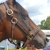
What a pretty guy Derek is with his gorgeous dapples, big chest, nice bone and great feet. We really enjoyed visiting with him and his trainers say he is quite a character, a real people horse. Apparently this personable guy love to snuggle his people, loves to be handled and loves to please. He is still racing at the moment but will be going home to be ridden at the farm. They say he is getting ready to retire and ready to move on to a new career. The trainer mentioned that he came to them with his puffy ankles but has been sound and he hasn't had any problems. He also said he has no vices. After some transition time he could be a fun show prospect for an adult or young rider. Derek is looking for a great companion and someone wants a horse that really enjoys his owner. Come out to see him and prepare to fall in love.
Asking: $500 neg. Trainer: Bill Barry Contact: Jackie 631 807-5922
http://www.pedigreequery.com/dazzling+derek http://www.equibase.com/premium/eqbHorseInfo.cfm?
Bad Neighbor, 7 year old, 16 h chestnut gelding
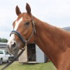
Update June 2014: Bad Neighbor has started his new career as a track pony with an exercise rider at the track. He is a natural, and we have seen him calming young horses and showing others the ropes.
Update late summer 2013: Bad Neighbor has retired from racing due to a bowed tendon and is rehabbing on his owners' farm near the track. Despite the bow he should be fine for most disciplines.
The only thing this boy is bad at is racing. His trainer says this guy is a morning glory who works out great in the am and then just fizzles in his races. AKA Tommy, he has a lovely topline, nice shoulder and the cutest little dot on his nose. He is a nice mover, tracked over at the walk and was very relaxed for his videos. His father, Kelly Kip was a million dollar winner! So with his great disposition and athletic ability he should transition easily into a new career.
Asking $700 Trainer Bob Ubbink 585-738-3159
As always, a pre-purchase veterinary exam is recommended.
http://www.pedigreequery.com/bad+neighbor http://www.equibase.com/profiles/Results.cfm?type=Horse&refno=8060202®istry=T
Lumberjane 2009 dark bay 16.3+ h mare
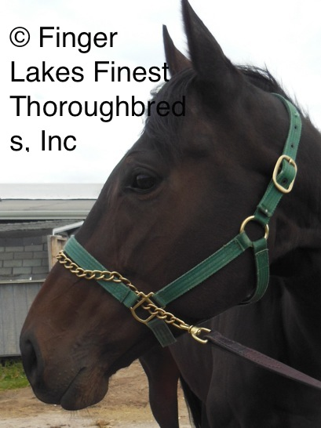
Hello Prime Timber offspring (so well known for great sport horses) lovers! The big and oh so sweet Lumberjane is back on our listings after we originally listed her as a lanky 3 year old youngster. She was retained for racing and actually produced a decent race record with 27 lifetime starts, 3 wins, 4 seconds and 4 thirds. That puts her in a category of competition on the track that the owner/trainer doesn't want to ask of her. She is much loved by her connections and it's easy to see why. When we first greeted Jane in her stall she walked right up and placed her lovely face into our volunteer's chest for scritches and loving. What a sweet mare she is! We handled Jane ourselves for her photos and video while the owner/trainer was busy elsewhere and she was perfectly quiet and well behaved for photos and jogging. She loved hanging out with us and getting our attention as much as we love providing it! The lanky youngster is now all grown up into a big bodied, big mare with balanced conformation and surprisingly lofty movement for such a big girl. She is described as sound and she appeared sound to us. She also politely picked up her feet when one of our volunteers picked the straw slippers out of her feet! Jane sometimes flips her palate when she races, but the trainer states that she gets anxious on race day and that stress exacerbates her tendency to have this issue. He feels confident that it is the rigors and stressof racing that cause this and that she is unlikely to have problems in another discipline.
We feel that we know Jane well after following her for a few years, and we think this mare has unlimited potential for an eventing, fox hunting or hunter/jumper career, and we would be delighted to see her in a loving home where she will be a pampered, doted-on best friend to her human.
Contact: Tommy Hurd 585-353-3084
Price: $1500 Race record and pedigree: http://www.equibase.com/profiles/Results.cfm?type=Horse&refno=8576949®istry=T
As always, a pre-purchase veterinary exam is recommended.
2012 Photos:
My Shaolin, 5 year old 16h chestnut gelding: retained for racing
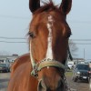
This beautiful young guy is solidly built, and while he has shown absolutely no aptitude for racing we think he has excellent jumping potential, and then when we saw him trot we could easily see him excelling in dressage as well. His video shows a lovely collected trot, with neck arched, that says dressage horse here, and no matter how many times the groom trotted him by us he just tracked right up and moved forward in that lovely cadence. He is by Orville n Wilburs who is a son of Cox's Ridge, so great jumping lines there too. SInce he is only four this guy is still likely to grow. Can you even imagine what he will be like all filled out and when he levels off his topline? If you're looking for a great prospect to bring along that looks like a warmblood this is your guy. His trainer says he is sound with no vices.
http://www.equibase.com/profiles/Results.cfm?type=Horse&refno=8611577®istry=T
http://www.pedigreequery.com/my+shaolin
Asking: $1,500 Contact: Megan Lucas 585-919-9614
As always, a pre-purchase veterinary exam is recommended.
Brazen Kat, 7 year old, 16.1-16.2 h dk bay gelding
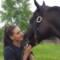
Update: August 2013: He is now at a H/J traing facility in Pennsylvania being retrained for a new career, and still looking for a new home. But with his retraining he is that much more ready for you! You may still call his owner/trainer from the track at the contact number listed, and she can put you in touch with the people retraining him in Pennsylvania.
"Kitty" is another much loved horse who would remain in the stable as a track pony if the trainer's daughter had her way! When we first saw him he was being hacked around the backside in western tack and we even got video of him doing a comfy lope on the path to the training track. He is a very mellow, very verstile horse who is sound on old knees. After watching him neck rein, turn on his haunches and lope in a western pleasure headset we were shocked to learn that this is only his third day under western tack! So he is apparently a quick learner as well as a mellow, mellow guy. His connections think he would make a terrific kid's mount with his sweet and sensible disposition. While he was standing in the road, still in western tack, he nuzzled his head to my chest, closed his eyes and I could practically hear him purring! If you're looking for handsome, quiet, bombproof and fun, here's your horse.
http://www.pedigreequery.com/brazen+kat
http://www.equibase.com/profiles/Results.cfm?type=Horse&refno=7704500®istry=T
Contact: Beth Miller-Saul-315-573-2864
Price: $2,000
As always, a pre-purchase veterinary exam is recommended.
Peakaboo Connie, 4 year old, 16.1 h chestnut filly
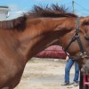
This pretty, sound, nice moving filly is described by her trainer as a very young four year old who is still maturing. He does not want to put any more time into her training for the track as she shows no aptitude for racing. He describes Connie as a very sweet, easy to handle, girl who is sound and has no vices. Because she is so lightly raced, and so quiet, we think she will be ready for retraining sooner, rather than later. We like her balanced conformation, gleaming coat and pretty face with soft eyes. At the jog she showed a pretty, sweeping fluid rhythm with cadence. We first listed this pretty filly last fall whe she was unraced, but then her owner decided he wanted to keep her over the winter at his farm and try to race her this year. We were impressed with how much she had grown and matured physically, and we think she is likely to grow a bit more. We can see this flashy beautiful mover of a girl getting you noticed in the show ring. Her sire is from the Relaunch/In Reality sire line, which is a very highly regarded bloodline for producing jumpers. She is out of the same dam as Broadway's Stardust, from the FLF class of 2011. And while she may not be much as a racehorse, she has obvious quality for other disciplines, at a bargain price!
http://www.pedigreequery.com/peakaboo+connie
http://www.equibase.com/profiles/Results.cfm?type=Horse&refno=8907972®istry=T
Contact: Jared Schoeneman 585-284-5837
Price: $1,000
Lady Lorna, 5 year old, 15.1-15.2 bay filly: Now at FLTAP
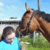
The trainer says this pretty girl will do whatever you ask. Her groom (who adores her) says she's not afraid of anything, is very sweet to handle outside of her stall, good to ride and really likes women. We watched them cuddling. She is such an unusual color, almost a buckskin with a great quarter horse build. She is beautifully bred by Belong to Me out of a Capetown mare. The trainer said she has just too many horses this year and Lorna just never got started so they would like to find her a new home. They have had her since she was weanling so you can get all her history. Trainer says she tends to be territorial in her stall so she would need an experienced handler. She is sound with no vices.
http://www.pedigreequery.com/lady+lorna2
Contact: Judy Turetsky 315 415-3550
Price: $1.000 negotiable
http://www.youtube.com/watch?v=1QXh0AWRu5I&feature=share&list=UUoFDUQqK-KWncEVDwiUIWDg
Smokin Warrior, 2004, 16.2 h bay gelding
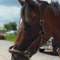
Gorgeous, sound, solid bodied, good mover... the epitome of the wonderful war horse. This guy has a lot of good years left in him, and the wise person who steps up for him will be richly rewarded in our opinion. Do not let his age deter you -- this horse is high quality with a great brain and personality! Smokin Warrior has a beautiful head and great conformation. He is both good-sized and elegant, and we loved his balanced movement. Indeed, when we watched him jog for his video, we could see him in the hunter ring. He has been "nothing but good" for his trainer, having won 20 races and earned over $250,000 on the track. He is described as sound, clean legged, with a very good quiet and kind temperament, loads and unloads politely, and is great in turnout. His trainer is extremely attached to this boy, which further testifies to the willing, sensible, and no nonsense attitude this horse has consistently shown in all circumstances. A quality "war horse" with a big heart who could go in many directions and bring you much pleasure!
http://www.pedigreequery.com/smokin+warrior http://www.equibase.com/profiles/Results.cfm?type=Horse&refno=7105820®istry=T Contact: Joe Marino 315 521-0583 or Marc Marino 315-719-1572
August 2014 Photos and Video
2013 Photos
Al's Lark, 10 year old 16.3 h dark bay gelding: new price!
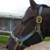
Update: July 2014: In the interest of finding this great horse a new home as soon as possible, his owner has decided to drop his price to well below what he is worth. This is a beautiful horse, sound, and ready for his new career!
Update May 1, 2014: This wonderful elegant horse had the winter off at a farm near Rochester, and his owner sent him to the track where he was started back galloping and swimming, and then decided that the best thing for this horse was to send him back to the farm, start retraining him for a new career, and find him a great new home. He can be seen at the farm, where they report that he is great to handle, an intelligent gentleman, and good in turn out.
An elegant, wise old soul of a war horse who has won over $275,000 in his successful racing career. Al impressed us with his quiet, gentlemanly attitude, and his kind eye. On a stormy day when many horses were acting up, Al was a perfect gentleman, and jogged quietly, showing off very nice movement. With his solid build, he will be able to accommodate a taller rider. Although he has some old "track jewelry" in his front ankles, he is described as sound on them, and he certainly jogged soundly for his video. We see many years of riding enjoyment in this handsome mature guy's future. He might make the perfect "husband" trail and pleasure horse! Shortly after we photographed him, Al was relocated to a farm in Webster NY, near Rochester NY and not too far from the Finger Lakes Race Track, where he will be turned out and let down from the track. You can call his owner and make an appointment to go see him there -- and since he will be enjoying turn out he will be that much more ready for you to transition him to his new career. http://www.equibase.com/profiles/Results.cfm?type=Horse&refno=7156734®istry=T http://www.pedigreequery.com/als+lark Price: $500 Contact: Pat DiLella 585-935-1512
As always, a pre-purchase veterinary exam is recommended.
Put it in the Sky, 4 year old bay 15h gelding: Now at FLTAP
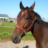
Update July 2014: He is now at the FLTAP adoption barn on the track premises, and you can see him there.
A cute and lightly raced young horse who was alert but very quiet and patient as we took his pictures; he just doesn't want to run! He is compactly built, sound and ready for a chance at a new career. There is room for him to grow some more, and imagine how nice he will look once filled out. We can see him as a wonderful all around pony clubber, trail or pleasure horse. He also comes from a sire line that produces good jumpers, so the hunter ring might be his niche, too. He is by Put it Back, who is by Honor and Glory, from the Relaunch/In Reality sire line. http://www.equibase.com/profiles/Results.cfm?type=Horse&refno=9242245®istry=T http://www.pedigreequery.com/put+it+in+the+sky
Price: adoption fee TBD Contact: Julie at FLTAP 585-924-9510
FLF Mystician, 5 year old, chestnut 16h gelding
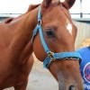
Update: December 8 2013: FLF has taken in the oh so sweet Mystician because we love him and want to work to make sure he gets the perfect home. He is being fotered by an FLF volunteer, who is falling in love... and just may not be able to part with him!
This sweet guy was brought out for us to see by the trainer's young son. He was very sweet and friendly for his pictures. His son said he is very quiet and his rider said he is good to ride. He had just raced 2 days ago and was still a bit stiff, so we did not get a video. The trainer said he is fine a few more days after a race. We were so impressed by his gentle sweet nature we think he would make a great mount for a mature rider or child's horse with some additional training. His trainer says he would be a wonderful kid's horse. The rainy day was so drab his pictures just don't him justice. This nice boy is really looking for someone to love him and let him finish growing and mature into the wonderful horse he can become. He may need to move soon.
http://www.pedigreequery.com/mystician http://www.equibase.com/profiles/Results.cfm?type=Horse&refno=8735547®istry=T
As always, a pre-purchase veterinary exam is recommended.
Pure Nature, 5 year old 16.2h bay gelding: New Price!
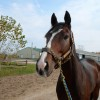
Flashy sport horse prospect – young, sound, nice mover, great brain! We first listed him last year, and although his owner/trainer decided to keep him to race again this year, he generated quite a lot of interest. Well, they are now committed to retiring him from racing and finding him a great new home, so go snag this outstanding prospect quickly. We were impressed with how much he had grown since we saw him last year, and now that he is 5 he has probably reached close to his full mature height. His trainer says he is a very sweet horse, quiet, well behaved, and sound with no vices. She thinks he would bond with a younger person since he is so sweet. She described him as a forward horse who is on the bit during training and demonstrates an eagerness to do his job. He showed a lovely trot with cadence and suspension, and in a race video that we watched we also saw fluid, flat kneed movement. This handsome boy could go in any direction – the hunter ring, eventing, dressage. He is by Hook and Ladder, which is a good pedigree for jumping. http://www.equibase.com/profiles/Results.cfm?type=Horse&refno=8583888®istry=T http://www.pedigreequery.com/pure+nature
Price: $1,000 Contact: Lesley Friedman 585-919-9170
As always, a pre-purchase veterinary exam is recommended.
Radical Storm, 10 year old, 15.2 h liver chestnut gelding: retained for racing
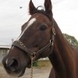
Desert Doctor, 6 year old, 16h dark bay mare
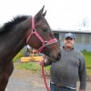
Update June 2014: She is back at the track, looking great, and her trainer says one more race and then she will definitely be ready to move on to a new home.
Despite the rain this lovely girl showed us just how pretty and athletic she is. She was very sweet and quiet and really enjoyed her mints as she stood munching in the drizzle. She has not shown much aptitude as a racehorse, and her trainer says she is done racing and he wants to find her a good home. He says she has good manners is easy to handle and work with. For her jog video she trotted out on a loose lead, perfectly behaved, and showed off a good stride with lightness and reach. We can see her as an event horse or a show hunter, or as just an all around horse to enjoy. This friendly girl certainly enjoyed all the attention while we all got soaked.
http://www.pedigreequery.com/desert+doctor http://www.equibase.com/profiles/Results.cfm?type=Horse&refno=8317481®istry=T
Asking: $500 Contact : Ulises Gonzalez 585 615-0497
As always, a pre-purchase veterinary exam is recommended.
Raise the Code, 6 year old 16.3 h dark bay gelding: New price!
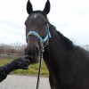
With his size, looks and obvious athleticism, this impressive horse is a perfect candidate to be an eventer or to excel in the H/J ring. He has the slightly uphill, well balanced build , and lightness and suspension in his movement desired by eventers and dressage riders. He is lightly raced, with only 18 starts. He has an old bow, but his trainer says he is sound on it. Indeed, he is a barn favorite with a personality that has captured the heart of everyone in the shedrow. He is expressive, likes attention, and loves candy, especially nerds candy! On the day we took these photos, we caught up with him just before he was going over to the eurociser for a workout, so he was wrapped with bell boots in preparation for that, not because there is anything wrong with his legs. He was very well behaved and jogged quietely for his video, even though horses nearby on the walking machine were bucking and acting up. He just looked at them with interest and went aobut his business -- definitely the ability to focus on the job at hand on the cross country course!
http://www.pedigreequery.com/raise+the+code
http://www.equibase.com/profiles/Results.cfm?type=Horse&refno=8339208®istry=T
Contact: Beth Miller-Saul-315-573-2864
Price: $1,500 neg.
As always, a pre-purchase veterinary exam is recommended.
U Ought to Know, 5 year old 16.2 h chestnut gelding
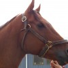
Handsome, with an uphill balanced build, great shoulder, clean as a whistle legs, sound, very good mover, good brain -- very high quality prospect here for eventing, dressage or H/J. The trainer's daughter tells us he is also a real sweetheart! This horse is what everyone says they want: young, sound, athletic, and good to work with! His trainer says he ran well at the end of the meet last year so they decided to keep him over the winter and try to bring him back to the races this spring. But he seems to have lost interest in racing this year, so it is time to find him a new discipline. He is described as a very nice horse to handle with no vices, and his trainer says he is very sound. Indeed, we noticed that his legs and ankles have no signs of any wear and tear on them at all. He was a perfect gentleman for his photo session and jog video, and showed impressive movement with reach and suspension. There is nothing not to like about this young guy! http://www.equibase.com/profiles/Results.cfm?type=Horse&refno=8554913®istry=T http://www.pedigreequery.com/u+ought+to+know
Price: $1,000 Contact: Ralph D'Alessandro 585-281-1029
As always, a pre-purchase veterinary exam is recommended.
Face in the Mirror, 10 year old, 16h dark bay gelding
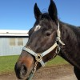
This handsome devil falls into the warhorse category with over 70 starts and close to $100,000 in earnings. Horses like him are hardy and still have a lot of life and miles in the saddle to give. On the same token, he has been well cared for and appreciated by his connections and has an air of wisdom that comes from years of doing his job, and doing it well. He is described by his trainer as 100% sound and has never set a foot wrong. He's an easy keeper, easy and quiet to work with, has never even required bandages. He is by the hot New York sire Catienus out of a Mr. Greeley mare. He gleams with good health and we saw a beautifully conformed almost black gelding whose trainer couldn't say enough good things about him.
Contact: Chris Roncone: 585-303-0335
Price: $2000 neg
http://www.pedigreequery.com/face+in+the+mirror
http://www.equibase.com/profiles/Results.cfm?type=Horse&refno=7137335®istry=T
As always, a pre-purchase veterinary exam is recommended.
Quite a Feat, 6 year old 16.3 h bay mare
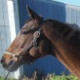
Quite a solid beauty underneath her furry winter coat! Great bone, great shoulder, uphill build, very nice mover, young and sound – there’s a lot of potential for any discipline here. Last year she was a winning machine, but this year she is not racing as well, and she is letting her trainer know it is time to find her a new career. She was a perfect lady for her photos and seemed to enjoy posing for us to admire. We were told she is very sensible and good to handle, and that she is great on the farm in turnout with other horses. She showed off a light floaty trot that had us thinking this lovely mare could shine in the hunter ring or in eventing and the dressage arena. She also has excellent breeding for sport, with names on her dam side such as Quiet American, Fappiano, In Reality, Prince John, Noholme. http://www.equibase.com/profiles/Results.cfm?type=Horse&refno=8259275®istry=T http://www.pedigreequery.com/quite+a+feat2 Price: $2500 Contact: Linda Dixon 585-329-9062 (try her first) or Hector Alejandro (315) 945-7676
As always, a pre-purchase veterinary exam is recommended.
Diva Star, 3 year old, 15.3-16 bay filly
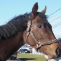
This sweetie is much loved by her trainer. She says this girl is just too slow for racing and would like to move her on to a new career. Very sweet and friendly she feels with further training she would be a good child's horse or lesson horse. She says she is good in her stall and good to ride. We were impressed how quiet and easy to handle while she trotted for her video. Her trainer states she is sound with no vices. She has a dropped hip but says the riders say that they don't even notice when they work her. Since she is only a three year old, she is likely to grow and fill out more. She has an excellent pedigree -- good enough to give her some broodmare potential, by the successful sire Cherokee Run, out of a stakes placed mare by top sire Mr. Greeley, who is a son of Gone West. A good home is an absolute must for this lovely girl.
Contact: Bev Wheaton 585 455-8823 Asking:$500
http://www.pedigreequery.com/diva+star4 http://www.equibase.com/profiles/Results.cfm?type=Horse&refno=8861803®istry=T
As always, a pre-purchase veterinary exam is recommended.
Tannery Town 5 year old 16 h bay gelding - Updated Photos!
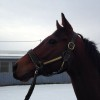
Update September 2014: Tannery Town has been hanging out on a farm near the track, still waiting for his new home. We were able to go to this farm and get new photos of him, and you can see what a beautiful horse he is. He is sound and eager for a new person and a job!
This sweet and friendly son of Hook and Ladder impressed us with his alert intelligent expression, pretty head, and solid build. His groom described him as quiet with no vices, and we saw that for ourselves as he got the horse ready for his photos. Tannery had raced just a couple of days before, so the wraps were standard post race care. The groom said he has set osselets on his ankles, but is racing sound on them. It was far too icy for a jog video, but we did watch some race replays to assess the horse's movement, and he looked like a nice balanced mover. It is time for Tannery to find a new career because since he broke his maiden he has not raced will enough in the next level of competition. We think he could make a fun pleasure or trail horse, and he also seemed quiet and kind enough for a kid's horse, pony club, or a lesson program after retraining.
http://www.equibase.com/profiles/Results.cfm?type=Horse&refno=8592213®istry=T http://www.pedigreequery.com/tannery+town Price: $500
Contact Chris Progno or Lisa Reed 585-303-0527
As always, a pre-purchase veterinary exam is recommended.
Top Lass, 8 year old bay mare
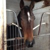
What a beautiful and very sweet mare, and she's also a lovely mover. Well balanced, good conformation, clean legs, she is described as sound and easy to handle. Top Lass has been a good hard knocking durable race horse, winning 8 races and over $136,000. In her first year of racing at the age of four, she was a Saratoga allowance winner, which shows her class and quality. We spent a lot of time petting her, and she was very friendly and quiet, and soaked up our attention.She has an outstanding pedigree for sport. Her grandsire is Private Account, who's a son of Damascus and grandson of Buckpasser. She also has Hoist the Flag and Dixieland Band close up. Excellent broodmare potential here. She is located on a farm very close to the Finger Lakes race track, where you can go get a close up look at this lovely mare. http://www.equibase.com/profiles/Results.cfm?type=Horse&refno=7506551®istry=T http://www.pedigreequery.com/top+lass4
Price: $600 negotiable Contact: Mike LeCesse 585-303-9467
Jilly Willy 7 year old chestnut mare with chrome: retained for racing and breeding
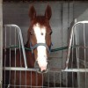
What a flashy solidly built girl, and who wouldn't fall in love with her pretty face with her wide blaze with spots! This well bred daughter of City Zip is built like a tank, and she was friendly and alert. She is described as sound and good to handle, and she's got very nice movement. She has a half sister out of the same mare who is a successful show hunter, so that potential is definitely there for Jilly Willy. We can also see her in western tack, doing barrels, or as a sport horse broodmare. She is at a farm very close to the Finger Lakes race track, where you too can come admire her. In addition to watching her jog for her video, we watched some race videos to assess her movement, and Jilly Willy looks to have a fluid balanced flat kneed gallop and trot. She has won 5 races with many in the money finishes, and her trainer wants to retire her while she is sound since there are fewer race conditions she is eligible for. http://www.equibase.com/profiles/Results.cfm?type=Horse&refno=8099748®istry=T http://www.pedigreequery.com/jilly+willy Price: $1,000 negotiable Contact: Mike LeCesse 585-303-9467
Good and Grateful, 2009, 15.3 bay gelding: available again
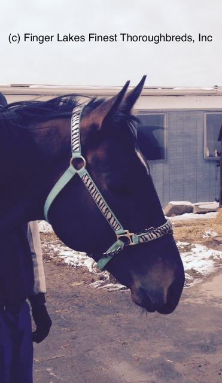
Previously retained to continue racing - now available again (11/28/14)
Wow! What a shiny, classy, and correct gelding this beautifully bred boy is! He is by top sire Pulpit, a son of AP Indy, out of a mare by Unbridled. His full sister sold for $575,000 as a yearling. He was bred at Claiborne Farm, one of Kentucky's most illustrious and historic farms. He is has a sore knee with some arthritis, has raced on it, but it is time to stop on him so he can move onto a career that is less strenuous and that he enjoys more. We are told that he has no vices and is nice to work with in the barn. If you would like a beautiful regally bred horse as your pleasure riding companion, then please step up to give this horse a chance at a good new life. He will surely be grateful, and good to you!
Race record and pedigree: http://www.equibase.com/profiles/Results.cfm?type=Horse&refno=8606664®istry=T
http://www.pedigreequery.com/good+and+grateful
Price: $500 neg
Contact: Marisa (trainer's daughter) 315-719-9665
11/28/14 photos
As always, a pre-purchase exam is recommended.
Love Co Bro, 2011, 16h+ bay gelding
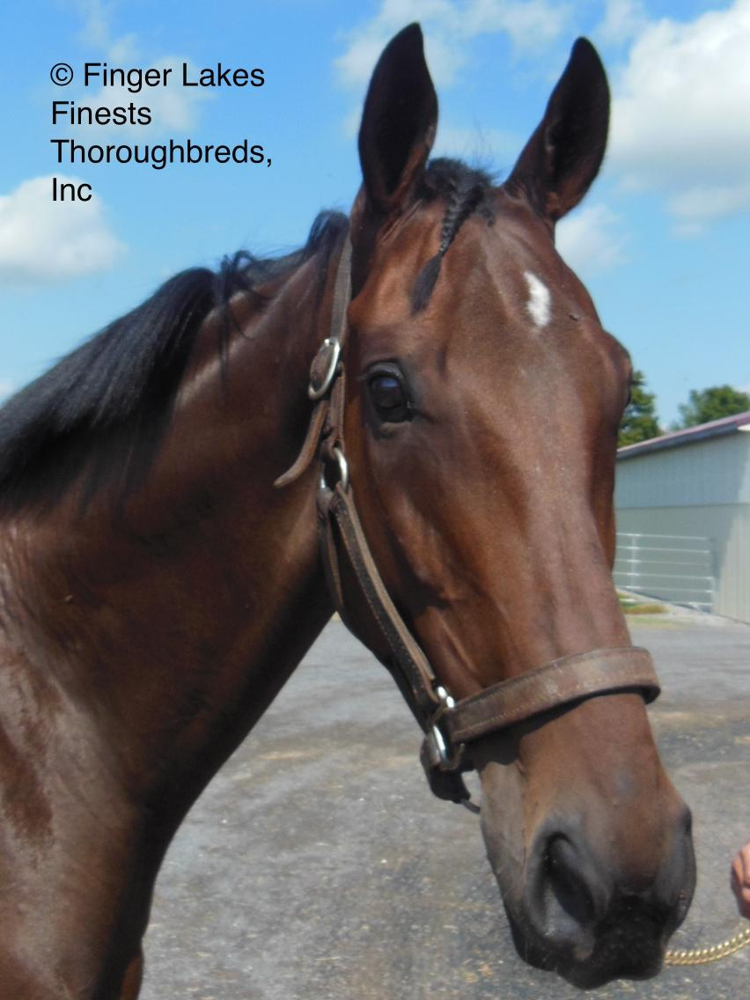
This handsome young guy impressed us with his presence, his great shoulder, nice topline, and good bone. And if that's not enough, he is also a lovely fluid mover with nice suspension! All of that adds up to an impressive prospect for the show ring. He was quiet and good to handle for his photo session, and as you can see, he did not even need a nose chain. The trainer says he came to them with a slightly large knee, but he has raced sound on it, it does not have heat, and she thinks it might just be old scar tissue. He certainly appeared sound for his trot video, and we saw him only two days after a race. He just hasn't shown much racing ability, so they want to find him a new career. He has excellent breeding for the sport horse/jumping world, as a son of Lemon Drop Kid out of a Cozzene mare. He's only three, so he is likely to grow some more, and we think he will top out at a good bit over 16h. http://www.pedigreequery.com/love+co+bro
http://www.equibase.com/profiles/Results.cfm?type=Horse&refno=9108329®istry=T
Price: $600 negotiable
Contact Alesha (585) 733-4388
As always, a pre-purchase veterinary exam is recommended.
What Would Jay Do, 2011, 15.3h+ bay gelding
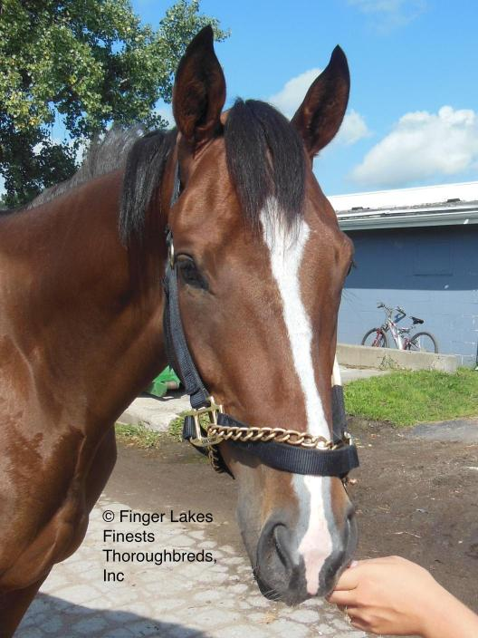
One thing Jay likes to do is smooch! Horses don't come much cuter or sweeter than this lightly raced, still growing, sound and adorable guy. He is very well bred, by top sire Tale of the Cat, and his fourth dam is the great sprinting race mare Ta Wee; his looks and pedigree warranted an $80,000 yearling purchase price. While he trains great in the mornings, he isn't interested in beating the competition in the afternoon, so they want to find him a new career. With his solid build, flashy good looks, and toe pointing light movement at the trot, we can see a great show hunter career in his future. His trainer thinks he could be a children's hunter with proper retraining. He is described as sound, with no vices, quiet to handle, and super sweet... which we could certainly see for ourselves! He had already been done up with the front wraps by the time we got to his barn, and they are standard post-race care, since we saw him the day after he raced. He is likely to grow more, and we think he will top out at 16 h or more. http://www.pedigreequery.com/what+would+jay+do
http://www.equibase.com/profiles/Results.cfm?type=Horse&refno=9130927®istry=T
Price: $1,500.
Contact Tammi Lord, 585-337-8661
Stagflation, 3 y.o. 16.1h bay gelding
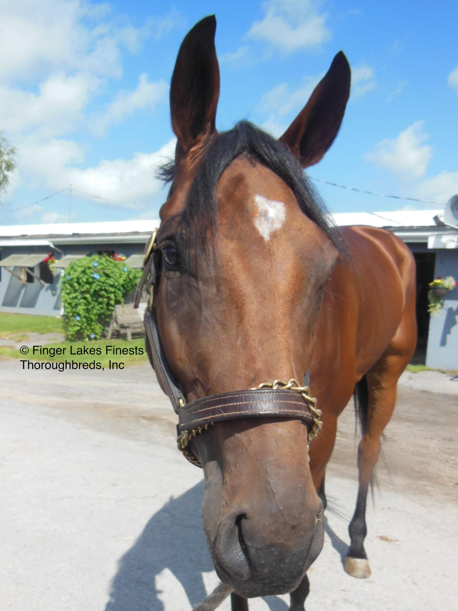
This big, beautiful A.P. Indy grandson with only 4 starts is a stellar show hunter prospect, A circuit quality here! He is very quiet and laid back, and a beautiful mover with great balance, an effortless, light floaty stride with nice cadence and suspension. Once he fills out and finishes growing, we can see him floating quietly around the hunter ring, making quite an impression! But eventers and dressage riders should also take a serious look at this impressive guy! His trainer says he is very sound, quiet and good to handle, with no vices. And we can certainly vouch for his sweet, friendly personality. Not only did he try to help us write our notes, he was in our pockets looking for more mints! Better call fast; exceptional young sound horses like this go quickly! http://www.pedigreequery.com/stagflation
http://www.equibase.com/profiles/Results.cfm?type=Horse&refno=9078153®istry=T
Price: $2,500 negotiable.
Contact Bill Bartlett, 585-749-6446
Miss Brass Bonanza, 2009, 16h Bay Mare
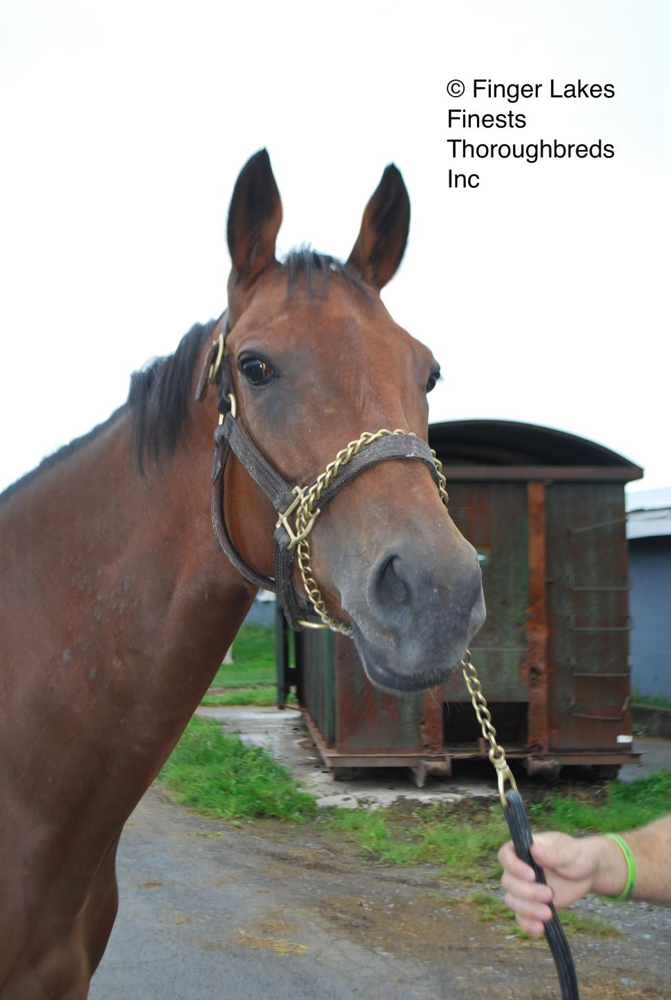
This is a nice, friendly mare who has made it apparent to her trainers that her talents are no longer on the racetrack. She has a beautiful uphill build and a wonderful disposition and is ready to move on to her new career. She is sound with no stall vices, quiet to work around and a genuinely pleasant mare.
http://www.equibase.com/profiles/Results.cfm?type=Horse&refno=8632415®istry=T
Price: $2,000 negotiable. Contact Rachel Sells 585-748-0983
As always, a pre-purchase veterinary exam is recommended.
Pumpkin Lane, 2010 16h Chestnut filly: new price!
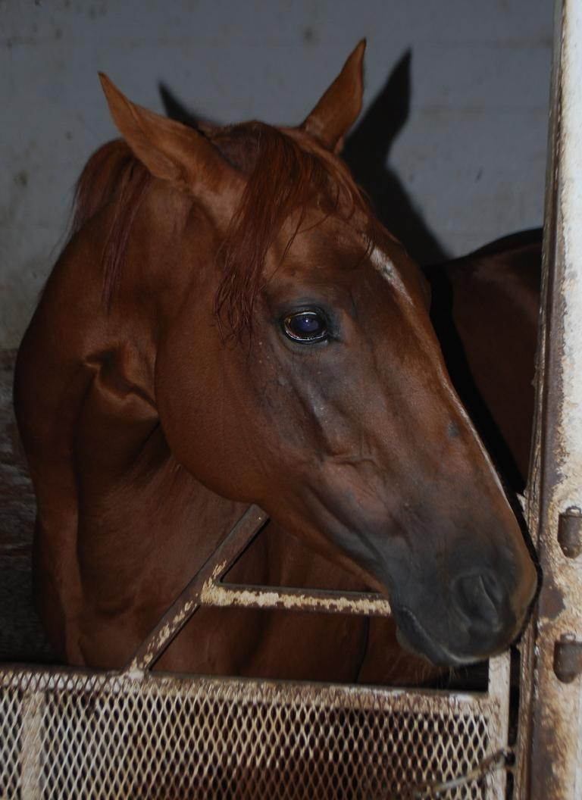
With the trainer's busy schedule at the track last Saturday, our volunteers were only able to see this mare in her stall, but she does seem to have a bright personality. Trainer states that she will need an experienced new owner, but she does well with a confident handler. Pumpkin Lane has an old knee injury that is sometimes sore after racing, but she is always sound after a few days and the trainer does not believe it will affect her at all with a workload lighter than race training. We will hopefully get some better pictures and video on a coming weekend to show this mare's true beauty! She needs to find a new home as soon as possible.
http://www.equibase.com/profiles/Results.cfm?type=Horse&refno=8822465®istry=T
Price $500 negotiable to a good home
Contact Luis Gutierrez.585-880-5622
Two Gendarmes, (aka "George") 2005 16.3 h dark bay gelding
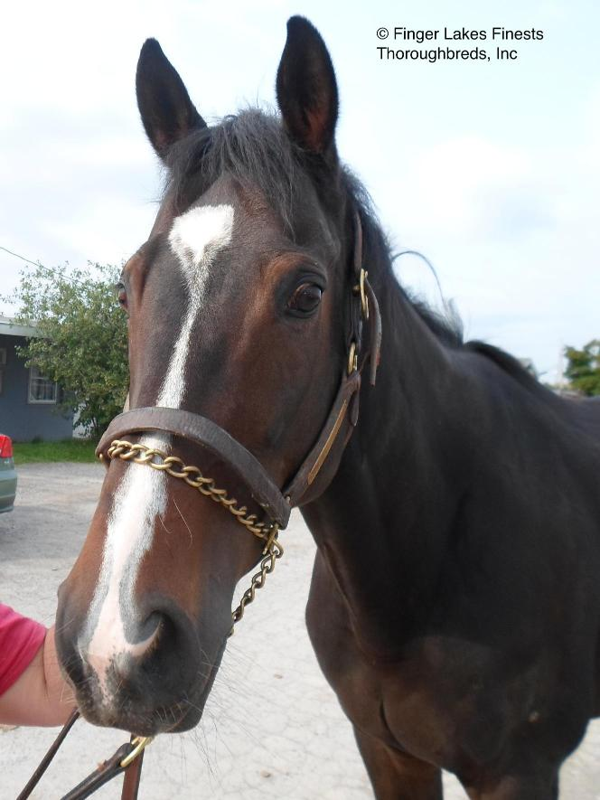
This beautiful wise and kind horse is much loved by his owner/trainer, and she wants to find him the perfect forever home where he will be cherished and pampered as much as he has been with her. He is a gorgeous big boy, is sound, very quiet and mellow. Since being retired from racing last summer George has been hanging out at her farm, and she reports that he has been ridden there in a western saddle and on trail, and he has been a perfect gentleman. He is a very sociable horse who likes people, loves peppermints, is good in turn out with other horses, is good to handle and for the farrier. He is currently barefoot, and has good strong feet. He is a mild cribber. George is a great candidate for a "husband horse," or your own trail and pleasure horse. But he is also certainly striking enough to take you to the show ring or dressage arena. If you are looking for a truly wonderful kind, sound, big horse who is ready to start in his new career then George is for you, if you can provide the great home references that will pass muster with his owner/trainer. Price: $500 negotiable to a certified excellent home Contact: Eileen Muller 585-748-5261
http://www.equibase.com/profiles/Results.cfm?type=Horse&refno=7415029®istry=T
As always, a pre-purchase veterinary exam is recommended.
Giovanna Mambo, 2010 16 h grey gelding
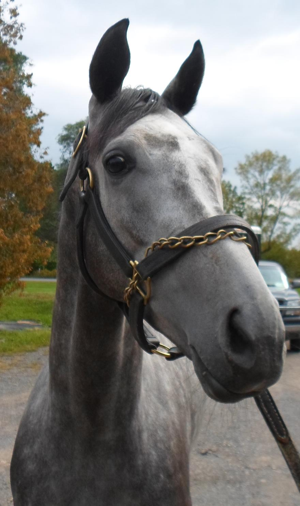
Stunning looking, dark dappled grey, lightly raced, sound, lovely mover, quiet... WOW, this is what everyone wants, so you better call fast on this one! After only 4 races, it is evident that racing is not Mambo's game, but he sure can shine in another discipline. With his elegant good looks and flowing walk and light, toe pointing trot we can see him excelling in the hunter ring. His legs are clean, and his trainer says he is completely sound, just slow. He is currently on a farm very close to the Finger Lakes Race Track, and the people at the farm say he is very quiet and good to handle. He posed politely for his photos, and impressed us with his beauty, his kind eye, and his elegant intelligent look. He jogged quietly for his video, even though a young horse was romping in the turnout area next to him. This lovely guy is quite the bargain for his quality and looks.
Price: $1,000 Contact: Jamie Boldt 585 943-4298
Race Record and pedigree: http://www.equibase.com/profiles/Results.cfm?type=Horse&refno=8852278®istry=T
Token Sacrifice, 2007 16.3h bay gelding
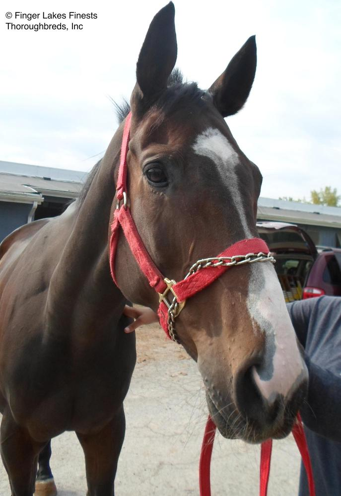
This big handsome horse has been a successful hard knocking race horse who has won over $150,000. He recently bowed his tendon, and he will need rehabilitation time. His groom described him as a kind good boy, and she wants to find him a good home where after he heals, he can reward his new person with his big heart and good work ethic. We admired his big solid frame and his kind intelligent eye. He was very friendly, appreciated our attention, and despite his recent injury, he walked fine out of his stall to come out for his photo session. Please consider opening your heart and good home to this wonderful horse who just needs some rehabilitation time before he can start his new career.
Price: $500 negotiable to a good home
Contact: Ana Soto 585-789-0417
Race Record and pedigree: http://www.equibase.com/profiles/Results.cfm?type=Horse&refno=8059435®istry=T
Mono Cliffs, 2009 16.2h dark bay gelding
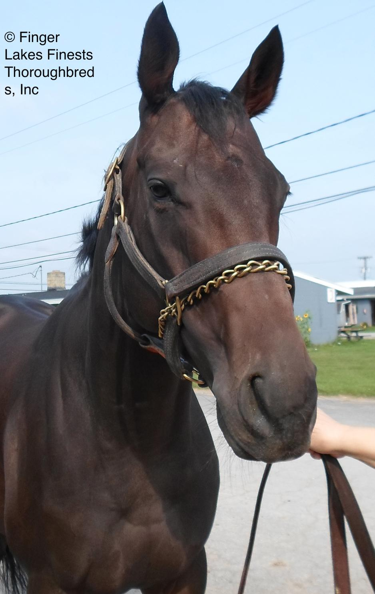
An elegant and beautiful horse, with a dappled coat, uphill build, good shoulder and a nice topline. In his last race, he chipped a sesamoid. His owner/trainer described it as a small chip off the back, with no compromising of ligaments. She says that x-rays are available and she will authorize the vet to discuss his prognosis with serious prospective buyers. She reports that the vet says he will need 6 to 8 weeks of stall rest, then limited turn out and walking, and that after rehab he should be fine for most disciplines, even jumping. His owner/trainer says he is a gentle, sweet, and kind horse, great to work around, with no vices. We have a feeling this one is a special horse, who will richly reward the person who is willing and able to put in the rehab. An excellent home is essential, and references will be required.
Price:
Contact: Bev Wheaton 585-455-8823
Race record and pedigree: http://www.equibase.com/profiles/Results.cfm?type=Horse&refno=8717060®istry=T
Missed A Wildcat, 2010 16.1h bay filly
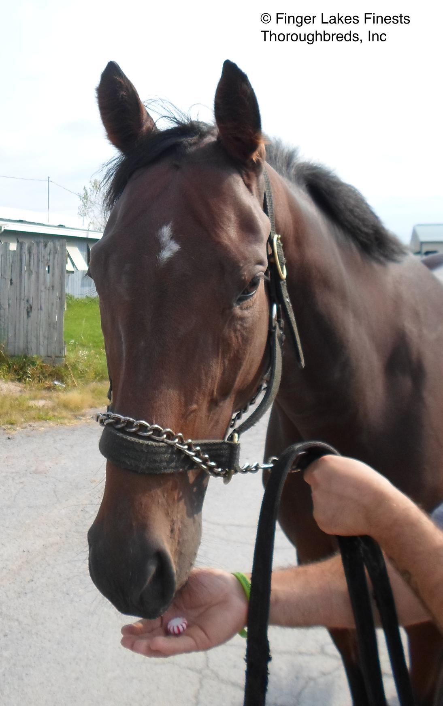
This very pretty, dappled girl is described as sound but just not showing enough ability as a racehorse, so she needs to find a new career. She has a well balanced build and a great shoulder. She showed off a flowing walk and a lovely toe pointing light trot for her video. Her looks and movement suggest that the show hunter ring or dressage might be good new careers for her. She was described as good to ride, with a good work ethic, a horse who enjoys her training. She has been turned out with other mares, and is well behaved in the group. We were also told that she is good to load, bathe, and for the farrier. This pretty young sound girl is quite the bargain!
11/2014 Note: We had this stunning mare listed earlier but she was sold to continue racing. In her last race, she tripped coming out of the gate and gashed her leg. The cuts are superficial and still very fresh. The trainer reports the swelling is due to the fresh cuts and there is no tendon, ligament, or bone injuries associated. She could continue racing after the cuts heal and the swelling goes down, but this late in the meet, the trainer prefers she find a new home to begin a second career.
Price: $500 negotiable to a good home
Contact: Victor (585) 919 9704
Race Record and Pedigree: http://www.equibase.com/profiles/Results.cfm?type=Horse&refno=8850489®istry=T
Shadow Hall, 2010 16.2h bay gelding
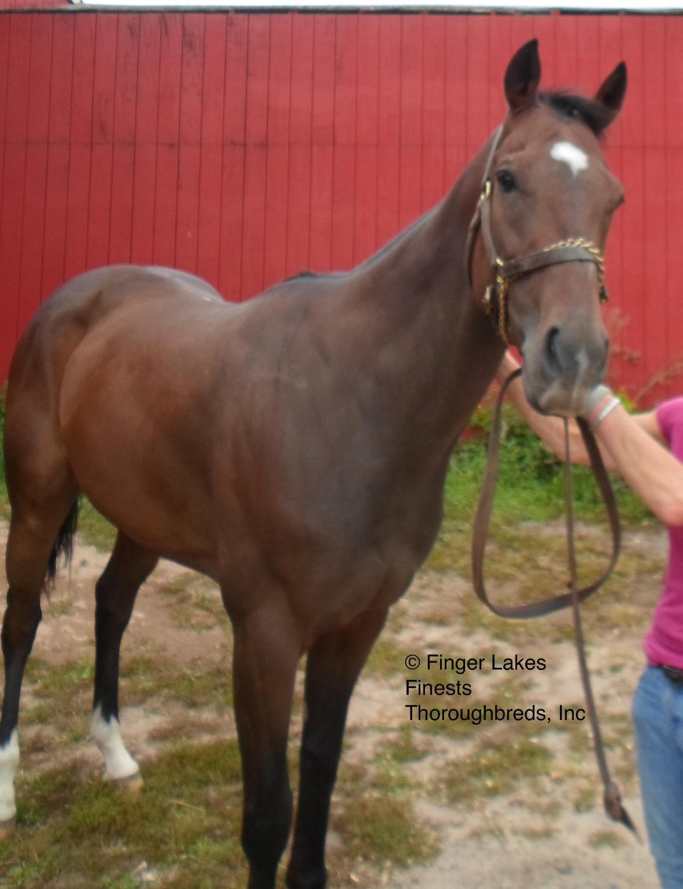
Very handsome and well put together, with a kind eye and an intelligent alert look about him, Shadow Hall impressed us as a young, sound, athlete who has great potential for a sport career in eventing or dressage or jumping. His trainer kept raving about what an intelligent and athletic horse he is, and she says he has a good heart and work ethic. If you treat him well and with respect, he will reward you with trust and great effort to do what you want. She said he was previously in a bad barn where some people hit the horses, and he came to her wary and distrustful, but she has quickly won his trust and watched his good nature blossom. She has ridden him, and reports that he rides like a dream, and acts like he has had show horse training. His good looks and athleticism warranted Shadow Hall being purchased for $130,000 as a two year old, so he is now quite the bargain. His trainer reports that he is sound, but has an old set osselet that causes no problems. On the day we photographed him, he was barefoot and had just been trimmed, so he was a bit footsore, but out in his grassy paddock he showed lofty movement with suspension and extension that made us think of dressage. Because of his size, youth, athleticism, and history with less than kind people, she recommends him for an experienced rider. With the right person, we think you will have a trusted sporting partner for a long time. He is located at a farm very close to the Finger Lakes Race Track.
Price: $1,000
Contact: Dorothy Gentner 518- 522-0229
Race Record and pedigree: http://www.equibase.com/profiles/Results.cfm?type=Horse&refno=8895488®istry=T
Rey Rocket, 2010 16.3h dark bay gelding
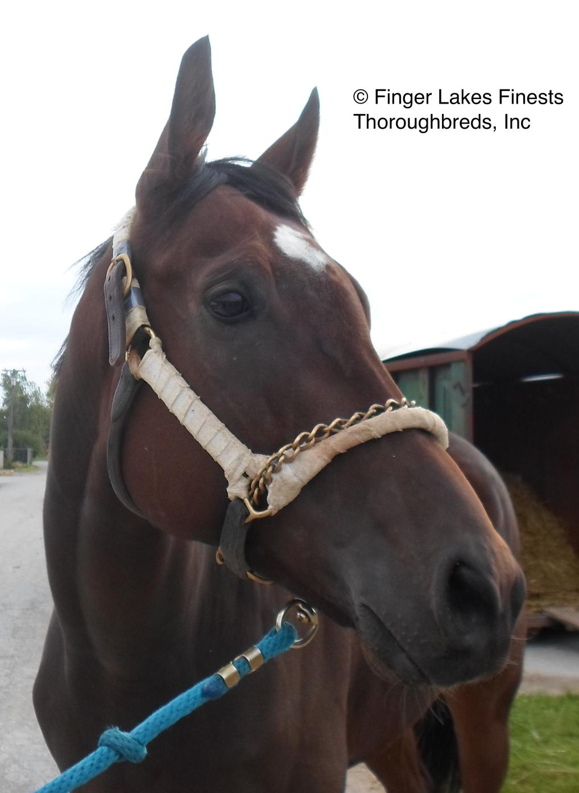
This big, sound handsome young horse is described by his trainer as the kindest horse in her barn, much loved by her young son and daughter. She says he is an absolute doll to work with, is great on the farm and in turn out, and that he is very sound. We admired his kind intelligent eye, and his well balanced conformation and strong sloping shoulder. Rey had raced the day before his photo session, and he got a few cuts, so the jog video will have to wait until next week. We watched some race videos and observed a big strided fluid gallop. Rey is an outstanding prospect for any discipline!
Price: $2,000
Contact: Megan Lucas 585-919-9614
Race record and pedigree:
http://www.equibase.com/profiles/Results.cfm?type=Horse&refno=9045649®istry=T
Head Spin, 2010 16.3h bay filly with chrome
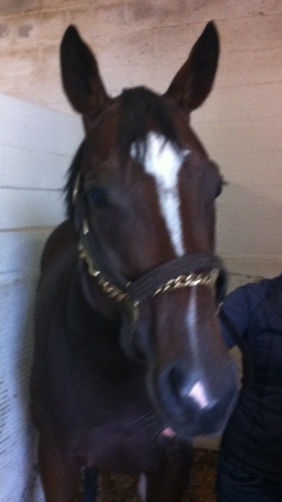
This big, beautiful, solid boned, flashy, and well bred filly is an outstanding broodmare prospect. She has run well in only five starts, with two wins and a second, but last summer in her first race she checked sharply trying to avoid a fallen horse and then fell over that horse, and she injured her knee. While the knee has held up racing this year, her trainer does not want to push her to keep racing, and he wants to retire her while still sound because of her potential as a broodmare or for other disciplines. Very cleverly named, she is by top NY sire Freud (a full brother to the world's leading sire Giant's Causeway) out of Episodic, by champion sire Distorted Humor. We admired her good bone, balanced proportions and big shoulder. Since she is only four and still a bit butt high, she may well grow a bit more. We saw a flowing long strided walk, but her trainer did not want to jog her for a video because she had not been doing any exercise for a few weeks and there was a lot of activity around the barn. We watched the videos of her winning races, and we observed a beautiful mover, with a fluid long strided gallop and a lofty flat kneed trot with great reach. Her bloodlines are excellent for breeding to race or for sport. Price: $1,000 negotiable Contact: Dan Conway 585-329-7803
http://www.equibase.com/profiles/Results.cfm?type=Horse&refno=8841506®istry=T
Lucinda
As always, a pre-purchase veterinary exam is recommended.
Luck in the City, 2008 15.2-3 h bay mare
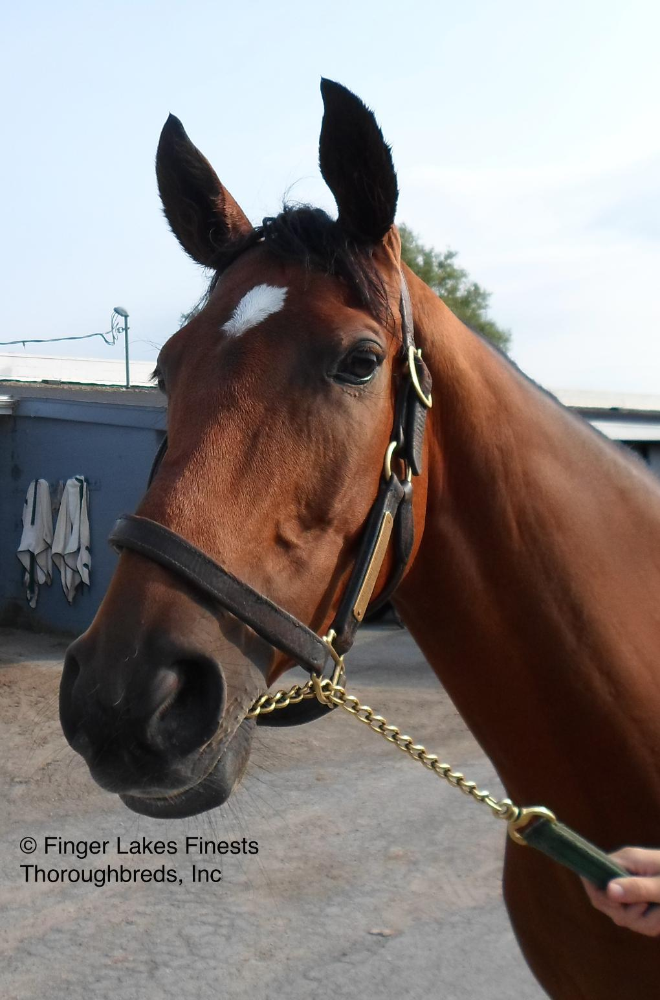
What a pretty, solidly built mare! Her trainer says she is a happy girl, a forward goer, and she is always on her best behavior. Indeed, they say "she never does anything bad." She is very well put together, and will take up more leg than her smaller size might indicate. In addition to her flashy hind socks, we noticed she has a white spot on her belly. Her trainer says she is sound, but she is just not racing well enough this year to keep her going next season, so it is time to find her a new career. With her looks we can see her in the show ring, but she also has the build and happy forward attitude to be a polo pony. Price: $1,000 negotiable Contact: Dan Conway 585-329-7803
http://www.equibase.com/profiles/Results.cfm?type=Horse&refno=8318358®istry=T
As always, a pre-purchase veterinary exam is recommended.
Hurling, 2008 16.3 h bay gelding
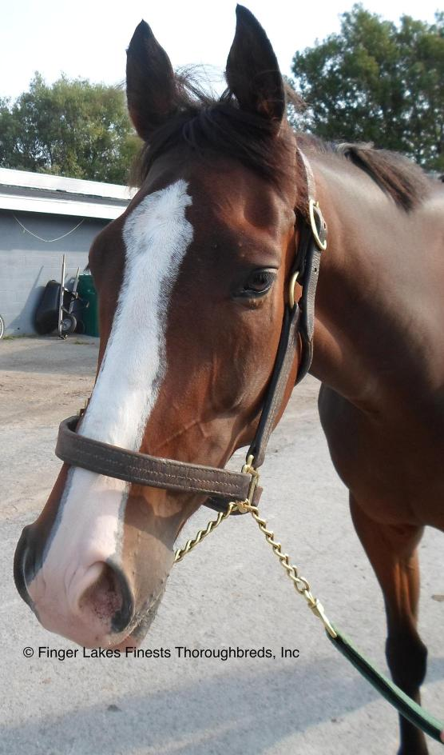
This big, flashy, athletic, sound gelding is an excellent sport horse prospect. He has been a successful race horse, with ten wins and 12 placings in his career, so he obviously has heart and determination that should transfer to the cross country course. He was the dappled picture of health, and so well behaved for his photos. He had raced just a couple of days before his photo session, but he jogged soundly and while he was very laid back and did not fully trot out, he looked like a nice mover. We watched some of his many winning race videos, and observed a fluid ground covering gallop. His trainer says he is sound, but it is time to find him a new career because with so many wins there are fewer race conditions left for him. He says Hurling is good to ride, has been a perfect gentleman when turned out at their farm. Due to Hurling's size and athleticism and strong work ethic, his trainer recommends an experienced rider and horse person, and we can see him taking you far in the eventing world. Price: $2,000 Contact: Dan Conway 585-329-7803 http://www.equibase.com/profiles/Results.cfm?type=Horse&refno=8331336®istry=T
As always, a pre-purchase veterinary exam is recommended.
Raecinjasin, 2008 16.3h liver chestnut gelding
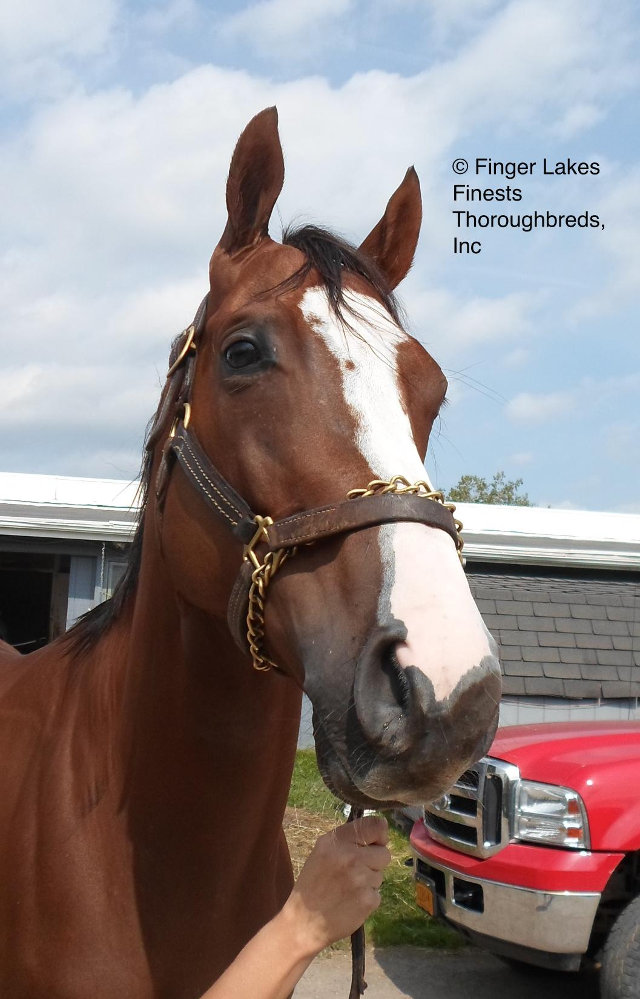
This big beautiful guy is absolutely stunning in person; he dazzled us with his solid boned, beautifully balanced and correct conformation, his great shoulder, his regal presence, and his gleaming caramel colored coat. And he is a very impressive, athletic mover who tracks up well, shows suspension, and has a good flat kneed reach to his trot. The photos simply do not do him justice. You have to come see him for yourself, and we are confident you will be as impressed as we were. His owner/trainer described him as sound, but he just seems to be losing interest in racing after starting out well in the spring. Jasin is a barn favorite, much loved, and they want to find him a new career in a great home while he is still sound with so much potential. We think he could go in any direction, but with his size, movement, and excellent jumping lines in his pedigree, we can see him going far in the hunter/jumper world or in eventing. He will hardly look out of place amongst big warmbloods. He is by Prime Timber, who is from the Cox's Ridge sire line, which is well known for producing athletic horses who are good jumpers. His dam is by Marquetry, who has produced several beautiful movers who are excelling in the hunter ring. Jasin is best suited for an experienced rider because of his size and athleticism, and also because he is described as a horse who will try to intimidate a handler who is not confident and experienced. He was perfectly behaved with his experienced handler, even though he towered over her. He is described as very well behaved on the farm, and good in turn out. He is a mild occasional cribber who sometimes chews a bit of wood around feeding time, but his trainer says he does not need a collar, and he controls it by spraying anti-wood chew spray on the one chewing spot. We think Raecinjasin is an outstanding sport horse prospect, and horses of this quality don't last long, so call soon!
Price: $3,000 Contact: Polly Grabowski 315-986-7013. Note: this is a landline, so do not text. Best time to call is between 3 pm and 7 pm. Leave a message, she will call back. Serious inquiries only please.
Race record and pedigree: http://www.equibase.com/profiles/Results.cfm?type=Horse&refno=8281558®istry=T
Spirited Flight, 2011 15.3h dark bay filly
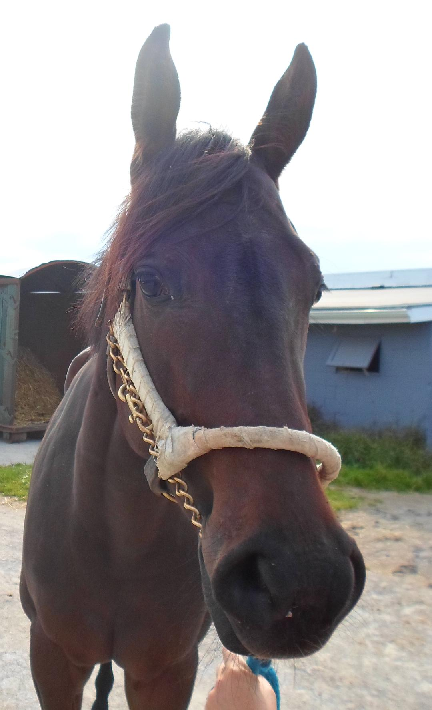
This pretty young girl is athletic, with a well balanced uphill build. Her trainer describes her as energetic, but she has shown no racing ability in her brief career of just a few races. She is described as sound, with clean legs and no vices. She posed perfectly for her photo session, and she was very quiet and laid back for her jog video. She showed a good flowing walk, and even though she trotted slowly she showed hints of nice flat kneed movement. With her size and build, she has excellent potential for polo or for barrels, but she is also pretty enough to be a good candidate for the hunter/jumper show ring.
Price: $1500 negotiable
Contact: Megan Lucas 585-919-9614
Race Record and pedigree: http://www.equibase.com/profiles/Results.cfm?type=Horse&refno=9196503®istry=T
Zosogood, 2006 16.3h bay gelding
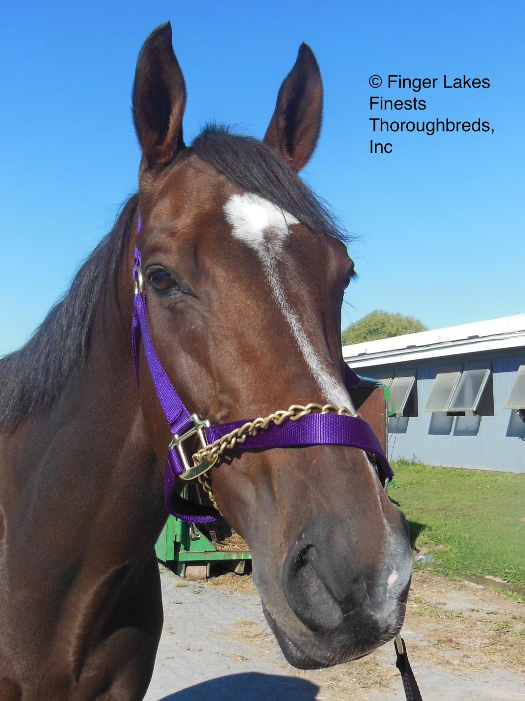
A so good racehorse indeed, this handsome big sweetheart has won 12 races and over $200,000. While he is still sound and running well, his trainer does not want to bring him back next year so she is starting now to find him a perfect home for his post racing career. We loved hanging out with Zosogood, and he loved our attention and mints. We admired his good looks, kind eye, friendly and intelligent personality, and his lovely movement. To add to the attractiveness of the package, he is very well bred, by Malibu Moon out of an Unbridled mare. Malibu Moon offspring have done well in disciplines including dressage, eventing, and the hunter ring, and they are known for good brains and strong work ethics. His trainer says he is easy to work with, and great to gallop, going in a D bit, softly bowing his head and never pulling. He has an old set osselet, but has raced on it for a long time. When Zosogood recently came to his current trainer he tended to stall walk while cooped up in the track atmosphere, but his trainer found him an adorable mini horse as a stall companion, and he is now no longer stall walking. She thinks that once he is off the track and in an environment where he can get turned out, he will be fine. Price: $1,000 negotiable to a good home Contact: Amber Cobb 518-316-0089 Race Record and pedigree: http://www.equibase.com/profiles/Results.cfm?type=Horse&refno=7715963®istry=T
As always, a pre-purchase veterinary exam is recommended.
Linesman, 2011 16h chestnut gelding: sold for racing
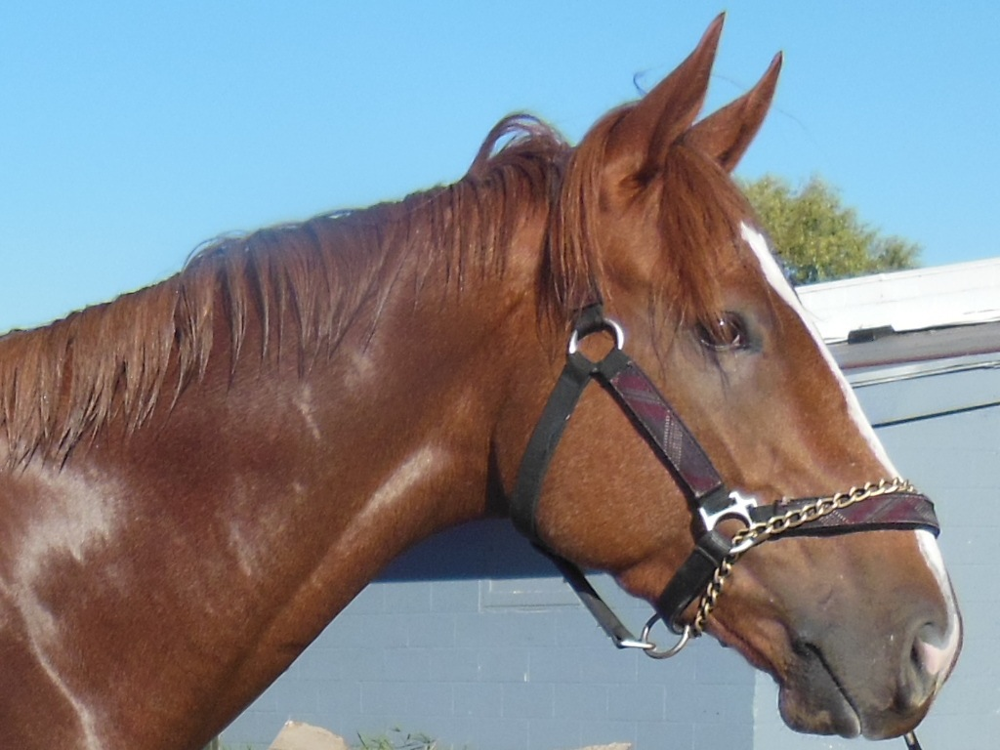
This stunning, flashy, lightly raced young boy is sound, kind, good to ride, and a good mover, but he just isn't much of a racehorse. That is good news for anyone looking for an excellent prospect for the discipline of your choice. Show hunter, jumper, eventing, dressage, pleasure, we think this beauty can go in any direction. His trainer describes him as still growing and maturing, very sound, and a favorite of her young children who like to visit with him. She also notes that he is good to handle and good to ride, with no antics. She thinks he will easily transition to a new career and off track life. We observed him getting a bath, standing like a gentleman in the wash stall. He also posed quietly for his photos, with his freshly washed copper coat gleaming in the sun, with hints of unusual roaning. He had raced the day before his photo session, but he jogged off fine, none the worse for wear. He showed good balanced movement with nice reach to his jog. Price: $1,000 Contact: Amber Cobb 518-316-0089 Race Record and Pedigree: http://www.equibase.com/profiles/Results.cfm?type=Horse&refno=9088811®istry=T
As always, a pre-purchase veterinary exam is recommended.
One Star Freedom, 2008 17 h gray stallion
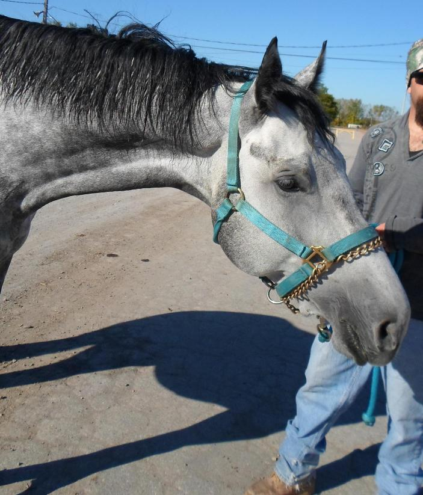
This lovely, big, gentle boy is close to the hearts of the FLF volunteers and the connections who we worked with to take him in after he bowed his left front tendon and have lovingly nursed him to soundness. Earlier this year we were alerted to his precarious situation by another trainer and an exercise rider, and we immediately went to his barn for pictures and we knew we would have to put our heads together to save such a gorgeous and hardknocking horse who was a favorite of many people around the track. We learned that he was perilously close to euthanasia, so we networked frantically, and persuaded his current connections, who are family of an FLF volunteer, to take him in. They had a thorough vet evaluation, including x-rays and ultrasounds, and the vet gave him a very good prognosis after proper rehab care. His current connections started rehabbing the bowed tendon with cold hosing and bute and naquazone to reduce inflammation and pain. After a period of stall rest along with cold hosing while grazing, he was ready for handwalking and, gradually, increased activity. Four months after his injury, One Star (now called Clark in homage to that venerable man of steel, Clark Kent, aka Superman) has a leg that is tight and cold, with just a discernible thickening of the tendon, and he is trotting sound! While watching him jog on a loose lead, we couldn't believe how beautifully he moved and what a chill guy he is. He followed his handler like a puppy dog and was so sweet and personable that we were a bit choked up to recall that his fate may have been so very different if the a community of good people didn't come together to his aid. I am convinced Clark knows that and is grateful for his second chance at life. All x-rays are available for review. We will be very careful about who gets this very special horse.
Price: $1500 to an approved home.
Contact Megan, call or text 585-919-9614.
Elpidio 2008 16 h chestnut gelding
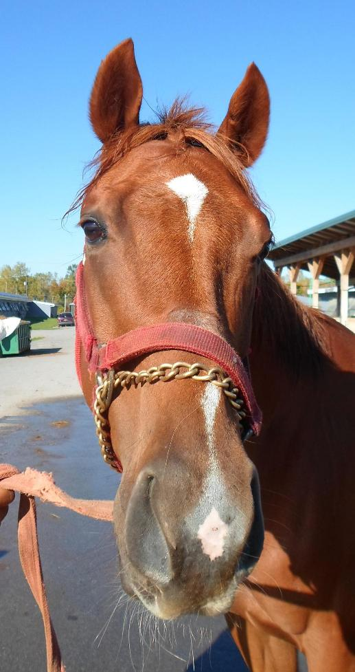
This boy was a quick meet and greet and we suspect that he needs a quick helping hand. He has had a decent race record and struck us as a hardknocker who is ready to call it a day on the track and settle into clover.
When brought out of the barn he was quiet, well behaved, and resigned. He is in desperate need of farrier care and we feel confident that he will blossom with attentive and loving care.
He is nicely conformed and had good movement despite his unfortunate hooves.
We really believe that this guy is a diamond in the rough and will reward his new peeps amply.
Contact Rafael Ramos 786-473-0626 or Margie 315-719-8739 if language is a barrier.
$500 neg.
Drivenbychocolate, 2010 liver chestnut 15.3 h gelding
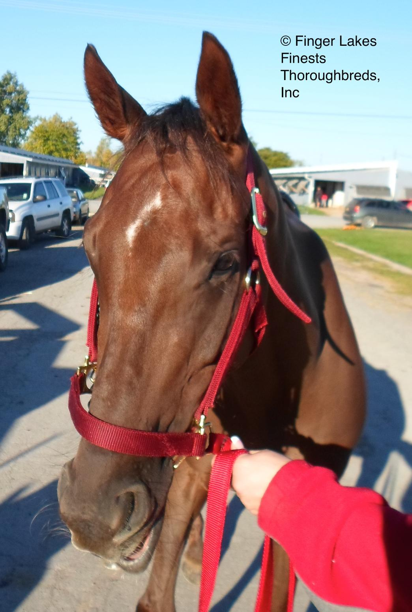
Cuteness alert!!!!! This spectacularly bred gent is a son of the champion sire Giant's Causeway out of an Afleet mare, and he is a half brother to major stakes winner and $750,000 earner Drivenbysuccess. Good sport lines here, since Giant's Causeway offspring are known to be good jumpers. His current owner/trainer adores him and we understand why. He is letting her know he is done....DONE....with racing and this is an opportunity for you to own a regally bred boy who is quiet, sound, personable and just a fantastically adorable and sound horse. His gleaming liver chestnut coat boasted dapples and his beautiful movement ratchets up his desirability. His sweet demeanor has endeared him to his current owner and she wants a perfect home for him. Don't wait a moment to get a piece of racing royalty cloaked in an adorable and sweet package. This young man is a diamond in the rough!
Contact Jackie 585-857-1413
Price $500
Race record and pedigree: http://www.equibase.com/profiles/Results.cfm?type=Horse&refno=8886064®istry=T
Tana Girl, 2009 15.3 h bay mare
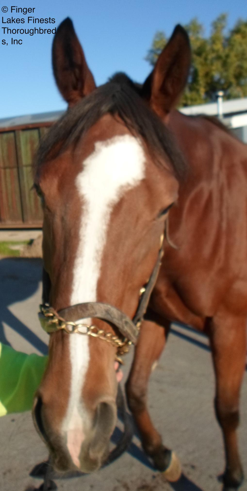
Tana is a flashy girl by the sporty sire Disco Rico. Her groom states that she is a forward mover and loves to train in the mornings. She has been out of training for weeks now as her connections have received her message loud and clear: "I am done with racing, folks!" She would enjoy some turnout time before getting back to work in her new career that capitalizes on her compact build and athleticism. Tana was too "up" for a video to evaluate her movement but what we saw in brief glimpses was cute, sound movement.
Price: $500 negotiable
Contact: Kathy Babcock 585-704-1357
Race record and pedigree: http://www.equibase.com/profiles/Results.cfm?type=Horse&refno=8601022®istry=T
As always, a pre-purchase veterinary exam is recommended.
Goon Squad, 2009 15.3h+ bay mare: video added!
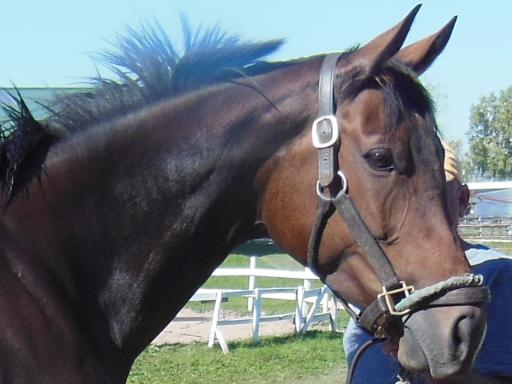
What a solid bodied, compact and pretty girl! She was very alert and interested in what was going on, and loved posing for us as the sun gleamed off her freshly washed coat. Her trainer says she has two old chips in a knee, not in the joint, and she has been racing with them. He says the x-rays are available. After her most recent race, she came back a bit sore on the knee, and he does not want to keep racing her. A few days after the race, she was fine, and when jogged we could see that she is a beautiful mover. She could shine in the dressage arena. Her trainer recommends an experienced rider, since she can be a high energy exuberant girl. Price: $500 negotiable to good home Contact: Jim Kettell 585-313-1998 Race Record and pedigree: http://www.equibase.com/profiles/Results.cfm?type=Horse&refno=8563071®istry=T
As always, a pre-purchase veterinary exam is recommended.
Soul Blues
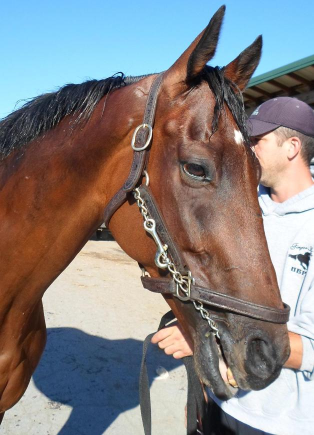
Bob the Pool Man, 2008 16.1+ bay gelding
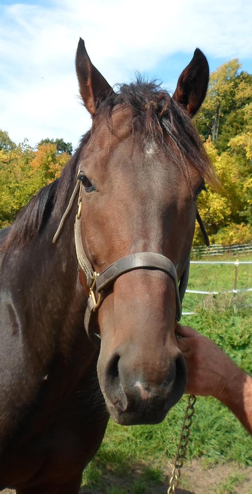
Bob had a successful racing career, hitting the board in 10 of his 22 races. He last raced in September 2013 and “retired” due to a quarter crack. He was given the winter to relax in turnout and was brought back to train this spring. His trainer decided that he did not want to push Bob, who has become a well loved family member. His current trainer bred and raised him so an excellent home is a must. Potential homes will be thoroughly screened. He is sound but his trainer state he needs shoes on the front (although he is barefoot in the videos). Bob has clean legs and beautiful, correct conformation. We could see him excelling in any new discipline but especially eventing or jumpers. He turns out well with other horses, has no vices, and a fun personality. Price: $500 negotiable to good home Contact: Jimmy 585-313-1998 Race Record and pedigree: http://www.equibase.com/profiles/Results.cfm?type=Horse&refno=8056532®istry=T
As always, a pre-purchase veterinary exam is recommended.
Marchoso, 2009 16h bay gelding: sold for racing
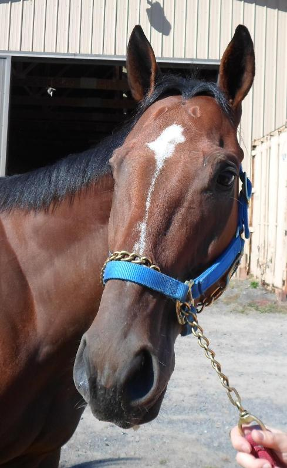
As always, a pre-purchase veterinary exam is recommended.
Leatherhead 2007 15.2h bay gelding
This beautiful boy has lost interest in racing this year and is ready to move to a loving home, but that should be a breeze for him. His gorgeous dapples and heart shaped marking on his forehead are just a hint of all he has to offer. Trainer says he is an easy keeper who is quiet enough to make a great trail horse. We see a fancy guy with flashy good looks who will get noticed in the show ring. Trainer says sound on an old ankle and no vices. He is absolutely as sweet as he looks in his pictures and he should transition easily from track to a new career. What a steal!!
Contact: Lisa Reed 585 303-0527 (If no answer please leave a message)
Asking: $500
http://www.pedigreequery.com/leatherhead2
As always, a pre-purchase veterinary exam is recommended.
Rock for Ages, 2010 16h dark bay gelding
This solid bodied young gelding is a very nice mover, and his trainer describes him as the sweetest, kindest and most gentle horse. Seeing him out of his stall we certainly had to agree. He munched his mints and was so quiet to handle. For his jog video he showed off a big trot with reach, lightness, and suspension -- he should do well in dressage or the hunter ring with that movement! Unfortunately the day was dark and dismal so the pictures don't do justice to his rich shiny dark coat, but come see him in person and you will see what a beauty he is. He is by Birdstone, who is the sire of the equally famous Mine that Bird and Summer Bird. His trainer says he is a nice ride, sound, with no vices, and she feels he could go in any direction in his new career. So if you are looking for very kind horse with great potential come out to see him in person.
Pedigree and race record: http://www.equibase.com/profiles/Results.cfm?type=Horse&refno=8854528®istry=T
Contact : Phylis Shetron 585 317-8892
Price: $1000, negotiable
Dream Theory, 2011 16h bay gelding with chrome: retained for racing
This guy gets his flashy good looks from his beautiful sire Freud, and the offspring of that sire tend to have good minds, are good movers and good jumpers! Several are succeeding as eventers or hunter/jumpers. To add to his pedigree appeal, he is out of an AP Indy mare. His trainer says the horse ran well on the turf and synthetic track, but isn't handling the hard dirt track at Finger Lakes, so he'd like to find him a new career to shine in. He feels that since he is only a 3 year old he probably has more growing and filling out to do yet. The trainer states that he is sound with no vices and is very easy to work with, and very easy to handle with a sweet personality. He was well behaved for his photo session, and showed us that he is a very nice mover, with cadence and suspension that should do well in the dressage arena or hunter ring. He does have a swayed back, but it has not compromised his soundness or suitability in any way.
Sunland Vintage, 2009 15.3 dark bay mare: New Price!
This beautiful mare is a super mover, and has huge potential for many disciplines! Her trainer says she is sound, very quiet and easy to work with, has no vices, and is letting him know she just doesn't want to be a race horse any more. She was very well behaved for her pictures, and showed beautiful movement, with balance, cadence, and reach, tracking up well. Unfortunately the drab day didn't show off her shiny dark coat with its lovely dapples. This girl should transition easily in any direction, but we think she can be a star in the show hunter ring!
Contact : Jared Schoeneman 585 284-5837
Price : $500
Race Record and pedigree: http://www.equibase.com/profiles/Results.cfm?type=Horse&refno=8778521®istry=T
Six Wines Friendly, 2010 16.3 + Chestnut filly
We absolutely fell in love when we met this quiet affectionate girl. When we stepped into her stall she came in close to have her face stroked and just loved all the attention. She came out for her glamor shots but stayed close by and was very snugly for her photos. Unfortunately the dark overcast day didn't show off the gleaming chestnut coat that we could see. This elegant filly could easily fill out more and top off at 17h by the time she matures. If you're seeking talent, looks and a loving companion you'll want to see this fascinating filly. She cribs lightly but it's controlled with a collar. Trainer says she is sound and may race one more time and will then be available.
Contact : Felix Monserrate 585-905-9241
Price: $2,000 negotiable
Zoe B, 2009 15.3h bay mare: retained for racing
This sweet and flashy mare is quiet, clean legged, and a nice mover. She was such a love for her picture session, as she couldn't get enough of being fussed over and munching mints. She was very attentive to her trainer, who says she is good to ride, sound, and has no vices. He says she has let them know she's just not interested in racing anymore this year so it is time to find her a new career. Even though her trainer could not jog well himself, she quietly and slowly jogged alongside him, and showed us that she is a very nice mover, balanced with hints of suspension. Give her some time off from the track and a chance to really fill out and we think she will show what a gorgeous girl she is with great potential for a new career in many disciplines.
Price: $1,000 negotiable
Contact: Sugar Rohena 585-412-3678 (if no answer leave a message, or text); or Ulises Gonzalez 585-615-0497 (He speaks limited English)
As always, a pre-purchase veterinary exam is recommended.
Pedigree and race record: http://www.equibase.com/profiles/Results.cfm?type=Horse&refno=8606651®istry=T
Qu, 2009 16 h chestnut gelding
A gorgeous, well balanced horse with a great shoulder, neck and topline. He is also super friendly and quiet. This guy is lightly raced but has not shown much potential for it. According to his trainer, in March he sustained an injury to his left hind leg from kicking through a stall wall, and then getting stuck in the hole and slicing his leg down to the bone is trying to pull it out. Although there is still scarring, he said the leg is completely healed now and he is sound on it despite the cosmetic changes. Indeed, Qu has raced twice since the injury. His trainer says he is a kind and well mannered horse who has no vices and he feels Qu would make a wonderful pleasure horse, but could also be shown. He was very quiet for his pictures but the dreary day didn't do justice to his lovely coat. Such a nice boy, come see him in person and decide for yourself, and please don't let the cosmetic scars on his leg stop you from giving him the good home and new career that he deserves.
Contact: Eddie Maver 585-351-9276
Pedigree and race record: http://www.equibase.com/profiles/Results.cfm?type=Horse&refno=8594424®istry=T
As always, a pre-purchase veterinary exam is recommended.
Chasing Moonlight, 2008 16.2h dark bay gelding
This very handsome and solid bodied guy has been a successful racehorse, making over $160,000 in his career, with over 50% on the board finishes in 33 starts, which is relatively lightly raced for a six year old. With this record, he is obviously athletic and big hearted, with a great work ethic! He is described as a very calm and sweet boy, with no vices. His jog video shows good balanced movement. A son of the great sire Grand Slam, whose offspring are known for their intelligence, athleticism, great brains and work ethics -- we know several people who have Grand Slam babies competing successfully in eventing and the hunter/jumper ring. He definitely deserves a great home! He had tie back surgery when he was younger, but raced well after it and does not have breathing issues. The assistant to his trainer also says he has an old rounded ankle that he may need a little more time off on. Give this big handsome athlete that time, and we think he can then succeed in many new disciplines.
http://www.equibase.com/profiles/Results.cfm?type=Horse&refno=8333115®istry=T
http://www.pedigreequery.com/chasing+moonlight Price: $1500 negotiable Contact: Alesha (585) 733-4388
As always, a pre-purchase veterinary exam is recommended.
Chicks and a Pig, 2011 15.2h chestnut filly: sold for racing
Absolutely the sweetest horse you will ever meet, sound, lightly raced, clean legged, very well conformed with balanced uphill build -- great prospect for many disciplines! And her jog video shows that she is a good mover too! The assistant who provided us with her listing information says there is not a bad bone in her body, that she is sweet, kind, quiet, and an all around great girl. After two wins in only ten starts, she is finding the next level of competition too much, so her trainer wants to find her a great new home and new career while she is still young and sound. She is well bred, by top sire More Than Ready, from the Halo sire line that is so well known for producing good jumpers and sport horses. With her smaller size, compact build, and relatively few starts, she should attract great interest from those looking for a polo prospect, but, since she is also likely to grow and is so athletic and well proportioned, we can also see her as a great prospect for eventing, dressage, the hunter/jumper ring, or even barrel racing. This filly is currently located on a farm near the Finger Lakes Racetrack in Farmington, NY.
Price: $1500 negotiable! Contact: Alesha (585) 733-4388
Race record and pedigree: http://www.equibase.com/profiles/Results.cfm?type=Horse&refno=9074844®istry=T
Poka Dottie, 2010 16.1 h chestnut filly
WOW, is all we can say after seeing this flashy, fabulous filly! Striking good looks, sound, clean legged, great mover, quiet, good to handle, no vices, and outstanding potential for a sport career in eventing, dressage, or the hunter/jumper ring. Who can resist her unusual chestnut dots on her white legs, hence her name? She is lightly raced, and has shown no racing ability, so her owner/breeder has reluctantly concluded that it is best to find her a new career where she can put her looks, movement, and athleticism to good use. She posed like a model for her photo session, and for her jog video she showed off beautiful movement, light, balanced, tracking up well from behind, with suspension and reach, We have been following this filly for over a year, waiting for her to become available, ever since an event trainer who knew her from the owners' farm alerted us to her outstanding potential as an event or dressage horse. She is by Badge, whose offspring have excelled in eventing and hunter/jumper careers. Her lack of racing aptitude is your gain. Price: $1500 Contact: Mike LeCesse 585-303-9467
http://www.equibase.com/profiles/Results.cfm?type=Horse&refno=8885885®istry=T
http://www.pedigreequery.com/poka+dottie
As always, a pre-purchase veterinary exam is recommended.
My Shaolin, 2009 15.3 h chestnut gelding
This handsome tank of a horse was on the listings a couple years ago but was retained for racing by his current owner/trainer who also bred him. They are finally ready to find him a life off the track since he has not shown much racing ability, but with his solid, well conformed body, clean legs, and good movement with suspension, we think he can excel in just about any discipline. He has excellent sport bloodlines, by Orville N Wilburs from the Cox's Ridge sire line. Shao was very quiet on the day we took his new pictures and video, as you can see with the shank hooked under his chin. His trainer describes him as a sound horse who likes to work and is a gentleman on the ground. He is also described as fun to gallop with a nice way of going. For his jog video he showed even balanced movement with suspension and a good reach to his trot. We can see him having great potential for dressage, eventing, or the hunter/jumper disciplines; but we also have a barrel racing friend who thinks he could excel there as well.
Contact: Megan Lucas 585-919-9614
Price: $1500
Race record and pedigree: http://www.equibase.com/profiles/Results.cfm?type=Horse&refno=8611577®istry=T
Destination Moon, 2009 16.3h+ dark bay mare: new price!
This big mare really impressed us as an exciting event prospect with her beautiful, uphill build, athleticism, great movement with suspension and power, and clean legs. Her trainer reports that Moon has changed hands several times and is racetrack sour. She has worked carefully with her to establish trust in her handlers who have been very patient and kind with her. She requires an experienced handler and rider, and would also appreciate some letdown and turn out before resuming work in her new discipline.The more we watched her, the bigger she became! She is racetrack "high" but watching her move suggested that she could eat up a cross country course with no problem, and equally impress in the dressage ring. Her trainer describes her as excellent to gallop, very forward and sound.
http://www.equibase.com/profiles/Results.cfm?type=Horse&refno=8539178®istry=T
Contact: Megan Lucas 585-919-9614
Price: $2000
Manhattan Ridge 2007 15.3 h chestnut gelding: New Price!
If chrome is your weakness, be prepared to be wowed! This stunning fellow walked out of his stall and right into our hearts! And to add to his desirability, he is sweet, quiet and, for obvious reasons, a barn favorite. His trainer describes him as sound, without vices and the kind of horse that everybody likes to work with. We couldn't get over how adorable he is in every way and a cute mover as well. This handsome boy has an impressive race record as well, with 46 lifetime starts and earnings of $225,000. In our opinion, that puts him in the warhorse category, albeit a young one. Horses like Manhattan Ridge are sturdy and consistent, proving their hardiness and ability to stand up to a competitive career off the track. I'm pretty sure a few of us are going to be tempted with this one and doubt he will last long!
http://www.equibase.com/profiles/Results.cfm?type=Horse&refno=8023246®istry=T
Contact: Eileen Muller 585-748-5261
Price: $1500 neg.
Cats Kitty 2007 16.3 h dk bay gelding
It's not often that we get to see such a big, handsome gelding who is solid black! (Make note, he is registered dark bay but truly looks black.) With 2 wins this year and almost $100,000 in lifetime earnings, the owner/trainer is anxious to find him a good home in another discipline. He raves about his wonderful personality and quiet demeanor. While we were taking his pics and finding more and more reasons to love him, he posed quietly and moved in politely when offered mints. He is described as sound and we certainly witnessed clean legs and to-die-for movement. The trainer told us that Cat breezed yesterday and there was no evidence of stiffness or soreness. His trainer states that he rarely wears bandages because he rarely needs them. This boy, folks, is a sound horse with plenty of miles left in him.
For his jog video, we had to suppress our excitement: wow, what a beautiful mover! At the walk he demonstrates a big stride with an overstep and at the jog he demonstrates fluid, floaty movement that must be a dream to ride. We think this guy has tremendous potential as an eventer, show hunter or dressage mount and will be surprised if he doesn't get snapped up quickly.
http://www.equibase.com/profiles/Results.cfm?type=Horse&refno=8023228®istry=T
Contact: Chris Roncone 585-303-0335
Price: $2500
Space Hero 2011 gr/roan 16 h gelding
For those who love grays and quiet big boys, here's a kind, sound young horse for you! Space Hero has been lightly raced and, even though he finished 2nd in a maiden claiming race the day before we saw him, his connections don't think he will easily break his maiden. So that means he's ready to move on and he is more than ready to leave the racetrack in his rearview mirror! His trainer states that this young fella hasn't been off the track since he was broke. With some time off to finish growing and fill out, we think he will top out at 16.2 or maybe even bigger.
When brought out of the barn we were struck by at his very quiet personality. His trainer joked that when he first got him, he thought something was wrong with him because he is so quiet! He was thoroughly checked out, and yes he is fine, and yes he really is that quiet and laid back! He was certainly polite and cooperative during his photo shoot this morning.His trainer states that he is sound and, having run yesterday, he was a bit stiff today, which is not unusual. This sweet boy could be a diamond in the rough when given the tincture of time.
Contact: Tim Snyder 315-243-7899
http://www.equibase.com/profiles/Results.cfm?type=Horse&refno=9099240®istry=T
Bird in the Bush 2010 16 h liver chestnut filly
Liver chestnuts, something of a rarity on the racetrack, don't come much prettier than this sweet and stunning girl, who is also a beautiful mover! The first thing we noticed and exclaimed over was a riot of dapples covering every square inch of this lovely girl. The day was clouding up and we're not certain that they will stand out in the pictures the way they did in person. We tried to maximize on brief rays of sun to get her pictures. Well bred by Corinthian (Pulpit) out of a Mr. Prospector mare, her beautiful conformation and movement will get her noticed in the show ring. She is described as good to gallop and quiet in her stall. She is sound, good on the ground and has no vices, although she does need strong, confident handling because she can be a bit pushy when handled out of her stall. She was certainly perfectly behaved for us when we got her photos and video. What a pleasure it was to watch her move for her video with a lofty trot with suspension and cadence, plus she has a natural frame. We would love to see her go under tack! Her wraps and poultice are standard daily care for this barn, and by the time we got there, she was already done up. On a day when we saw so many beautiful horses, this one was like the cherry on top of the sundae! At least one of the volunteers will go to sleep tonight dreaming of this beautiful girl standing in one of her stalls!
Contact Terry Genecco 585-820-2575
Price: $2500
http://www.equibase.com/profiles/Results.cfm?type=Horse&refno=9108738®istry=T
Feelin Irie, 2010 16.1h bay filly
Feelin Irie is a striking looking, beautifully balanced big filly with a great shoulder, sound, a good mover, with unlimited potential for many new disciplines. She sure looks to us like she should be able to jump with her build! Her trainer states that “feelin irie” means “feeling happy” in his culture and that his mare would be happier in a new discipline, because Feelin Irie Just doesn't feel like being a racehorse. He states she is very sweet and is easy to work around but she is too slow. After 13 races, she has yet to break her maiden, and the trainer states he can’t have any more pets! She stood very politely during our pictures and videos and we observed a nice mover who tracked up well and showed good suspension. Feelin Irie has clean legs and no vices. This big girl has a lot going for her-especially her good looks-so please call fast.
http://www.equibase.com/profiles/Results.cfm?type=Horse&refno=8837113®istry=T
Price: $1000 (or a package deal with her stablemate Hotchoi!) Contact Neville Henry 585-905-4214
Fish Hooks, 2010 15.3h bay gelding
Fish Hooks is anxiously awaiting some well deserved R&R off the track. With his previous trainer, he raced 37 times in just 18 months. He is showing his current connections that he is ready for a slower paced life. He cut his ankle in July and although there was no soft tissue or bony damage, the ankle became inflamed and he has not raced since then, although he has had a couple workouts. Despite his willing heart, he is just too slow to continue training. Fish Hooks stood like a perfect gentleman for his pictures. He has nice conformation and is reported sound with no vices. His trainer does not like to jog any of his horses on the concrete, so we were unable to get a video. You will have to come meet this very sweet guy in person! This durable and hard working horse will not disappoint you in his second career. This deserving horse is ready for treats, turnout, and retraining.
http://www.equibase.com/profiles/Results.cfm?type=Horse&refno=8861533®istry=T
Price: $1000 neg Contact Felix 585-905-9241
Outcome, 2010, 16h Chestnut Gelding
Great uphill build, lovely moving, sound, large statured and mature looking four year old gelding with huge potential for many disciplines! And he is also very well bred, by leading sire Elusive Quality from the Gone West sire line. He was attractive enough to be purchased by the illustrious Darley as a yearling, but he has not shown much racing ability, but that can be the sport horse world's gain. He did not put a foot out of place while he met our volunteers at the track last weekend. He has a very kind eye, clean legs and an adorable personality that is just waiting for his next career. He had raced the day before his jog video and jogged not only sound, but with impressive movement that will suit him well beyond the racetrack. This solid citizen will make an excellent prospect for any discipline but certainly has the movement for a show hunter or dressage ring. His super sweet personality will be a wonderful addition to your barn! Better snap this bargain priced gem up quickly!
http://www.equibase.com/profiles/Results.cfm?type=Horse&refno=8834225®istry=T
Asking $500 negotiable. Contact Felix for Samuel Morales 585-905-9241
Gray Dawn Peak, 2009 15.3h gray gelding
This neat solid bodied gelding has been with his current trainer for almost two years, but due to a mix up in paperwork, was not able to start race training until this year. His first official workouts at the track have proven to be too slow and he has no interest in going any faster, so this fine statured young gentleman is looking for his next career before he even has a single start on the track! He jogged very quietly for his video, and showed very good movement, with lovely balance, cadence and suspension, making us think he would do very well in dressage. His quiet demeanor and excellent manners and good movement could make him an excellent show hunter, or pleasure horse or trail horse prospect, but this young horse with very low mileage could go any direction you might desire! With his very sold build, he will take up more leg than his height would indicate.
http://www.equibase.com/profiles/Results.cfm?type=Horse&refno=8707414®istry=T
Asking $1500 Negotiable. Contact Sugar Rohena 585-412-3678
Hotchoi, 2010 16.1h bay gelding: Placed
This beautiful, dappled gelding has everything going for him -- big, sound, a very good mover, with a great personality. His trainer states he is more of a pet than a racehorse and just too slow. He stood very quietly for his pictures on a rather windy day, and showed off a light, balanced trot, tracking up well. His trainer states that he is easy to work around and has no vices. We think he would make a nice show hunter, but some eventing friends of ours also think he will excel in that discipline too.
http://www.equibase.com/profiles/Results.cfm?type=Horse&refno=8889441®istry=T
Contact Neville Henry 585-905-4214
A PPE is always advised.
Mom Proof, 2007 16.2 h chestnut gelding: Now at FLTAP
Update October 21, 2014: Mom Proof has been accepted into the Finger Lakes adoption program, and is now at the FLTAP barn on the track premises. You can call them and arrange to see him there. He will be available for adoption to approved homes with a contract.
This very good looking big guy is like a pet to his trainer, who loves him dearly and wants to find him a great new home since he is no longer competitive in racing. Extolling his virtues, his trainer says he is sound and durable, has a good attitude about everything, is a very good boy who is great to handle, and a very friendly horse who likes to bond with people, and loves his peppermint treats (which we can certainly attest to!). We saw Mom Proof less than 48 hours after he had raced, and he seemed none the worse for wear, and jogged nicely, with a good reach to his trot. His trainer says he gets a small fluid pocket on his knee for a couple of days after a race (which we felt), and then he is fine. He has never missed a start and has never had any lay ups from any injuries or problems throughout his long racing career of 84 starts. With this kind of durability, Mom Proof obviously has a good mind and good balance, and should transition well to many new disciplines. Another gem of a war horse who so richly deserves a great new home!
Contact: Julie at FLTAP (585) 924-9510
Pedigree and race record: http://www.equibase.com/profiles/Results.cfm?type=Horse&refno=8099169®istry=T
Mer Babe, 1999 17+ h gray mare
Mer Babe has been a broodmare for many years on the farm near the Finger Lakes Racetrack where she resides and, in that time, she has endeared herself to her owners, who are also her breeders. Wow! We haven't seen many TBs as big as she is. A solid 17+ h gal, with a broodie belly, she has substantial size, good bone and much as we love our TBs, she could be an incredible prospect for sporthorse breeders of the warmblood persuasion. She sports a fantastic sporthorse pedigree for soundness and stamina, without Mr. Prospector or Storm Cat, a rarity in today's thoroughbreds. Her sire is Cam a Rhett, by Tri Jet out of champion Susan's Girl, by Quadrangle... the best of the famous breeder FW Hooper's program. She has a son, Ynot Tony, who is reported to be a good jumper. She has had several foals, who all have good bone and correct conformation (we saw one of her daughters, now in foal herself, in the paddock). But, her owners feel she has not produced enough good racehorses to continue in their race oriented breeding program, so they would like to see her go to a sport horse breeding situation. Mer Babe is an easy keeper, can go barefoot, and loves pasture living. She is reported to be an easy foaler and a good dam. She should have a few more good foaling years ahead of her. Although she has not been ridden in several years, she could also be brought back to fitness for pleasure or trail riding. When we saw her,she was hollering for her pasture mates, with whom she has been on 24/7 turnout during nice weather and was brought in for her photo shoot. She wasn't entirely happy about the situation but was a gem for her interview, posing majestically. We only videoed her at the walk, because she is not fit, and her handler was not feeling well, and we did not know how she would react with her pasture buddies running alongside.
Contact Mike LeCesse 585-303-9467
Price: contact Mike to negotiate a great deal to an approved home with references
Race record and pedigree: http://www.equibase.com/profiles/Results.cfm?type=Horse&refno=5055182®istry=T
Timothy's Boy, 2009 16 h bay gelding
What a droolworthy hunk of handsome horse to cap off our morning in the cold and drizzle! The volunteers found more and more reasons to love Tim as our interview went on. Tim struck us as not only gorgeous, but also classy. He is very solidly built, with a strong hind end, and a good shoulder. We were drawn in by his classic chiseled, beautiful head and kind intelligent eye. He was well behaved and quiet despite dropping temperatures and a whipping wind. He has been out of work for about a month, hanging out at his trainer's farm just down the road from the Finger Lakes Race Track, due to what we were told was a slightly sore knee. We palpated his legs and felt no heat, filling or anything obviously concerning and, later, while jogged for a video, he appeared not only sound but also demonstrated quite a balanced and lovely way of going. In researching him, we discovered that he is a grandson of Maria's Mon, which is a great line for good moving, good brained, and good jumping horses, and sold for $70, 000 in the Saratoga preferred yearling sale. So we're not the only ones who thought he was quite the looker!
With his intelligent eye and aura of class, we bet he is a quick learner and will easily settle into a new routine and career. We really like this lovely gelding, and we are confident you will too.
Contact Mike LeCesse 585-303-9467.
Price $1000
Race record and pedigree: http://www.equibase.com/profiles/Results.cfm?type=Horse&refno=8555022®istry=T
Executive Office, 2011 15.3+ h chestnut gelding: new price!
This cute and growing young gelding struck us as adorable in every way. If you like chrome and good movement, this guy is for you! Despite bare feet in need of attention he jogged beautifully on the asphalt, with floaty movement and suspension, and appeared quite sound. His toe pointing reach made us think hunter ring, but his size and build should also interest those looking for a polo or barrel prospect. His legs are clean and tight, and he looked good and when he jogged for his video, showing very nice movement. We think he is a nicely built, solid bodied guy who likely has more growing to do. He looks like he will top out at around 16.1h, so please do not pass him by just because he is currently young and still needs to mature. This youngster could very well be the proverbial diamond in the rough.
Contact Ortis Henry 347-455-2988
Price $800 negotiable
Race Record and pedigree: http://www.equibase.com/profiles/Results.cfm?type=Horse&refno=9056595®istry=T
The Wiley Vet, 2009 15.3 h dark bay gelding: Now at FLTAP
Before we even saw this handsome fellow, we heard him described as "the sweetest horse" his owners had ever worked with. Then when we saw him we felt certain that he is the total package: handsome, sweet, sound and affordable! We learned that he is a pampered carrot lover who loves to train, loves his job and loves attention. Even the State vets love this guy! His one owner was watching his photo shoot and became quite emotional when describing how special he is to them and how important it is to them that he go to the right home. Wiley is a beautifully put together boy with a stocky build and an impressive shoulder and chest. He has a cute way of going and looks like he could excel at just about any discipline. His race record of 39 starts with 4 wins, 3 seconds and 3 thirds puts him a tougher category of racing, thus the decision to retire, and not push, him. A bonus was seeing his long, curly tail when he was walking back into the barn, a feature that is apparently often commented on! He has a great pedigree for eventing and jumping disciplines -- Sadlers Wells sire line and Halo dam sire line-- full of stamina and turf racing stars. He is by Breeders Cup Turf winner Northern Spur, a son of the great Sadlers Wells, who excels as a jumping sire.
Contact John Ross 315-945-8151
Price $1200 to good home
Race Record and pedigree: http://www.equibase.com/profiles/Results.cfm?type=Horse&refno=8561893®istry=T
Tongo Lele, 2010 15.3 h dark bay filly
We were told that this lovely girl was named after a famous Puerto Rican dancer because of the way she moved as a baby. Her connections bred and raised Tongo Lele and they will part with her with heavy hearts, while anticipating updates about her new career. Tongo has a beautiful, balanced build with a nice shoulder, topped off with a shining and dappled coat that is missed in the gloomy light of the rainy day we were faced with for her photo session. Her owner/trainer enthused about her wonderful personality, love of attention and great work ethic. She is described as very athletic and wonderful to gallop. But, she has not shown enough racing ability, so they want to find her a new career where her athleticism will serve her well. With her size and light number of races, we think polo may be her niche, but we can also see her eventing, jumping, or even barrel racing. Incidentally, Tongo is the last foal by Crusader Sword, a long time leading NY sire, grandson of Damascus, and sire of the late, great racehorse, Tin Cup Chalice, who was based at Finger Lakes, and was a multiple Stakes winner, including a rare sweep of the Big Apple Triple.
Purchase of Tongo will require references and they will be checked.
Contact Linda Dixon 585-329-9062
Price $1000 to approved home
Race Record and pedigree: http://www.equibase.com/profiles/Results.cfm?type=Horse&refno=8898350®istry=T
Winco, 2008 17 h dark bay gelding
Winco is a special boy to his connections and we understand why! This fellow is big, sound, gorgeous and so kind. He is a horse that they would love to keep but pets accumulate and his future is one pointing to eventing and jumping or dressage, careers they can't accomodate. He puts forth his best effort everytime he goes to the post and has a great work ethic. We love this guy! Not only was he quiet and sweet, he stepped out of the barn into the bluster and immediately posed for his glamour shots. We appreciated his good looks and kind eye, and he showed well balanced movement with good suspension, tracking up well, for his jog video. He has Halo in his pedigree in his sire line and is stamped with sporthorse prospect. He is lightly raced for his age, but his race record is impressive with 20 starts and 50% in the money. He is sound, sound, sound and ready to move on. His connections will require references and vet his potential new home.
Contact Linda Dixon 585 329 9062
Price $2500 negotiable
Race Record and pedigree: http://www.equibase.com/profiles/Results.cfm?type=Horse&refno=8359990®istry=T
Personal Pinup, 2008, 15.3h Bay Mare: retained for racing
A volunteer favorite for today!! This nice mare was born with one very crooked little ear. You'll notice it standing awry in her glamor shots, but we think it makes her just that much more unique and desirable. Her groom states that it's earned her the nickname Rudolph as the weather gets colder, as it may resemble a reindeer antler. This mare is reportedly wonderful to work around and has no vices. All of her connections are very concerned that she finds the best of homes for her next career. Her trainer reports that she loves to go to work in the morning, but she is just too slow to make it as a race horse and would make a fantastic member of the family. While her ear is atypical, she has beautifully correct conformation and a sweet personality, which will help her to easily coast into her new career, whichever direction you may choose!
Race Record and pedigree: http://www.equibase.com/profiles/Results.cfm?type=Horse&refno=8324943®istry=T
Asking $500 Contact Margie (intermediary for trainer) 315-719-8739
As always, a pre-purchase veterinary exam is recommended.
Search Engine, 2009 16.2h Dark Bay Gelding
We have been drooling over this handsome boy in the shedrow for quite some time-- this boy's gorgeous face will grab your attention and will be the envy of all. The trainer states that Search Engine has made it very clear that racing is no longer his discipline of choice and they have decided to let this handsome hunk of horse move on to a new discipline so that he can reach his full potential. He has some filling in his right ankle but has been racing sound on it for the last year. For his video he jogged sound and showed nice movement with suspension and cadence. When we photographed him, all chunky 16.2+ hands of this gelding was happily falling asleep in the sunshine while getting loved on from his trainer. It is clear that this horse will leave a hole in the hearts of his connections, but he is ready to fill his new owner's lives with joy! He is reported to have no vices, is easy to work around and is an honest, enjoyable ride every time out on the track. His exercise rider states that he is "a dream" to work and is just a very nice horse. Call today, because this gorgeous guy will go fast!!
Race Record and pedigree: http://www.equibase.com/profiles/Results.cfm?type=Horse&refno=8796517®istry=T
Asking $1000 negotiable Contact Sugar Rohena 585-412-3678
As always, a pre-purchase veterinary exam is recommended.
Mea Maxima Culpa, 2010 16.2h Bay filly: sold for racing
This big pretty filly sure screams sport horse prospect! Her conformation and uphill build make us think she could be a competitive event horse, but she has the style and flash to draw attention in the hunter or dressage ring as well. She has an ideal pedigree for eventing or jumping. She is by AP Indy's son Golden Missile, out of a Dynaformer mare. Tom Rolfe, Ribot, Round Table, and Princequillo are all in her female line, and her sire line brings in Cure the Blues and Hail to Reason.This big filly is her trainer's favorite-- he has had her for two years and his love for her was very evident in her meet and greet. Despite a difficult language barrier, it was very clear how much this horse meant to him as he showed her to our volunteers today. Her trainer states that she is clean legged, sound and wonderful to work around, just no longer competitive on the race track-- she has yet to break her maiden. Racing's loss is your gain!!
Race record and pedigree: http://www.equibase.com/profiles/Results.cfm?type=Horse&refno=8796517®istry=T
Asking $1,500 Negotiable Contact Sugar Rohena (representative for trainer) 585-412-3678
As always, a pre-purchase veterinary exam is recommended.
Boldchildsrevenge, 2010 15.3+h Dark Bay filly
In a hurry to get going with your new horse? This mare is ready today!! This nice girl has already had some down time off the track at a farm, and was just brought back to the track last week so that we could help find her a great new home. She has made it clear to her connections that she is much happier on the farm where they have already started her retraining and given her some turn out time. They report that she is an easy going, well mannered young lady who is just not the race horse that her excellent bloodlines might suggest. She is by champion Point Given, out of a stakes placed mare by Flatter, a son of AP Indy. These are excellent sport lines, and Point Given has produced several horses know to be good jumpers. Her pedigree is good enough to make her worth serious consideration as a broodmare as well. We thought her Harry Potter-esque star added quite a bit of character. She does have an old knee injury but has been racing sound throughout her career. Despite a missing shoe, this bright young lady jogged sound today.
Race Record and pedigree: http://www.equibase.com/profiles/Results.cfm?type=Horse&refno=8841107®istry=T Contact Ortis 585-441-1424 or 347-455-2988
As always, a pre-purchase veterinary exam is recommended.
Take the El Train, 2010 16.3h Dark Bay colt
Tall Dark and Handsome!!! This young big guy was genuinely pleasant to be around when we took his photos and his movement was just as impressive! His trainer reports that he had a knee chip removed over a year ago and says he has returned to racing sound, even winning once. However, the risk of continuing to push the limits on the repaired knee outweigh this guy's potential on the racetrack. The vet reports that he will be sound for any discipline, but keeping him racing fit will continue to stress the joint. His exercise rider claims that he is great to ride and will even come down to the walk from the gallop if not reminded to keep going-- he looks like a race horse but he thinks like a pleasure horse. With this bright young guy's athleticism and heart, he is sure to be successful as a sport horse or meandering a trail to your heart's content. While he is not gelded, this handsome horse is not studdish and his connections report that he is always pleasant to handle, respectful and has no vices.
Race record and pedigree: http://www.equibase.com/profiles/Results.cfm?type=Horse&refno=8868359®istry=T
Price: $500 negotiable Contact Ralph D'Alessandro 585-281-1029
As always, a pre-purchase veterinary exam is recommended.
Call to Taps 2008 15.1-15.2 h mare
This nicely bred gal has shown her connections that it's time to move on to a new career in sport, which she is regally bred for. By Pleasant Tap out of an Air Forbes Won mare, this smaller mare looks athletic and promising as an eventer or hunter for a smaller rider. A language barrier prevented us from getting much information but we were told she is sound, and we saw a lovely feminine mare who will fill out and shine with some TLC. She stood like an angel for her photos even though it was cold and raining, and she jogged quietly and showed good movement. She needs to find a home by the end of the meet, and she surely deserves a great post-racing life, so please step up for her!
http://www.equibase.com/profiles/Results.cfm?type=Horse&refno=8298145®istry=T
Price $500
Contact Jorge 787-640-4550
As always, a pre-purchase veterinary exam is recommended.
Zentillating Miss 2011 15.2 bay filly
This little miss presents an interesting prospect: she was an absolute sweetheart during her interview and has the cutest face and blaze, so could very well be a young person's mount. She has very nice movement and could be a winner in the show ring. And, our investigation of her pedigree proves that she could be an tempting broodmare prospect for racing. She has many directions she could be pointed to and all would be appropriate! One thing she isn't is a racehorse!
As for her breeding, she is the Kentucky bred daughter of Zensational, a young son of Unbridled's Song, out of a Cozzene mare. She is a half sister to a NY stakes winner and her dam comes from an outstanding Juddmonte Farms female family. Her second dam is stakes placed and a stakes producer. Her third dam was a multiple graded stakes winner, including dam of Eltish. Her fourth dam produced multiple graded stakes winner. Breeders will appreciate the blacktype in her pedigree.
She has a ding on her right hock from being kicked on the walking machine but it has not caused any lameness. We were impressed with her sweet demeanor and adorable face with such a kind eye. Indeed, her handler told us that she is a playful girl and a doll to work with. When asked for a jog, we saw lovely movement with nice suspension, excellent tracking and nice push from behind. While on the smaller side now, she is young enough to put some more height on, maybe this winter while enjoying a break in your paddock.
http://www.equibase.com/profiles/Results.cfm?type=Horse&refno=9076576®istry=T
Price $1000 neg.
Contact Jamie Boldt 585-943-4298
Pure Sweetness 2010 15.3 h bay filly: retained for racing
Pure Sweetness broke her maiden a mere six months ago and has won three more races since that time. In so doing, she has run out of most of her conditions where it is possible for her to win. Rather than winter her and try again in the spring, she is being retired from racing. Her handler reports that she is a "5 furlong specialist", meaning that her best races are the shorter ones, and, in fact, her last win was at Charlestown's "bull ring" just two weeks ago. She is reported to be sound, very athletic and has a big "go" button, which would make her suitable for polo, eventing or barrels. She has a powerful engine with a lot of "push" and a deep chest, which makes her a "tempest in a teapot" for sport, and a lot of horse in a smaller body!
http://www.equibase.com/profiles/Results.cfm?type=Horse&refno=8873024®istry=T
Price $1000 neg.
Contact Jamie Boldt 585-943-4298
As always, a pre-purchase veterinary exam is recommended.
Viva La Vista 2011 16.1 h chestnut colt: sold for racing
Wow! A young Kentucky bred son of More Than Ready out of a Meadowlake mare, this boy was bred to be a good thing on the racetrack. His connections on the track feel that getting more wins out of him next year is not in his best interests and, lucky for you, he is available for a sport career. We think he is an outstanding prospect for the hunters or eventing crowd. He is reported to be sound, doesn't need bandages and is clean legged. His handler stated that he is not at all studdish, is wonderful to work with and we certainly saw a quiet, polite boy who obliged us patiently. We love his big shoulder and solid build. His movement is quite nice with an overstep and a natural frame. Considering his age he will continue to grow and mature and we think he has tremendous potential in the right hands.
http://www.equibase.com/profiles/Results.cfm?type=Horse&refno=9132226®istry=T
Price $1000 neg.
Contact Jamie Boldt 585-943-4298
As always, a pre-purchase veterinary exam is recommended.
Derby Watch 2010 bay 16.2+ gelding
This Kentucky bred guy has been a hard-knocker, amassing a race record impressive for being in the money for 50% of his races. With 27 lifetime starts, he has earned $70,000 in his young life, with 3 wins this year alone. His connections report that he has an enlarged left ankle, which we felt. The ankle is cold and has no filling or puffiness and he moved sound on it. We loved his solid build, nicely muscled engine and large, beautiful shoulder. As the season winds down, he is ready to go into his non-racing home to enjoy some winter down time and then start getting down to business in his new discipline. This is a great opportunity to get a big bodied, athletic young horse for a reasonable price.
http://www.equibase.com/profiles/Results.cfm?type=Horse&refno=8865554®istry=T
Price $1000 neg.
Contact Jamie Boldt 585-943-4298
As always, a pre-purchase veterinary exam is recommended.
Egotist, 2010 17h chestnut filly: sold for racing
This big, beautiful, great moving girl sure looks like she will be able to jump, so those of you who want a big horse for an eventing or jumper prospect should give her serious consideration. She is clean legged, described as very sound, and with her strong shoulder, longer back, and good hind end, she looks like she will be a very scopey jumper. Her trainer raved about how good she is to handle and work with and gallop, and confirmed that she has no vices. He thinks she could go in any direction for many new disciplines, but he is especially high on her potential for jumping, and we agree. She showed very good light and balanced movement for her jog video. She had raced only two days before her photo shoot, and she was none the worse for wear, moving lightly and fluidly without any of the post race stiffness that a lot of horses exhibit. She is a granddaughter of AP Indy, and her dam is by Not for Love, which is a good pedigree for sport/jumping disciplines. Price: $6,000 negotiable; serious inquiries only Contact: Jared Schoeneman 585-284-5837
Race Record and Pedigree: http://www.equibase.com/profiles/Results.cfm?type=Horse&refno=8858353®istry=T
Estimated Queen, 2011 15.1h chestnut filly
Fabulous things can come in small packages! This filly is a stunning mover who floats lightly over the ground with suspension, cadence, reach, and good tracking up engagement of her hindquarters. Lightly raced, clean legged and sound, she is not showing enough racing ability, but we sure can see her dazzling judges in the dressage arena or in the hunter ring. Since she is only three, she will still grow a bit, but is not likely to top out over 15.3 hands. Her owner/trainer says she is a good girl with no vices. We had actually first seen Estimated Queen the week before her official photo shoot, when a groom who did not understand English mistakenly brought her out to show to a very tall shopper, who wanted to see her much bigger stablemate. Before we could try to explain that it was the wrong horse, the groom took off at a brisk pace trotting her, letting her go loose on the lead shank, and our jaws all dropped at her big lofty floating movement. "Who is she," we all exclaimed , and while we regretted not having the video camera running, we were excited to hear that she was one we could photograph the following week. For her official jog video, she was missing a shoe, and her trainer moved slowly and did not let her go loose, but we still saw lovely movement. She is also a well bred filly, by Catienus out of a Gulch mare. We know of several people having success with Catienus offspring in eventing and H/J disciplines. Price: $1,000 negotiable Contact: Felix Monserrate 585-905-9241 or Marisa Monserrate (owner's daughter) 315-719-9665
Race Record and Pedigree: http://www.equibase.com/profiles/Results.cfm?type=Horse&refno=9095602®istry=T
Bristol Harbor, 2008 16.1+ h gray gelding
On a day that featured grays, this gorgeous son of Rockport Harbor dazzled us with a winning superfecta of beauty, class, soundness and spectacular movement. With 56 starts and 19 in the money finishes, his trainer is retiring him sound and sane to what we hope will be a second career in sport. We think he is an exceptional prospect for dressage, eventing, or the hunter/jumper ring. He is reported to be a wonderful horse to work around and we witnessed an elegant horse with a good brain. When asked to jog we saw floaty, sweeping reach with balanced and straight tracking. He had a crowd watching him jog and we were all quite excited about this exciting prospect! Whether or not gray is your thing, and especially if it is, jump on Bristol Harbor quickly.
Contact Michelle Tasso 585-472-2804
Price $2000 firm
Race record and pedigree: http://www.equibase.com/profiles/Results.cfm?type=Horse&refno=8298725®istry=T
Quail Hollow, 2008 16.2h gray gelding
Breathtaking, stunning, gorgeous .... choose your superlative, for this impressive son of champion sire Tapit deserves them all. We admired his great sloping shoulder, powerful hindquarters, balanced correct conformation, proud and intelligent look to his beautiful head. And as he trotted off for his jog video, we all exclaimed over his outstanding movement. He has suspension, cadence, and a floaty reach to his big stride. Tapit offspring tend to be athletic, intelligent, and great movers, and this guy is no exception. Another characteristic of Tapits is their proud attitude -- they know they are gorgeous hot stuff, and again this guy is no exception. His owner, who also gallops him, says he is a powerful but well behaved horse who will need an experienced adult rider to deal with his athleticism and big movement. She also reports that during the off season from racing, she has taken him on trail rides, and when they encountered logs in the woods, he willingly jumped right over them. He was pin fired when young, and has some ankle rounding, but she described him as very sound. So those of you looking for a potential upper level event horse, jumper, or dressage prospect, get in line and you had better call fast. Prospects like this don't come along often. Price: $3,500 Serious inquiries only Contact: Jen Bartlett 585-797-5682
Race Record and Pedigree: http://www.equibase.com/profiles/Results.cfm?type=Horse&refno=8276739®istry=T
As always, a pre-purchase veterinary exam is recommended.
See Ya, 2011 16.2-16.3 h bay gelding
A handsome son of Grand Slam, valued for their sporting prowess and good brains, See Ya is a big, lightly raced youngster with plenty of growing yet to do. He is reported to be quiet and easy to work with but just doesn't have his racing chops, maybe because he is laughingly referred to as a "big lazy pony". After eight attempts he has failed to break his maiden and the trainer chooses to concede that it will remain elusive. Because he is so young and so big, we think a winter off to clear his brain and rest his body will yield an exciting prospect as a dressage mount or hunter. We hope to See Ya soon when you come to look at him!
Contact Angel 315-521-9556
Price $1500 neg.
http://www.equibase.com/profiles/Results.cfm?type=Horse&refno=9097489®istry=T
Just Like Boo, 2009 16+h dark bay mare - sold for racing
This jet black beauty is visiting from Canada and, while she won a respectable five races there, she isn't liking this track surface. She is a truly pretty and feminine girl, sweet and quiet. Her trainer reports that she is a doll to work with and she seemed very classy to us. He would prefer not to take her with him when he returns to racing at Fort Erie where she faces tougher competition. She displayed pretty, ground-covering movement when asked for a jog. With her lovely movement, pretty looks, uphill build, great attitude, and good bone, we think she has great potential for a new career as a show hunter, in eventing, or as your pleasure horse or in any discipline of your choice! This lovely mare is quite the bargain in our opinion!
Contact George Newland 647-868-2748
Price $500
http://www.equibase.com/profiles/Results.cfm?type=Horse&refno=8718874®istry=T
As always, a pre-purchase veterinary exam is recommended.
Honest Johnny, 2009 16.3 h bay gelding: retained for racing
This big, handsome guy has a solid body, deep chest and beautiful shoulder and is a good mover; just the big young sound horse that everyone is looking for! He was quiet and sweet on a brisk morning and we loved his intelligent and kind eye. He jogged oh so politely and tracked up well and showed good balanced movement. Johnny is a well bred son of Chapel Royal, from the Buckpasser sire line, out of a Halo mare, so he has sport and class running through his veins. In addition to Buckpasser and Halo, he has Damascus, Sir Ivor, Turn-To, and Ribot in his pedigree, and not a drop of Mr. Prospector or Storm Cat blood. A modern thoroughbred pedigree doesn't get much better than this for its jumping/eventing/sporting potential. His handler adores him and ran out of superlatives extolling his many virtues! He had just raced the day before his photo session, and was none the worse for wear and did not seem stiff like some horses are the day after a race. His trainer is calling it a day on his racing career because while Johnny often runs in the money, he is chasing the elusive 2nd win after his only win this year, and that is a task he isn't up to. Like some susceptible racehorses Johnny is a bleeder, a problem that is nearly exclusive to horses during all-out effort, such as racing. Non-racing disciples are not going to bother him, including eventing, and he has such amazing potential for other disciplines, such as dressage or jumping. We think Johnny is as honest and classy as the day is long and ready to be your willing new project.
Contact Mark Marino 315-521-0939
Price $1000
Race record and pedigree: http://www.equibase.com/profiles/Results.cfm?type=Horse&refno=8649978®istry=T
As always, a pre-purchase veterinary exam is recommended.
Grand Treasure, 2005 16h bay gelding
As always, a pre-purchase veterinary exam is recommended.
Flying Masster, 2009 16h chestnut ridgling
We were unable to obtain much information about this cute fella due to a language barrier, but we were able to see a well put together horse who appeared sound and had clean legs. He is reported to be sound and nice to work with. On this cold day he was feeling a little frisky when first asked for a jog, but eventually he settled right down and moved out on a loose line and showed balanced good movement. We see a lot of athletic potential here; he needs to find a home as soon as possible, and he could be one of the diamond in the rough great bargains of the season!
Race Record and pedigree: http://www.equibase.com/profiles/Results.cfm?type=Horse&refno=8604786®istry=T
Contact Rafael Ramos 786-473-0626
Price $500
As always, a pre-purchase exam is recommended.
Dupay, 2010 16h gray gelding
As always, a pre-purchase veterinary exam is recommended.
Broadway Cesco 2011 15.3+ h dark bay colt
Adorable! That's the first word that came to mind when he walked out of the barn. He is a happy feeling young colt, but his trainer stated that he is not studdish and is very easy to work with. The trainer also says he is sound, and we observed clean legs. He is well bred and, in spite of that, is having a hard time winning at the non-winners of two races condition level, so his connections would rather that he find a new career where he can excel. We think he has beautifully balanced conformation and a springy, toe pointing jog that will stand out in the show ring. He will likely top out over 16 hands and with more maturity and filling out, he will be a stunner.
Race record and Pedigree: http://www.equibase.com/profiles/Results.cfm?type=Horse&refno=9098266®istry=T
Contact Jimmy Kettell 585-313-1998
Price $1500
As always, a pre-purchase veterinary exam is recommended.
Alissa Dianne’s Run, 2010, 16h Chestnut Mare
This young filly will blossom with some time to fully mature into a new career. Alissa has made it very clear that her talent is not in racing and she is ready to transition to her true calling. She is sound with clean legs and good movement and very correct conformation. Alissa was extremely polite and well mannered during her interview. Unfortunately, pictures do not do her justice as we were busy conversing with her trainer instead of helping stand her up! We had the pleasure of walking the backside with a professional from Georgia who specializes in the retraining of OTTBs and she was “WOWed” by this beautiful girl. Unfortunately for Alissa, the spots were already filled to Georgia-- her loss is your gain! Please open your hearts to Alissa-- we are sure she will not disappoint. We have reason to believe Alissa needs to find a new home very quickly before her connections move on for the winter months. With her height, temperament, and clean legs, she truly is bargained price.
http://www.equibase.com/profiles/Results.cfm?type=Horse&refno=8933724®istry=T
Asking $700 Contact John Pinnock 954-643-0802 or Margie (if communication is a problem) 315-719-8739
As always, a pre-purchase veterinary exam is recommended.
Fire and Grace, 2010, 15.2h Bay filly
This beefy filly is unraced, but her short stocky stature makes her an excellent prospect for many disciplines, maybe even polo!! It was of no fault of her own that she missed her racing start, but rather disagreements between trainers. She is finally with a trainer that started her race training, but because it is so late in the season and this girl doesn’t have a gate card or a tattoo to begin racing, her connections are giving her the chance to move on to a new career before even hitting the track! Fire and Grace is a product of an accidental pasture breeding. Fortunately for her, Fire and Grace is an extremely well put together, healthy mare who is ready to go any direction with her training! If she does not find a new home, she will be wintered with her current trainer. She has perfectly clean legs and is described as a “roly poly easy keeper” who would be excellent on the polo field or gaming arena where her compact size would be a great benefit. Despite her smaller stature, her enormous barrel would definitely fill up a taller riders leg. Her trainer states she would be good for children and has experience around her young son. No vices.
http://www.equibase.com/profiles/Results.cfm?type=Horse&refno=8824922®istry=T
Asking $3,000 Contact Marianne Manning 603-475-6938
As always, a pre-purchase veterinary exam is recommended.
Il Canonne, 2010 16h Chestnut Gelding
This solid bodied chestnut could be your diamond in the rough! Unfortunately, pictures do not do him justice. His trainer reports he is sound, without vices, and has clean legs. We had the privilege of walking around the backside with a professional from Georgia who specializes in retraining OTTBs. She raved about this kind gentleman, but unfortunately for her, the trailer spots were already filled. Canonne has correct conformation, but does have some superficial scarring from stall rubs that will continue to heal. He was feeling a bit excited on such a cold, windy, and snowy day, so we were unable to obtain a formal jog video. It is worth it to come see him in person!!! We loved his kind eye and know he would repay you tenfold if you opened your barn and your hearts to him. We have reason to believe he needs a home very quickly.
http://www.equibase.com/profiles/Results.cfm?type=Horse&refno=8813577®istry=T
Asking $1000neg
Contact Jorge 585-905-4867 or Margie (if language is a barrier) 315-719-8739
As always, a pre-purchase veterinary exam is recommended.
Heza a Royal One, 2011 15.3h Bay Gelding
What a cutie patootie! We think this adorable young and still growing guy is a real diamond in the rough. He has no aptitude for racing, yet to win, but we think that can be another discipline's gain! Indeed, he has an excellent pedigree for jumping. His sire is a son of Honour and Glory from the Relaunch/ In Reality sire line so well known for producing good sport horses. His dam is a daughter of Chief's Crown, who was a son of Danzig and a grandson of Secretariat. Although this horse was feeling excited on the cold blustery day, we were able to obtain a nice jog video which showed nice movement. His handler states he is sound and has no vices. We saw clean legs, but he would benefit from some additional groceries and, since he has been running regularly all year, potentially some let down time off of the track to finish growing and acclimate to a slower paced environment. SInce he is only three and solid boned, he is likely to grow more and may well top out at over 16h. He was very kind during his video and we liked the white roaning that was evident on one of his legs. He is bargain priced and can’t wait to find his forever, loving home. We have reason to believe this horse needs to find a new home fast.
Asking $500
Contact Jorge 585-905-4867 or Margie (if language is a barrier) 315-719-8739
Race record and pedigree: http://www.equibase.com/profiles/Results.cfm?type=Horse&refno=9226558®istry=T
http://youtu.be/lsjjYbOHE7o
As always, a pre-purchase veterinary exam is recommended.
Itsgoodtobeking
As always, a pre-purchase veterinary exam is recommended.
Number Nine, 2011 15.2+h Chestnut Colt
This gorgeous son of Freud is everything that the sport horse enthusiasts adore in a compact package!! Freud babies are known for their great brains and ease in retraining which will make this prospect highly desired. When we asked why Number Nine was ready for a new career, his trainer stated “you could run faster than him!” Racing’s loss is your gain! His legs were tight and clean. He will continue to grow as he comes four this year, and may well top out at 16h, but his athleticism, nice movement and correct conformation will help this young horse to excel in any discipline! In person, he appears much bigger than he actually sticks, as he is solid boned and big bodied. He could easily fill out a taller rider’s legs with his big barrel. His connections report that he is sound, easy to work around, and super sane. “Brain surgeries” (or gelding procedures-whatever you choose to call it), are an easy and inexpensive investment. Geld him and give him the winter off to grow up and you will have a promising show horse or eventing prospect to start fresh this spring!! Number Nine comes from a shedrow of great caretakers which is evident in his gleaming coat and demeanor.
http://www.equibase.com/profiles/Results.cfm?type=Horse&refno=9052152®istry=T
As always, a pre-purchase veterinary exam is recommended.
Indian Rules, 2009 16h Bay Colt
Despite this horse’s young age, he classifies as a “war horse” earning over $154,000 on the track. This young athletic horse was feeling the chill in the air when he stepped out into the bright sunshine for our volunteers this morning. We were unable to obtain a formal video, but it was evident he was feeling good! His trainer states he is sound and we saw clean legs. Despite his plain bay wrapping, he is quite flashy with his beautiful, correct conformation and big shoulder. His trainer states that he has good behavior and is not stud-ish. However, if his extra anatomy is a deterrent, “brain surgery” (or a gelding procedure-whatever you want to call it) is an inexpensive and quick, easy investment. Within two months, his testosterone level will be down to levels of a horse gelded for a long time! Indian Rules has a thick, stocky build which may appeal to taller riders. We have reason to believe this horse may need to find a new home quickly. Please consider opening your barn to Indian Rules!
http://www.equibase.com/profiles/Results.cfm?type=Horse&refno=8824248®istry=T Asking $1000neg Contact Enrique Hernandez 787-467-4906
As always, a pre-purchase veterinary exam is recommended.
I Go Through, 2008 15.3 Bay Gelding
This solid gelding is described by his trainer as an all-around nice horse to be around. He has done decently on the race track, earning over $64,000, but hes making it clear that he is ready to move one. He gets excited when it’s his turn to hit the race track but seems to run out of steam at race time. With this, his connections have decided that it’s time to let him move on to a new career where he is more able to cross the finish line with his competitors instead of behind the pack. I Go Through was feeling the brisk wintery air when he jogged for our volunteers, but we were still able to get a nice video which showed his quality movement. Surely this fabulous movement and athleticism will carry him to success in any future discipline. Halo’s Image babies are known for their athleticism-which bodes well for a sport horse career. We loved his roly poly barrel which will sure fill out a rider’s leg and his adorable facial markings. We have reason to believe this horse needs to find a new home quickly. http://www.equibase.com/profiles/Results.cfm?type=Horse&refno=8337607®istry=T Asking $1000neg
Contact Enrique Hernandez 787-467-4906
http://youtu.be/CXqpO-_bP3A As always, a pre-purchase veterinary exam is recommended.
Sober Nite 2011 14.2h+ bay filly
This petite young lady just never grew enough to be a fighting force on the race track, but if you’re in the market for a pony sport horse, you have found your girl!!! While her small size is just not helping her any on the track, this young horse has clean legs, jogged sound with nice movement. Despite her small size, she surprised us with a big, ground covering trot. We could see her as a pony club horse, pony jumper, or dressage pony for the pony crazed child-or the pony crazed child that lives in all of us adults! Pony breeders should take note. Anyone looking to breed for a large pony hunter may be interested in crossing Sober Nite with a welsh pony for a pony sized package complete with a horse brain. She displayed wonderful manners on a brisk morning that had several of his track mates feeling exuberant. Call today on this gorgeous young filly with unlimited potential, despite her size.
http://www.equibase.com/profiles/Results.cfm?type=Horse&refno=9150243®istry=T
Asking $1000neg Contact Luis Gutierrez 585-880-5622
Silky Saint, 2010 16 h dark bay filly: retained for racing
This dark beauty is sweet, sound, and a very nice mover. Silky had recently gone out for her training gallop on the race track and had been put back to bed when she was brought out of the barn for her interview and pictures. Despite the interruption in her routine, she obliged all of us by being quiet and posing for her pictures and jogging beautifully on a small stretch of pavement that wasn't iced over. What a sweet girl! She is reported to be a good citizen to work with on the ground and easy to gallop as well. We loved her beautiful shoulder and were quite impressed with her pretty movement with fluidity and nice tracking up. She is relatively lightly raced with only 22 starts, scoring 4 wins along the way, now being offered for a new start in another sporting career. Her sire, Read the Footnotes, is a son of Smoke Glacken and a grandson of Two Punch -- a sire line much coveted by eventers.
Contact Mike LeCesse 585-303-9467
Price $1000
Race Record and pedigree: http://www.equibase.com/profiles/Results.cfm?type=Horse&refno=9014559®istry=T
As always, a pre-purchase veterinary exam is recommended.
Terry Teresa, 2009 15.2h gray mare
We were delighted to meet this very pretty gray girl who was just as quiet and sweet as she could be. We appreciated her pretty face and feminine good looks, sporting a coveted light gray coat with black points. She is reported to be a doll to work with, on the ground and on the track. She is relatively lightly raced with 5 wins out of 27 starts and 11 more in-the-money finishes, so she is a sound and honest racemare. Out on the snowy driveway she displayed beautiful movement, with nice balance and suspension at the jog that had us exclaiming over her with approval. Don't wait to call on this lovely gray girl with so much potential in the show hunter ring, perhaps for a smaller or younger rider who needs a smaller, sweet mount.
Contact Mike LeCesse 585-303-9467
Price: $2500
Race Record and pedigree: http://www.equibase.com/profiles/Results.cfm?type=Horse&refno=8624316®istry=T
As always, a pre-purchase veterinary exam is recommended.
Be Vic, 2011 15.3 h chestnut filly
This pretty, flashy young filly hit the racetrack for the first time this year, moving from Florida to Finger Lakes in April and pretty much dancing every dance since then, amassing 3 wins along the way. She will be running for the last time next week and then she is available to go. With this record she is obviously sound and durable. Vic is by Sightseeing, a son of champion sire Pulpit, and out of a Point Given mare, so these are very good lines for sport. We had to photograph her during freezing rain and gusting winds, so she was “up” on the day of her interview but she was sound, had clean legs and showed cute movement at the jog. Since she is only 3 she may grow a bit more. Given her youth and size and quickness, we think that polo people should give this girl serious consideration, but we also think she has great potential for many other disciplines. We have reason to believe she may need to find a new home quickly after her last race.
Contact Johnny Loiaza 585-545-5970
Price $500 negotiable
Race record and pedigree: http://www.equibase.com/profiles/Results.cfm?type=Horse&refno=9055288®istry=T
As always, a pre-purchase veterinary exam is recommended.
El Cazador, 2010 16.2h dark bay gelding
Another quality horse from quality connections, El Cazador has outstanding potential for eventing, fox hunting, and other sport disciplines. Described as an all around good guy who is sound and clean legged, his trainer says he has been ridden in fields and the woods, and loved it. Indeed, we watched him run over the undulating grass course at the Genesee Valley Hunt Races this October, where he ran a good second, showing his endurance and cross country galloping ability. He has good solid bone and a huge powerful sloping shoulder, which just shouts jumping potential. He jogged very politely through slushy icy conditions on a blustery day, showing good balanced movement that should transfer well to the dressage phase. Grab this guy now, and we think we will be seeing you doing well at horse trials by next summer! Everyone looking for event prospects says they want young, big, sound geldings, so better call fast on this one who is already "field tested." Price: $1500 negotiable Contact: Bill Bartlett 585-749-6446
http://www.equibase.com/profiles/Results.cfm?type=Horse&refno=9058620®istry=T
As always, a pre-purchase veterinary exam is recommended.
Heart of the Derby, 2008 16.3 h dark bay gelding
This big teddy bear is his trainer's favorite and it's easy to see why. He has the size, looks and temperament of a gentle giant but has rewarded his connections with his prowess on the racetrack with 7 wins out of 39 starts. He remains sound and we saw nothing to suggest otherwise. His trainer says he is a classy guy to work around, knows his job and brings his work ethic to the training and race routine willingly. Although we had to photograph him in freezing rain with gusting winds, he was a perfect gentleman for his photo session, and showed good balanced movement even though he could not be allowed to move out on the slick pavement. With his size, soundness and movement, we think he could go in just about any direction, but certainly eventers should pay special attention to this handsome guy.
Contact Johnny Loiaza 585-545-5970
Price $500 negotiable
Race record and pedigree: http://www.equibase.com/profiles/Results.cfm?type=Horse&refno=8518154®istry=T
As always, a pre-purchase veterinary exam is recommended.
Miss Minto, 2010 16 h dark bay filly: sold for racing
Those of you looking for an excellent eventing/jumping or hunter mount, this girl has it in spades and at a bargain price! The conditions for her interview were far from ideal as, at this point in the day, we were being pelted with freezing rain and she was shivering, poor girl. She has run 22 times this year, 4 in Florida before she even made it up to New York. Along the way she has 13 in the money finishes in her 34 starts, so she consistently shows up and gets around the oval with no soundness issues. A horse with that many starts in a year is sound! She is by Suave, a son of the champion sire A. P. Indy. Her dam, by Private Account, is a granddaughter of the great Damascus, whose offspring are highly sought after by people looking for eventing and jumping prospects. Even though the pavement was slick and the wind was gusting, she was very well behaved for her photos and jog video, and she showed very nice movement. Don't pass this lovely young bargain up!
http://www.equibase.com/profiles/Results.cfm?type=Horse&refno=8876420®istry=T
Contact Johnny Loiaza 585-545-5970
Price $500 neg.
As always, a pre-purchase veterinary exam is recommended.
Malabar Anne, 2008 15.2 h dk bay mare
Malabar Anne (or Annie as we like to call her) was the last horse pulled out for us on a frigid day that was pelting us, and her, with freezing rain. Although she was shivering and hoping her photo session could soon end so she could go back into her warm dry barn, Annie behaved herself well. Annie is a pretty girl, with an alert intelligent look in her eye, and a sound girl. She may be on the smaller side but she is very well balanced and has a good shoulder, and certainly not every rider requires a mammoth mount! She has managed to win 2 races in her lifetime, is relatively lightly raced for a six year old with only 26 starts, but she won't be lighting up the toteboard anytime soon, so it is time for her to find a new career where she can excel. She is a sweet and nicely put together granddaughter of Unbridled who we feel certain would embrace and reward a life off the backside. Although she was up for her jog video (no doubt trying to get out of the freezing rain and treading carefully on the slick pavement!), she showed hints of very nice well balanced movement with good reach. Please open your heart to this sweet pretty girl and give her the great new life she so richly deserves!
Price: $500
Contact Johnny Loiaza 585-545-5970
Race Record and pedigree: http://www.equibase.com/profiles/Results.cfm?type=Horse&refno=8366361®istry=T
11/29/14 video
Freud's Sunset, 2011 16h bay filly
If ever a horse was destined to excel as an eventer or jumper, it is this pretty daughter of Freud! She is out of the same dam as Tanzillion, FLF Class of 2012, and is thus his 3/4 sister (both are by sons of Storm Cat). And Tanzillion, now known as Tanner, is excelling in his retraining as an event horse, showing great aptitude and a great mind. Offspring of Freud are known for good minds, intelligence, and jumping ability. While this girl has not inherited the racing aptitude of many of Freud's offspring, that is good news for those of you looking for a top sport prospect. She had raced the day before her photo session, so the wraps are standard post-race procedure. And it was too icy outside her barn to safely jog for a video, but if she moves anything like her brother Tanner, we are confident that she will be a lovely mover indeed! We admired this pretty girl's solid boned, uphill build, strong shoulder, and powerful looking hind end. She sure looks like she should jump! Since she is only three, she is likely to grow some more, and we think she should top out at 16.1 or 16.2. Her groom said she is very good to gallop, good to handle, has no vices, and is sound and clean legged. She was perfectly behaved for her photo session. She has only had 15 starts, so there's not a lot of wear and tear on her. Price: $1,000 Contact: Jorge 585-905-4867
http://www.equibase.com/profiles/Results.cfm?type=Horse&refno=9082635®istry=T
Carla's Express, 2008 16.3h dark bay mare: retained by owner
Everything about this stunning bid mare is a WOW -- conformation, beauty, movement, soundness, temperament, intelligence, athleticism. One of our premier offerings of the entire season, in the opinion of the volunteers who did her meet and greet. We think there is upper level eventing potential or A circuit hunter potential here, and we wouldn't be at all surprised to see her excel at upper level dressage as well. We admired her solid bodied and very well balanced conformation, great shoulder, strong hind end, and clean legs. She has a very pretty refined head, with an adorable little snip on her otherwise black face. When she jogged for her video, we saw suspension, cadence, strong push from behind, loft, a big stride... all the things one looks for in a beautiful mover. She had worked out just the day before, and showed none of the stiffness that some horses do after a speed work or race. The assistant trainer says she is a very nice mare with no vices and good to gallop. He says she can be a bit ticklish when being groomed. She is ready to move on to a new career because she has developed a bleeding problem while racing that is making her less competitive -- but pulmonary bleeding is rarely an issue in other disciplines,, especially when horses are in an environment where they get good turnout. But she still has 11 wins and over 50% in the money finishes in her successful career, with over $111,000 in earnings. Her pedigree is excellent for sport and jumping. Her sire, Western Expression, is a son of Gone West who has Majestic Light, Buckpasser and Secretariat close up in his pedigree. Herr dam is by Montbrook, which brings in another line to Buckpasser. We know several people who have successfully transitioned Western Expression and Montbrook offspring to eventing or the hunter/jumper ring.
Price: $2,500 negotiable
Contact: Manny Gomez 787-565-6042
Race Record and pedigree: http://www.equibase.com/profiles/Results.cfm?type=Horse&refno=8352867®istry=T
As always, a pre-purchase veterinary exam is recommended.
Cry Holy, 2010 16h chestnut filly
Young, sound, athletic, clean legged, sweet, very nice mover..... and end of the season bargain priced! Who will be the lucky one who gets the scoop on this filly who has excellent potential for jumping, eventing, or dressage?! Cry Holy is the absolute favorite of the trainer's daughter, who is the listed contact person, so if you call be prepared to hear her sing her praises and check you out to make sure you will indeed be a very good home for her beloved girl. Cry Holy struck us with her alert and intelligent eye, her strong shoulder, and her longer backed build which so many of the best jumpers have. She has a very pretty dished face, despite one side of her upper forehead being slightly caved in from birth. It causes no issues, and in many ways makes her all the more endearing. Although she was very "up," with the cold wind up her tail, for her jog video, we saw tantalizing hints of a huge floaty trot. We then watched some videos of her winning races to further assess her movement, and indeed then we could see that she does have a big flat kneed reach to her trot and a long strided fluid gallop. Cry Holy has been successful and sound on the track, with 4 wins and over 50% on the board in her 20 starts. Indeed, with her win rate, she is now out of racing conditions, so her trainer wants to move her on to a new career.
Price: $500 negotiable. Very good home essential
Contact: Jamie Boldt 585-943-4298
Race Record and pedigree: http://www.equibase.com/profiles/Results.cfm?type=Horse&refno=8865112®istry=T
As always, a pre-purchase veterinary exam is recommended.
Mind Me Boys, 2010 16h bay gelding
We could not get much information about this solid bodied young gelding due to a language barrier, but the trainer said he is sound and has no vices. He was a gentleman for his photos and video on a cold day. We have learned that Mind Me Boys had an injury in the early summer, and was put on the vet's list. We have no further information about the nature of the injury. The trainer says that the horse had time off, became sound again, started back galloping, but that with the race meet at Finger Lakes ending for the year there simply is not time to work him off the vet's list and then get him fit enough to race before the track closes. And he has no shown enough racing aptitude in his 16 starts to take to the higher level track where he is going for the winter. So he would rather find him a new career. He is very well bred, by AP Indy's son Master Command out of a Gulch mare, and he has a good strong solid correct build with a good shoulder that looks like he should adapt to jumping. He appeared fine for his jog video, and showed hints of good movement even though it was cold and he could not properly jog freely under the conditions. We have been informed that because his trainer will be leaving Finger Lakes very soon, this horse needs to find a new home as soon as possible.
Price: $500 negotiable Contact Enrique Hernandez 787-467-4906
Race Record and Pedigree: http://www.equibase.com/profiles/Results.cfm?type=Horse&refno=8855449®istry=T
Dexter Cheesestake, 2011 16h Chestnut gelding
This still growing, sweet faced gelding is described as very athletic, with a goofy personality, and very sound. “Dexter” (we thought Cheesy seemed like a better barn name) is a son of Frost Giant, who is a son of Giant's Causeway out of a Gone West mare. These are very good sport/jumping lines. In addition, he has other good sport sires in his pedigree, such as Damascus, Buckpasser, and Secretariat. At only three years old, Dexter has some more growing and filling out to do. The winter is a great time to give him some let down and growing up time and come spring, you will have a beautiful, sound, mature gelding to work with. He stood very quietly despite the well-below-freezing wind today. Dexter’s legs are very clean and he has well balanced conformation. Despite just having his back shoes pulled, he showed nice sound movement on the pavement. He has reaching, flat kneed trot which makes us think he will make a nice hunter horse. However, his trainer thinks he would look good in a western saddle. A horse with his athletic build and sound, clean legs could go in any direction you please! We observed Dexter standing quietly to be groomed and his trainer reported he has no vices. Sure sounds like he would be a welcomed addition to any barn! Dexter will be wintered at a farm 1 mile from the race track after the track closes next week and he can be seen there. We think he will be scooped up before then and suggest you call quickly!
http://www.equibase.com/profiles/Results.cfm?type=Horse&refno=9070923®istry=T
Price: $1000 negotiable Contact: Michelle 585-472-2804
As always, a pre-purchase veterinary exam is recommended.
King’s Vision, 2009, 15.3h bay gelding
If you are looking for sound, gorgeous, lightly raced, and well bred-you better pick up the phone now! This stunning gelding sold for $330,000 as a yearling. Here is your chance to own a six figure horse!! King’s Vision is the son of champion and Breeders' Cup sprint winner Gulch, and a full brother to Breeders' Cup turf mile winner Court Vision, who won over $3 million on the track. He is a half brother to many other graded stakes winners. His dam is a full sister to Preakness winner Summer Squall, and a half sister to champion AP Indy. His third dam is not only AP Indy's mother, but is also a multiple graded stakes winning daughter of Secretariat. He was the last foal of his dam, who died one day after giving birth to him from foaling complications. This gelding wowed us with his impeccable conformation. At 15.3 hands, he sports a huge barrel and stocky, uphill build which will accommodate taller riders. He enjoyed soaking up attention during his grooming session in his stall, prior to his glamour shots, and never put a hoof out of place. He was also very well behaved for his pictures and jog video outside, despite the freezing wind today, but his trainer states he does have a strong side and would be best suited for a more experienced rider. We think he would be a perfect horse for a competitive eventer, jumper, or even dressage rider. We loved this guy’s balanced, ground covering trot with great movement from his shoulder. We saw nice clean legs and his trainer states he is reliably sound. He has no vices. We can’t wait to follow what is sure to be an extremely successful second career. We strongly suggest calling quickly if you are interested in King’s Vision. Horses with similar qualities have recently been purchased fast. It will be a race to the finish to see who can bring King’s Vision home first.
http://www.equibase.com/profiles/Results.cfm?type=Horse&refno=8546974®istry=T
As always, a pre-purchase veterinary exam is recommended.
Diamonds Preferred, 2009 15.3h dappled gray mare
Diamonds may be preferred, but beautiful dappled grays aren't far behind as a girl's best friend! This solid bodied and lightly raced mare has the most stunning dapples we have seen in a while. Her trainer described her as a sweetheart who loves any and all treats -- mints, carrots, apples. He says she is sound, has no vices, and is good to gallop, since she carries herself well, settles in on a relaxed long hold, bows her head and goes about her business. In addition to being dazzled by her dapples, we admired her strong shoulder and hind end. She posed quietly for her photos and was well behaved for her video, showing good movement tracking up well from behind. We can see dressage or eventing in this girl's future. She is very lightly raced, with only 5 starts. Her pedigree has some good jumping lines in it. She is by Danzig's son Defer, out of a mare by Personal Flag, from the Private Account/Damascus line. She will be at a farm right by the Finger Lakes Race track for the winter, while she awaits her perfect new home. She can be seen there by appointment, so please call fast, because gorgeous young sound grays go fast! Price: $2,000 negotiable Contact: Neil Kovar 585-752-9642
Race Record and Pedigree: http://www.equibase.com/profiles/Results.cfm?type=Horse&refno=8717449®istry=T
As always, a pre-purchase veterinary exam is recommended.
Reina Mary, 2011 15.3h chestnut filly
This pretty filly captured our heart with her sweet face and very kind eye. She is well built with balanced conformation, and she still has quite a lot of growing and filling out to do. We think she will top out at over 16h, and will be quite the looker when she is fully physically mature. She has developed a sore knee that means it is time to stop on her racing career. Her trainer says it is a mild soreness, and the knee is not puffy or hot. A vet thinks that with time off from racing and time to grow, she can go on to have a good new career. Her owner/trainer is leaving the track in just a few days, and he does not have room to keep her over the winter, so she needs a new home as soon as possible. He says she is a very sweet well mannered filly with no vices. At the time of her photo session, it was sleeting outside with gale force wind gusts, so it was not safe to take her outside the barn for outdoor photos , but we think that even with the indoor photos you can see what a pretty girl with great potential she is. She is by Full Mandate, a son of AP Indy, out of a Crafty Prospector mare. Price: $500 negotiable Contact: Lou Sirianni 585-766-5901 Race Record and pedigree: http://www.equibase.com/profiles/Results.cfm?type=Horse&refno=9160506®istry=T
Trillionaire, 2008 15.3h dark bay gelding
Although he may not have been a trillionaire on the track, he was bred to be! Indeed, his full brother won the Travers Stakes and was a millionaire. The handsome son of Speightstown out of a Deputy Minister mare is letting is people know that he has lost interest in racing, and it is time to find him a great home and a new career while he is still sound. He raced the day before his photos and jog video, and he moved well and appeared sound. He is described as a kind horse, intelligent, good to handle. If you are good to him, and he trusts you, he is wonderful... a fact confirmed as we watched him cuddle with the assistant trainer. But she said that before he came to her barn, he was handled by rough people, and he reacted defensively and aggressively. She said it took him only a few days to blossom into a wonderful kind horse once he got into her good hands.
Let it Fly, 2011 16h chestnut colt
This lightly raced, leggy, growing boy is not showing any aptitude for racing, but that can be your gain if you are looking for a sound sport horse prospect. Give him some time to grow and fill out, geld him, then restart him in the discipline of your choice. The trainer says Lie it Fly is clean legged and sound, easy to handle and work with, and not at all studdish. The stable area at Finger Lakes closes in a week, and this flashy boy needs to find a new home as soon as possible. Located in Farmington NY at Finger Lakes Race Track. Price: $500 negotiable; good home essential references will be required. Contact Alex Hillegass 484-896-8754
Race Record and Pedigree: http://www.equibase.com/profiles/Results.cfm?type=Horse&refno=9207443®istry=T
Left Uppercut 2008 15.3 h bay mare
Wow! We were very impressed with this big gal before we even saw her out of her stall. Her trainer described her as "stout": she was that and then some. Big boned, big barreled and powerfully propelled, her trainer (also her rider) said she is a sweet classy mare, very classy under saddle and never sets a foot out of place. In a racing situation she is very strong once she gets rolling which is expected with her size. She has a strained suspensory on her left front which she has raced on but she was ouchy after her last race and her owners choose to give her time to heal up and will no longer race her. Her trainer said she is not lame and at the jog we saw a big mare with a big stride who is light on her feet. Her trainer is confident that with the winter off she will be good to go for her new discipline in the spring. She is reported to be good with people , a very kind mare to work with and gets along with horses, having been turned out with others, and is somewhat submissive with turn-out buddies. Her pedigree is strong for turf runners. Her sire, Powerscourt, is by sporthorse producing sire Sadler's Wells.
Contact Dorothy Gentner 518-522-0229
Price $500. Excellent home essential with references
Race Record and Pedigree: http://www.equibase.com/profiles/Results.cfm?type=Horse&refno=8295866®istry=T
As always, a pre-purchase veterinary exam is recommended.
Gold Cove 2009 16 h bay mare
This very pretty and well-bred daughter of Gulch obliged our attempts at quick pictures on a miserable, raw morning, but the last minute request to list her was our treat. She is pretty, sweet and moves beautifully! The meet has ended and the horses will need to leave soon when the backside closes for the winter. Please don't wait to put her on your trailer and start showing her in the spring.
Contact Marisa 315-719-9665
$ 1000 negotiable
Race Record and Pedigree: http://www.equibase.com/profiles/Results.cfm?type=Horse&refno=8583553®istry=T
As always, a pre-purchase veterinary exam is recommended.
Sha Shear Ego, 2008, 16.1 chestnut mare: Placed
She’s a very pretty girl, and a pretty mover too! This sound, solid boned and clean legged mare has outstanding potential for all the sport disciplines. We can see her excelling as a jumper, eventer, or show hunter. Her trainer reports that she has trained on a farm with, free jumps, rides in a ring, and turns out well-she just happily goes right along. Sporting careers should be a breeze for her! Although the conditions were cold and windy (not ideal for letting a horse freely jog out), we observed very nice movement, balanced, with a good cadence. Her trainer reports that she can be a mild cribber in her stall (and only when hand fed treats) which is easily controlled with a loose collar. She says Sha Shear Ego loves the “farm” atmosphere and is a cuddly, quiet, relaxed horse when allowed some “chill” time. We loved her balanced conformation and strong shoulder. Her trainer states she is reliably sound and has never taken a lame day since she got her four years ago. She also said she has excellent hooves and is a farrier favorite. This big, sound, clean legged mare is a bargain and needs to find a new home quickly!
http://www.equibase.com/profiles/Results.cfm?type=Horse&refno=8296825®istry=T
$500 negotiable
Contact Tracy 315-398-3104
As always, a pre-purchase veterinary exam is recommended.
Dubai or Not Dubai, 2010 16h black gelding: Placed
All horses from this trainer are beautiful, high quality, and well cared for, and this handsome black beauty is no exception! His trainer says he is sound, clean legged, good to handle, and has no vices. He is also lightly raced, with only ten starts. He won his first race, but since then is finding the next level of competition a tougher nut to crack, so she would like to find a new career for him since he has such outstanding potential for many disciplines. The weather was too bad to take him outside for photos, but even in the dark indoor light we think you can see how well put together and gorgeous he is, and a nice mover too! To further assess his movement, we watched the video of his winning race earlier this summer, and we observed a big strided fluid gallop, and a nice reach to his trot. He will be located at the Finger Lakes Racetrack in Farmington NY until Dec. 20, and then will be on a nearby farm until he finds his new home. Price: $1500 Contact: Terry Genecco 585-820-2575 Race record and pedigree: http://www.equibase.com/profiles/Results.cfm?type=Horse&refno=8829002®istry=T
Valuable Friend, 2008 16h, chestnut mare
Update: She is now in need of a new home as soon as possible! Our photos are from 2012, when she was in another barn. She continued to race well since then, but now she is letting her connections know that it is time to move her on to a non-racing career. We have been informed that she is sound, but could use a little bit of downtime from her racing career before being started in retraining for a new discipline. This is a lovely mare, please give her a chance!
This beautiful girl with little white spots on her gleaming chestnut coat looks to us like she has fancy show horse potential! Flashy, eye-catching, and very pretty, she has excellent conformation, and she posed ever so quietly like a model. Her trainer says she is sound, generally well behaved, and not at all marish. With her great shoulder and lovely flat kneed movement, we can see her excelling as a show hunter. She had raced the day before her photo session, and she appeared very sound for her jog. They want to find her a new home because she is just not showing enough top racing ability now that she has to face tougher race conditions to make it worth continuing. But there is indeed real quality here for a new career. She may be the bargain of the season! http://www.equibase.com/profiles/Results.cfm?type=Horse&refno=8354338®istry=T http://www.pedigreequery.com/valuable+friend
Price: $500 negotiable to a good home Contact Ed Babcock H: 585-742-2679 or cell: 585-704-1323
September, 2014
Miss Star Lee, 6 yo bay mare 16.3 h.
Update: We first listed this mare in December 2012, then her owner/trainer decided to keep her to race one more year. He recently asked us to list her again.This mare remains as beautiful as ever, and we are including some recent pictures and an updated video.
Elegance and class personified! This beautiful mare has won so many races there are very few conditions left for her, so her trainer would like to find her a new home where her athleticism and intelligence can excel. He described her as sound, very good to handle, no vices, and a lovely mover with outstanding show horse potential. We handled her ourselves, and she was perfectly behaved for her photos and jog video. She was very friendly and curious, and loved the mints and carrots we offered. She looks like an excellent event or show horse prospect, and there are many good jumping lines in her pedigree. http://www.equibase.com/profiles/Results.cfm?type=Horse&refno=8305772®istry=T http://www.pedigreequery.com/miss+star+lee Price: $2500 Contact: Bryan Armstrong 585-259-0114
Killer Diller, 6 year old, 15.3h bay gelding
This solid bay AP Indy grandson has decided he just doesn't want to race anymore. His trainer says he is a real personality but is very quiet to handle and ride. He was super quiet for his pictures. Trainer says sound with no vices. Young, athletic, handsome -- you can go in a lot of directions with this horse!
Contact: Deb Breed 585 289-3467 Asking: $1,000
http://www.pedigreequery.com/killer+diller3 http://www.equibase.com/profiles/Results.cfm?type=Horse&refno=8345141®istry=T
As always, a pre-purchase veterinary exam.
Fashionette, 6 year old, 16.3h chestnut mare
Chrome Alert! You can't miss this girl who is big and beautiful and yes, we know she is 16.3 because we sticked her. Her trainer says she has a wonderful personality and is quiet. We certainly saw that while we got her pictures and gave her lots of mints. She was a lovely mover and so well behaved while trotting down the road. Looks, ability and size, think of where you can take this girl! She's not likely to be hanging out in the shedrow for long so call and get right out to the track to see her.
Contact: Phyllis Shetron 585 317-8892 Asking: $1,500
http://www.pedigreequery.com/fashionette3 http://www.equibase.com/profiles/Results.cfm?ype=Horse&refno=8240464®istry=T
As always, a pre-purchase veterinary exam is recommended.
FLF Bedrock Blues, 9 year old dark bay, 16.3 gelding: Adopted!
Update May 2014: We have an adoption pending, with anticipated shipping to his new home in early June
Update March 2014: In January FLF rescued Bedrock Blues from a neglect situation, and placed him in foster care, where he was given great care and restored to health. We are now putting him into a retraining program, and he is available for adoption to the perfect forever home.
Bedrock Blues , a gorgeous and very well bred $310,000 yearling purchase, is a warhorse who has done his job as a racehorse. It's now time for him to move on to another discipline. Don't let his age deter you: this fella has a lot of life in him. Bedrock is by the A. P. Indy sire Mineshaft out of a Cure the Blues mare. He has substantial bone and the build of a WB but has the athleticism of a Thoroughbred. His regular exercise rider has been galloping him for six years and stated that he is excellent to gallop and "knows his job". Bedrock is well-mannered and a gentleman to work around. He is a very nice mover who could do well in the hunter ring, dressage, or eventing. He has a very small, high bow on his left front, but it is tight and cold. This does not cause him to be unsound. Contact: Lucinda Finley 716-803-4202
Price: $1000 (will go up with more training
http://www.pedigreequery.com/bedrock+blues
http://www.equibase.com/profiles/Results.cfm?type=Horse&refno=7403135®istry=T
As always, a pre-purchase veterinary exam is recommended.
Siero, 4 year old 15.3h chestnut colt
Wow, this young colt is a looker! Beautifully balanced and lots of flash, and a lovely show hunter type mover. This son of City Zip should certaily get you noticed in the show ring! He was remarkably quiet for our visit and his groom confirms he is very easy to handle and not even the slightest bit studdish. He is her absolute favorite horse! She says he has a puppydog personality and she lets her toddler son groom him. She says he is sound but just no longer interested in racing. Finger Lakes Finest Thoroughbreds has a gelding incentive program, and will contribute $50 towards the cost of gelding to certified good homes.
http://www.equibase.com/profiles/Results.cfm?type=Horse&refno=8872383®istry=T http://www.pedigreequery.com/siero
Price: $800 negotiable Contact: Stephanie Riedel 585-953-4652
As always, a pre-purchase veterinary exam is recommended.
Valid Ocean Pass, 6 year old 15.3 h. bay gelding
Update June 2014: We first listed this beautiful, quiet, lovely moving horse last fall, and many people were interested in him because they saw the same potential for the show hunter ring that we did. But he was sold to another racing stable to be brought back to the races this spring, and he has raced well this year, with a win and a third in two starts. But he recently incurred an injury in his stall, with a slight crack in a seamoid bone. The prognosis is excellent for eventual return to full work with no restrictions, x-rays are available, and the vet recommends two months stall rest and then rehab including controlled turnout. So this is your chance to get an elegant horse at a greatly reduced price from what he was listed for last fall. He will reward your care and patience. A good home is essential, and he will be placed with a no slaughter/no auction contract.
Contact: Lisa Reed or Chris Progno 585-303-0527
Price: $500 negotiable to a good home
Note: the photos and video are from autumn 2013. Our write up from that time is below.
Here's your pass to a horse with great show hunter or Pony Club potential. This flashy guy has that elegant hunter look, and he is a lovely mover with an equally great laid back disposition. Nice topline, nice feet and good mover. Trainer says he's good to ride, turns out well with other horses and is sound with no vices. Great size, great disposition. He has it all and should easily transition to a new career.
http://www.pedigreequery.com/valid+ocean+pass http://www.equibase.com/profiles/Results.cfm?type=Horse&refno=8346599®istry=T
Contact: Michelle 585 472-2804 Asking: $1,200 negotiable
Big Gavel, 7 year old, 16.2 dark bay gelding
Update April 2014: He has been placed with Dreamcatcher Farm in Chester Springs PA. Check out his wonderful new home and their inspiring therapeutic programs at www.dreamcatcherfarm1.com
This happy-go-lucky fellow was so interested in the photographer and handler and so relaxed, it was hard to get him to stand up for his glamor shots. He just wanted to chill with the crowd. His rider said that he goes like that to the gate, but when its time to run he is actually all business and has won $131,000. It wasn't hard to see him sauntering into the startbox but being game enough to go cross country. He has a cute heart shaped star on his forehead and is described by his trainer as a "big goofball" and having no vices.
Contact: James or Kathleen Wright 585-734-9656 Price: $1000
http://www.pedigreequery.com/big+gavel http://www.equibase.com/profiles/Results.cfm?type=Horse&refno=7726494®istry=T
As always, a pre-purchase veterinary exam is recommended.
Brendan’s Warrior 9 year old 16.1 h dark bay gelding
A flashy, very pretty, solid bodied war horse, still sound and clean legged and looking for a new career – you know he is going to be durable. His trainer says he has been too mellow this year to have any more interest in racing, despite success in past years. He is described as sound, no vices, great feet, nice to ride and easy to handle. His trainer says that even though he is quiet, it is always best to have an experienced rider for a horse right off the track, and she wants to make sure that Brendan’s new forever home is a very good one. He had just raced the day before we saw him, and he jogged soundly for his video. He has a wise dignified look and air of elegance about him, and we know those of you who love the older guys are going to fall in love with Brendan. He has many years left to give. http://www.equibase.com/profiles/Results.cfm?type=Horse&refno=8147481®istry=T http://www.pedigreequery.com/brendans+warrior
Contact: Ron or Deb Breed cell 585-233-3785 or home 585-289-3467
As always, a pre-purchase veterinary exam is recommended.
T C H Warrior, 5 year old true black 15.2 h colt
This beautiful Seattle Slew grandson is indeed a registered pure black! He is very striking looking, with a balanced build, kind eye, and lovely light movement with a toe pointing reach to his trot. Excellent hunter/jumper or dressage prospect. His trainer says he is very good to handle, and to ride, and she should know since he gallops him. He says he is sound, but his ankles get slightly puffy for a day or two after a race and then he is fine. Since he has not shown much racing ability, and has yet to win, it sounds like a new career is just what he wants. He is not at all studdish, and should transition quickly to life as a gelding. He was very level headed and posed perfectly for his photos and jogged quietly even though horses on the walking machine next to him were bucking and twirling around. He does have a sunken cheek on the left side of his face, but it hardly mars his beauty or potential; it was an injury incurred as a foal. This boy is much loved and a very good home is essential. http://www.equibase.com/profiles/Results.cfm?type=Horse&refno=8324690®istry=T http://www.pedigreequery.com/t+c+h+warrior Price: $1,000 Contact: Tommy Hurd 585-353-3084 (please leave voice mail message if you do not reach him).
As always, a pre-purchase veterinary exam is recommended.
Finger Lakes Finest has a gelding incentive program of $50 towards the cost to approved good homes!
Group Effort, 8 year old, 16.1 drk bay gelding - Placed!
"Groupie," as he is fondly known, is described as very smart, a great character, and a real lovebug. One of his trainer's all time favorite horses, she says he is sound and a hard working boy and she has finally persuaded the owner that it is time to retire him and move him on to a new career. She feels he has great potential for jumping with his nice topline, big shoulder, solid hindquarters and clean legs. She says he is a lot of horse and will need an experienced rider. She says that he is much quieter at the farm than at the track environment. With his great personality we can see him making the transition and doing very well.
Contact: Dorothy Gentner 518 522-0229 Asking: $1,500 negotiable
http://www.pedigreequery.com/group+effort http://www.equibase.com/profiles/Results.cfm?type=Horse&refno=7781940®istry=T
As always, a pre-purchase veterinary exam is recommended.
Red Anita, 7 year old, 16 h chestnut mare: Placed
This is an unraced mare who the owner bought already in foal. She is a lovely, large bodied girl and was as sweet as she could be as we took her pictures and moved around her in the paddock. She is open because the current owner does not want to continue on the breeding side of the business but we were able to see her foal from last year and he's lovely.
Price: $500
Contact: Phyllis Shetron 585-317-8892
http://www.pedigreequery.com/red+anita2
http://www.equibase.com/profiles/Results.cfm?type=Horse&refno=8041606®istry=T
The Vin Man 10 yr old 17h bay gelding
This boy is a wow! We were so impressed with this guy who truly has that look of eagles. He has such presence, is light on his feet and has beautifully balanced conformation. He really is that stunning. His trainer is planning to retire him this year and says he is sound with no vices. She wanted to list him early in the season so she can find him a good home. We see clean tight legs, nice mover and great disposition. This boy could do anything after he leaves the track and make it look easy. Come out to see him now and you have the whole summer ahead of you take him where you want to go. You will be impressed.
http://www.pedigreequery.com/the+vin+man
http://www.equibase.com/profiles/Results.cfm?type=Horse&refno=7140887®istry=T
Asking:$2,500 negotiable Contact: Adrienne D'Alessandro 585 281-1810
As always, a pre-purchase veterinary exam is recommended.
Playin'inmywhiskey 5 yo 16h drk bay gelding
This gorgeous boy sold for $62,000 as a two year old and did well on the track. He has the solid build of a Quarter Horse and a quiet disposition to match. After a recent workout he had an x-ray of his left knee and was found to have a slight slab fracture. The x-ray also indicated that there were no chips or damage to the joint. They feel with time off he should heal and be fine to ride again. When we took his info we watched him trot and he moves nicely and tracks up.
Come check out this beautiful boy if you can give him the time and attention he needs to rest and recover. His sweet friendly nature and kind eye will be hard to resist. X-rays available for review.
http://www.pedigreequery.com/playininmywhiskey
http://www.equibase.com/profiles/Results.cfm?type=Horse&refno=8534180®istry=T
Asking:$750 negotiable
Contact:Jamie Boldt 585 943-4298
As always, a pre-purchase veterinary exam is recommended.
Peggy Virginia 4 yo 16.1-2h bay filly
This lovely dark bay filly was claimed by the trainer this past winter. When they x-rayed her left knee they found she had several chips and may possibly have had surgery in the past. They would like to find a new career for her and her pedigree has good broodmare potential. Her sire is Corinthian, who won the Breeder's Cup Mile, and is a young sire son of champion sire Pulpit, a son of AP Indy. Her dam is an unraced daughter of champion Maria's Mon, who is proving to be a good broodmare sire. Her second dam is a graded stakes winner at Saratoga, who also won listed stakes. Her second dam is a multiple stakes winner. Her dam's two year old colt by Zensational just sold for $32,000 at the Keeneland 2 year old in training sale. X-rays are available for review.
http://www.pedigreequery.com/peggy+virginia
http://www.equibase.com/profiles/Results.cfm?type=Horse&refno=8848365®istry=T
Asking:$500 negotiable Contact:Stef Riedel 585 953-4652
As always, a pre-purchase veterinary exam is recommended.
Metallic Sky, 2010 dark bay 16h gelding
This sweet and pretty lightly raced four year old is still growing, so he is likely to top out a bit larger than his current 16h. He is currently hanging out on a farm near the Finger Lakes Race Track looking for a great new home. The farm owner says he has a lovely temperament, is friendly and easy to work with, and she thinks this pretty young guy will make a great project for someone to bring out his potential for a new career. He raced only twice last year, and then apparently had a small chip, so was given time off. According to the farm owner, when he came to her a few months ago, he was completely sound, and has remained so while turned out. The horse’s owner is not in a position to keep racing him, so he told the farm owner to find him a good home, and FLF is happy to help! We have not seen him in person ourselves – but we will try to do so in the next few weeks if some lucky person does not snap him up first; the photos were sent to us by the farm owner. He has quite a nice pedigree for sport. His sire is Breeders’ Cup Sprint and Metropolitan Handicap winner Silver Train, who is from the AP Indy sire line, with Cormorant and His Majesty/ Ribot on his dam’s side.. Metallic’s Sky’s dam is by Skywalker, which brings in the Relaunch/In Reality sire line that has produced many good jumpers. http://www.equibase.com/profiles/Results.cfm?type=Horse&refno=8873092®istry=T http://www.pedigreequery.com/metallic+sky Price: $500 negotiable to good home Contact Jean Storie 404-556-8182 (farm owner)
As always, a pre-purchase veterinary exam is recommended.
Buy A Personality (aka "Wesson") 2005 dark bay 16.2 h gelding.
If you're looking for a lovely moving, bold jumping big sound OTTB who has already had his down time from racing and is progressing well in a retraining program, this one is for you! Wesson last raced at Finger Lakes in 2010, and has had good flat work and jumping retraining. He is a bold jumper who seems to love it, and he has handled 2'6" with ease. On the flat he is forward and nicely balanced and supple, and looks like he should do well in the dressage phase of eventing. He is an excellent prospect for eventing or for local hunter/jumper shows. His pedigree is excellent for sport -- he is from the Gone West sire line, with Pleasant Colony, His Majesty, Stage Door Johnny, Private Account, Damascus all close up. He is clean legged and sound, leggy and big with very nice conformation. We loved his kind and intelligent eye and elegant head. He is currently at a dressage barn very close to the Finger Lakes race track, where you can try him out. The barn owner/trainer there says he is great to handle with no vices, and that he gets along well with other horses in turn out. We watched her groom him, and can vouch for his good manners. His owner sadly needs to part with him because she is expecting her first child, and will soon have to stop riding. She wants him to go to a home with an experienced rider who will be able to give him the time he deserves and bring out his outstanding athletic potential. For a horse of this quality, that you can start competing on this season, he is bargain priced so that he can find a great home quickly. Serious inquiries only please. Price: $1,000 negotiable to excellent home Contact: Alice Brocklebank by e-mail brocklebank.alilce@yahoo.com or text 585-662-3923. Please write "Wesson" in the subject line
http://www.equibase.com/profiles/Results.cfm?type=Horse&refno=7511389®istry=T http://www.pedigreequery.com/buy+a+personality
As always, a pre-purchase veterinary exam is recommended.
Elegant Jetsetter, 2007, 15.1+ chestnut gelding
Elegant Jetsetter is a 7 year old gelding who is described by his trainer as a thoroughbred in a quarter horse's body. She states that he turns out well with a group although he tends to be low man on the totem pole. At 15.1-15.2 hh max, we think he would make an elegant children's hunter although his barrel will take up a lot of leg on a taller rider. He has been ridden Western, been on trails and ridden by children. His trainer states that he has a sweet disposition and is wonderful to work with.
Krystal Naddeau at 585-350-9228, or better yet, text her and she will get back to you. Price: $500
http://www.equibase.com/profiles/Results.cfm?type=Horse&refno=8018790®istry=T
http://www.pedigreequery.com/elegant+jetsetter
As always, a pre-purchase veterinary exam is recommended.
Shy Humor, 2009, 15.3-16h bay gelding
Our first FLF listing of 2014 -- and what a wonderful horse it is! Beautiful, solid bodied, flashy with chrome. His owner/trainer says that he is just a lovely and quiet horse, completely sound and wonderful to work around with no vices. She says that under saddle and on the track he is a willing and forward horse who loves to work, but he has a bleeding issue when working at racing speed that precludes further racing. She thinks he will be fine doing something less strenuous that full speed racing (which would be most disciplines!). She is more than happy to discuss the issue with a prospective buyer. Because he is forward and energetic and athletic, she recommends an experienced rider, not a child.
http://www.pedigreequery.com/shy+humor http://www.equibase.com/profiles/Results.cfm?type=Horse&refno=8554902®istry=T
Price: $1,000 Contact: Debbie Breed 585-289-3467
As always, a pre-purchase veterinary exam is recommended.
Mr E Philip, 2009, 16.1-16.2 chestnut gelding
This gorgeous, big fellow not only exudes class, he carries himself with a demeanor that speaks of class and a good brain. He sure looks like a great show horse prospect. He had a chip removed from his right front knee about one year ago and the knee got some filling in a workout this spring when trying to bring him back, so the owner has decided to retire him from racing so he can be useful in other disciplines. We saw a nicely balanced, well put together solid bodied horse who has been doted over and well cared for. He showed nice movement for his jog, despite having a loose shoe, which was pulled off right after we took the video. The trainer is more than willing to discuss his veterinary issues at your request.
Price $1,500 contact Dan Poliziani 585-200-9412
http://www.equibase.com/profiles/Results.cfm?type=Horse&refno=8749143®istry=T
As always, a pre-purchase veterinary exam is recommended.
Let's Have Us One, 2010 17.1 h bay gelding : retained by owner
We had heard in advance of meeting this guy that he "gorgeous" and "huge". Even so, we weren't quite prepared for what walked out of the stall! Gorgeous indeed, his height is balanced by a well proportioned solid boned frame with a good shoulder and engine that really impressed us. He would be an excellent fit for a larger rider, although any rider should be experienced and confident because he is just so big and powerful. He knows he is something special, and his trainer says he can try to be dominant, and he was just gelded earlier this year, so he needs an experienced horse person. She says that once he knows he has to respect you and you are kind but firm with him, he will be a love... something we observed as he nuzzled her and eagerly took the offered peppermint treats.
We first saw this guy in May, when we took these photos and he was on stall rest for what the trainer described as a small sesamoid crack in his left front. The vet gave an excellent prognosis after rehab for any discipline but racing and his x-rays are available for viewing. His trainer has carefully rehabbed him, following up the stall rest with weeks of handwalking, and for several weeks now she has returned to riding him. When we revisited him in mid-October, she said she is now riding him 5 days a week, in the indoor track around the barn, But she also recently took him out with another horse, on a trail ride in an area park, and she said he was unflappable, even with dogs barking and running under him. She said they rode for over 2 hours, including trotting and cantering. To demonstrate that he is indeed riding well, she rode him for us, and even set up a jumping pole on the ground to see how he would react... he went right over it without any hesitation! The video posted here is from this mid-October ride, and while it was hard to follow him around the indoor track, you can get a flavor of his athleticism, trainability, and outstanding potential. He is lightly raced, with only 6 starts, and he is well bred, and was sold for $65,000 as a yearling. Horses with his looks and size and athletic potential don't come around often so we anticipate he will generate serious interest.
Price $5000 negotiable to a fully reference checked home, sold with contract; she will take him back if he does not work out, and will insist on right of first refusal on resale. She prefers that he go to a forever home, rather than to someone looking for a resale prospect.
Contact Dorothy 518-522-0229
Race record and pedigree: http://www.equibase.com/profiles/Results.cfm?type=Horse&refno=8885300®istry=T
Livininthefastlane, 2011, 15.1 dark bay filly
This little tank of a filly is adored by her groom and it is easy to understand why. She is lovingly referred to as "Midget" in the shedrow and was as sweet and kind as she could be. She has chips in both knees although she is sound and continues to train. Her x-rays are available for review.
Among other anecdotes shared by the trainer, Midget enjoys a good nap and can frequently be found snoring in her stall!
$800 neg
Contact Stef 585-953-4652
http://www.pedigreequery.com/livininthefastlane2
http://www.equibase.com/profiles/Results.cfm?type=Horse&refno=9183437®istry=T
As always, a pre-purchase veterinary exam is recommended.
No Not Yet, 2012, dark bay filly 15.2 h
This little darling has a terrific pedigree for racing, so should be considered as a broodmare prospect. She is by Alphabet Soup out of a Catienus mare, Yet Again who is a stakes winning mare. Yet Again is a half to Carlow, also a stakes winning mare. Nonotyet also boasts balanced conformation, butt high now but it looks like she could easily top out at 16h or more.
She recently sustained a right front sesamoid crack for which she has been on stall rest. We were able to take her out of her stall for pictures and she was quiet and well behaved and quite sweet. Her x-rays are available as well as discussion about veterinary care and prognosis.
price to be privately discussed
Contact Rachel Sells 585-748-0983
As always, a pre-purchase veterinary exam is recommended.
Stormy Freud, 2010, 16.2 h bay gelding
This flashy, young, lightly raced guy is described as 100% sound by his trainer. He’s ready to move on to a new discipline where he can excel, since racing does not seem to be his best game. We loved his flashy markings and quiet demeanor, and we think that once he fills out he will be quite a lovely horse for the discipline of your choice. And he’s a son of Freud, who has had several offspring go on to successful careers in eventing, jumpers, and hunters. Better call fast… this horse is what everyone says they want – a young, big, sound, pretty, quiet, gelding.
Price: $1800
Contact Jose Cabrera 315-521-3920
http://www.pedigreequery.com/stormy+freud
As always, a pre-purchase veterinary exam is recommended.
Mulligan Man 2010 16.1 h gray gelding
All fans of grays - here is a handsome young prospect who is ready to retire from racing 100% sound, per his trainer. He is described as quiet and he certainly was quiet and composed during his photo shoot. His trainer states that he has no vices and is simply not cut out to be an earner on the track.
Price: $2500 Contact: Jose Cabrera 315-521-3920
http://www.pedigreequery.com/mulligan+man2
As always, a pre-purchase veterinary exam is recommended.
Just Ask Daddy, 2009 16.1 h chestnut gelding
The connections for this lovely boy never disappoint with horses they show us and, once again, they brought out a winner!
Daddy is described as a quiet, kind, laid-back fellow with absolutely no vices. His trainer states that he is 100% sound and is just ready to choose another career outside of racing. With his build and movement we think he has a hunter stamp on him but, truly, he is a blank slate.
If his looks aren't enough of a score, his winning personality bumps him up a few notches. He let us give him lots of scritches and, as we fed him peppermints, his trainer joked that he is "well broke for peppermints"!
It is telling that he is the State vet's favorite! The trainer will guarantee Daddy: if, for whatever reason, he doesn't work out, he will take him back.
Price $2000
Contact Bill Bartlett 585-749-6446
http://www.pedigreequery.com/just+ask+daddy
As always, a pre-purchase veterinary exam is recommended.
La Bella Court, 2011, 16 h dk bay filly
This lightly raced beauty really caught our eye and, the more we saw, the more we liked. She came to this trainer underweight and she has steadily put on weight but still has more to go. Once filled out and topping out (probably in the 16.2+ range) we think this gal will be an athletic stunner.
Out of her stall we saw a leggy, correct filly with a light, floaty trot with lots of suspension. In our opinions, she has tremendous show horse potential and, to add to the package. she is very sweet and willing. Her trainer states that she trailers well, has a great appetite and is very easy to work with.
We like her so much that we are very anxious that whoever her lucky new person is will regularly give updates about her progress so we can live vicariously through them.
$1500
Contact Phyllis Shetron 585-317-8892
As always, a pre-purchase veterinary exam is recommended.
Twosteps Closer 2008 17h bay gelding
Wow! If you're looking for big, sound, quiet and classy, look no further than this very impressive fellow. His owner/trainer is reluctantly parting with him, knowing that, while he is done racing, he has tremendous potential in another discipline.
Out of his stall, he obliged us by posing quietly for his photos while also politely honing in on the hidden mints in this writer's bag! For such a big horse, he has very balanced conformation with a deep shoulder and powerful engine. When he came out for his video, he showed off a "floaty" trot. His owner/trainer also gallops him and states that he is sensible and very nice under saddle.
He has an old knee injury (as a 2 y.o.) and has been racing sound since.
Price: $1000
Contact Jen Bartlett 585-797-5682
As always, a pre-purchase veterinary exam is recommended.
Another Silver Oak, 2008 grey 16.2 h gelding
Classy and striking looking, with a well balanced build and a nice mover, this handsome grey has potential for many new career directions. His trainer says he needs the right person - an experienced horse person who will bond with him and appreciate his forward, strong work ethic. He says the horse can be a bit grumpy, but warms up to a regular kind handler. We observed a friendly and very well behaved horse, who loved the peppermint treats his trainer gave him. He also showed very nice balanced movement. His trainer says he came back after a recent workout with a slight filling in a knee. They x-rayed his legs, and both knees and ankles came back clean, but with signs of usual racing wear. But they feel he is too nice of a horse (he was Saratoga graded stakes placed at 2) to risk injury, so they want to retire him and find him a great new home where he can excel in a new career. Price: $1,000 Contact: Julie Jacobs 585-281-9816 (preferred number) or Dan Jacobs 585-764-3917 Race Record: http://www.equibase.com/profiles/Results.cfm?type=Horse&refno=8293050®istry=T Pedigree: http://www.pedigreequery.com/another+silver+oak
As always, a pre-purchase veterinary exam is recommended.
Proud Parent, 2008 liver chestnut 16 h mare: Now at FLTAP
Update June 23, 2014: Proud Parent has been accepted into the Finger Lakes Thoroughbred Adoption barn, located on the track premises, and you can see this sweetheart there and apply to be her adoptive home.
Described by her trainer as one of the kindest, sweetest horses she has even been around, this liver chestnut beauty wants to be your pampered pet and best friend. Her trainer says that she is always sweet and quiet, even after she has had a week off. The trainer says she is a good to ride, with a soft mouth, and no spook. She turns out well with other horses, and does not try to be dominant in the group. Her trainer says she would love to be able to keep this mare for her own children to grow into, if only she had the facility. Sounds like she will make some other family or horse crazy girl very happy. The trainer says she is sound on an old ankle chip that is not in the joint, and that she has raced on without problems. She wants to retire her to a great home because the mare is telling her that after enjoying the winter off, she just doesn't want to deal with the stress of the track anymore. The mare showed off a nice flowing trot for her jog video' we can see the hunter ring as a possible new career. Price: Adoption price through FLTAP TBD Contact: Julie Kisliewski at FLTAP, (585)924-9510 or (585)905-7457 or e-mail at fltapjulie@yahoo.com Race record: http://www.equibase.com/profiles/Results.cfm?type=Horse&refno=8240122®istry=T Pedigree: http://www.pedigreequery.com/proud+parent
The Butler Did It, 2008 grey 16.1 + h gelding
Big, handsome, friendly and quiet, clean legged and sound... and GREY!!! His owner/trainer says this guy is a quiet and kind horse to ride and handle, has absolutely no vices, and is so sound and clean legged that she does not even wrap or bandage him after workouts or races. He just doesn't seem that into being a race horse anymore, so she would like to find him a great new home where he can excel in a new career. She says he is good in turn out, whether with other horses or alone. He was well behaved and alert while we took his photos, even though there was a lot of commotion going on around him, with horses coming and going from the track at the peak of morning training hours. Because of all the horses being ridden around us, along with cars and trucks, we could not get a clear path to jog him for a video, but we saw a hint of nice suspension. We watched some of his race videos, and our impression that he is a good, balanced mover was confirmed. Price: $2,000 Contact: Phyllis Shetron 585-317-8892 Race record: http://www.equibase.com/profiles/Results.cfm?type=Horse&refno=8302241®istry=T Pedigree: http://www.pedigreequery.com/the+butler+did+it3
As always, a pre-purchase veterinary exam is recommended.
Sara T, 2009, 16.1 bay mare: Placed!
Bring your sunglasses and your trailer, fancy show hunter or dressage horse here! A brilliant copper shine on her great confirmation makes this classy girl even more outstanding. She stood so quietly and just seemed to enjoy posing for her glamour shots with us. Solidly built she will really fill out your leg. A barn favorite she has been ridden by the trainer's daughter at the farm over the winter. She says she is super quiet with a gentle sweet personality and thinks she could be a great child's horse. Shes a nice mover and was a perfect lady to jog. Trainer states sound, no vices. Classy with personality and lightly raced. Get there soon!
http://www.pedigreequery.com/sara+t http://www.equibase.com/profiles/Results.cfm?type=Horse&refno=8632521®istry=T
Trainer: Dan Conway 585 329-7803 Asking: $2,500
Margin of Victory, 2011, 16h bay gelding
What a sweet smooch we found in Victory. He is such a love. Unfortunately he's not into racing and would much rather be a well loved trail horse, husband horse or 4-H project. Trainer says he was found to have a single chip in his knee and raced sound over the winter on it but she wants to find him a good loving home. As you can see he still has some growing and filling out to do. The trainer states he was bedded on straw which he is allergic to hence the spots in coat, he's fine on shavings though. This guy would really bloom with all the TLC you could give him and be forever in your pocket (probably looking for mints). A very kind horse.
http://www.pedigreequery.com/margin+of+victory3
http://www.equibase.com/profiles/Results.cfm?type=Horse&refno=9099148®istry=T
Contact: Rachel Sells 585-748-0983 Asking: $500
Max's First, 2005 16h brilliant copper chestnut gelding: Placed!
Attention please, gorgeous war horse here! This stunning guy just recently arrived at FL. We were so very impressed by his looks, personality and quiet behavior. The sun hit his coat like a highly polished copper beacon. He has such presence and he stood so quietly posing in the bright sun. He trotted out so very relaxed for his video. Max has proven himself to be an outstanding racehorse having made $300,000 in his career with $81,000 of that won just last year. Trainer said he was told he had an ankle issue so he had him x-rayed the same day he arrived. Says he vet told him he needs a few months off to rest and will be fine again. Unfortunately trainer says he has to many others and would like him to retire this grand horse from the track to a home that will see his potential. We see a magnificent horse who, with some rest, has the potential for possible show horse, dressage or enviable pleasure horse. This horse deserves a closer look so come out to see this beauty for yourself. X-rays available.
http://www.pedigreequery.com/maxs+first
http://www.equibase.com/profiles/Results.cfm?type=Horse&refno=7567628®istry=T
Trainer: Jared Schoeneman 585 284-5837 Asking: $500
Red Hot Hoofs, 2011, 15h Chestnut filly: Placed!
This very pretty and sweet filly is an outstanding broodmare prospect, since she has a stellar pedigree full of champions and major black type winners and producers in her female family. Her sire is Pollard’s Vision, an up and coming young stallion who has already sired Eclipse Champion filly Blind Luck. Her dam, Brave the Storm, is by world champion sire Storm Cat, out of Brave Raj, who was Eclipse Champion juvenile filly and won the Breeders’ Cup Juvenile Fillies race. Brave the Storm has already produced two black type stakes placed winners, and Brave Raj is a stakes producer, whose daughters have also produced top stakes winners. The trainer says Red Hot Hoofs is a kind girl, and a real hard trying doer with a lot of heart. She has not raced because she has had a recurring lameness issue. She was thoroughly x-rayed, and no issues were revealed. Recently, they got a diagnosis of an ankle ligament issue, which with time will heal and make her suitable for any non-racing discipline. She has been just hanging out in her stall, and is now walking and jogging sound. Even though she had been confined for a while when we took her photos and jog video, she walked quietly, and enjoyed being fussed over and admired by our group. While her pedigree certainly should warrant serious interest from race breeders, her trainer thinks she has potential as a polo pony given her build and hard trying nature.
http://www.equibase.com/profiles/Results.cfm?type=Horse&refno=9148193®istry=T
Trainer: Debra Breed 585 289-3467 Asking: $500 good home a must
Rue d'Wire, 2011 16.2 h dk bay gelding
This stunning unraced young fellow has an interesting story that in no way affects his desirability for the lucky person who steps up for him. Basically, his owner/trainer has been unable to obtain a bill of sale which means that he is unable to race him. He is understandably disappointed because he shows signs of being a decent racehorse. The trainer further states that the horse is as frustrated as he is! He will, however, be sold with his JC papers, so no worries there. Because he has stopped race training and just been walking, he was especially on his toes the brisk and blustery morning we took his photos and video. As fidgety as he was, we saw amazing conformation and flashes of brilliant movement. His pedigree supports his potential for sport with Repent as his sire and out of a Skywalker mare. He is already a good size and still has growing and filling out in his future. Trainer reports that he has a small undetached knee chip and it has not affected his soundness. X-rays are available for review. Overall, this young horse really impressed our volunteers as a horse with high potential for many disciplines. But, because he is young, big, and still growing, he will be best suited for an experienced rider.. Price: $1000 negotiable
Contact: Eddie Maver 585-351-9276
http://www.equibase.com/profiles/Results.cfm?type=Horse&refno=9107477®istry=T
Abbie Kates Way, 2010 16 h dk bay gelding
What a promising young horse this is! Big, solid, handsome and sensible, there isn't anything not to like with this beautiful boy. He is described by his trainer as easy to get along with, and with excellent ground manners. While he is quiet on the ground, his trainer describes him as a forward horse who gets on the bit when he's tacked and ready for work. His legs are clean, and he showed lovely movement for his jog video. His trainer states that his exercise riders report that he has lately been a bit stiff on one side, but he has been thoroughly vet evaluated and nothing has been found. She informed us, confirmed by Equibase, that he has not had a break from racing since November of 2012, and is now enjoying the beginning of a well deserved rest. That much needed break, plus some chiropractic work, should make him 100% for any new discipline. At the jog he shows very nice movement with loft and suspension, leading us to think that he has tremendous sport potential. He is reported to be a "happy" horse who never sulks and is always ready to deliver on what is asked of him. This guy is a diamond in the rough!
Price: $700
Contact: Kathy Mastin 585-576-5138
http://www.equibase.com/profiles/Results.cfm?type=Horse&refno=8880595®istry=T
Lila Louann, 2008 16.1 h dk bay (black) mare with chrome
This pretty mare impressed us as soon as she walked out of her stall with her black, shiny coat and quiet disposition. She has a lovely, well balanced conformation with a beautiful shoulder. Her trainer states that she is sound and our volunteers confirmed that on the day they saw her, her legs looked clean. She has been a useful racemare having started 39 times and brought in 3 wins, 9 seconds and 5 thirds. Having accomplished all of that on the racetrack she is now ready to transition to a new discipline that will showcase her athleticism and flashy good looks. Her black coat, star, and four white socks should certainly get you noticed in the show ring!
Our volunteers watched her jog several times and saw sound movement. She was a bit "on the muscle" so we didn't see a relaxed jog that enabled her to stretch out.
Price: $1000
Contact: Ulises Gonzalez-585-615-0497
http://www.pedigreequery.com/lila+louann
http://www.equibase.com/profiles/Results.cfm?type=Horse&refno=8430166®istry=
Sir Cotton 2010 16.1h dk bay gelding with chrome
Young, lightly raced, very pretty, quiet and a nice mover: this is what everyone says they are looking for! His trainer says he is sound with no vices, but just not interested in racing anymore. We observed clean legs, and a quiet, friendly, demeanor. We loved his gentle way of asking us for more mints, and his soft expression. The trainer confirmed our impressions: He said the horse is always very quiet and is very easy to handle and work around. Friendly and so handsome, we saw a nice mover who was very well behaved when he trotted out for us. He looks like he has more growing yet to do and should fill out more as he matures. When you come out to see him be prepared to fall in love with this affectionate guy. Wouldn't you just love to have this tall dark and handsome boy in your barn, showing his talent in the show ring or on the trail? Contact: Sugar Rohena, 585-290-3842 ( call or text); or Ulises Gonzalez 585 615-0497 (Note: language barrier issues with Ulises).
Asking: $1,000
http://www.pedigreequery.com/sir+cotton
http://www.equibase.com/profiles/Results.cfm?type=Horse&refno=8947075®istry=T
Golden Wyatt, 2008 16.1 h bay gelding
Beautiful, classy, flashy, great mover, lightly raced, sound, with excellent potential for many disciplines. He is just too slow to make it as a racehorse, but that is good news indeed for a new career. He was retired from racing earlier, and the owner then tried to bring him back but this year he is showing that he just isn't interested in racing. His trainer say he was turned out and ridden off the track and you that could do anything at all with this horse because he's that nice and quiet. We just love his great neck, shoulder, topline, clean legs and solid body. This gorgeous horse showed off very nice movement for his jog video, with a reach to his trot and good suspension and tracking up, and we can see him as a show hunter, or a beautiful dressage horse. He should transition easily to a new career with his quiet demeanor. He just oozes class and would get noticed at anything he does. Trainer says he is sound, with no vices.
http://www.pedigreequery.com/golden+wyatt
http://www.equibase.com/profiles/Results.cfm?type=Horse&refno=8254740®istry=T
Contact: Dan Poliziani 585 200-9412
Asking: $1,500
Ghosts and Legends 2007 16.2 -16.3h bay gelding
Lucky for you this big beautiful son of champion Ghostzapper is ready to retire from the track. His trainer says he is just no longer interested in being a racehorse and is looking for a new career. She says he is quiet, nice to ride and should transition easily into a new discipline. She feels he could go in any direction and we would agree. We were very impressed by how sweet and friendly he was. He stood so quietly for his bath and then just hung out with us mooching some mints for his pictures. So If you're looking for a big, friendly, quiet boy who could move into any discipline, this is your horse. He may even be a good child's horse after retraining. His trainer says he makes some noise with his breathing when going at racing speed, related to an airway flap, but this should not affect him in most other disciplines. Good home required!
Contact: Eileen Mueller 585 748-5261 Asking: $1,000
http://www.pedigreequery.com/ghosts+and+legends http://www.equibase.com/profiles/Results.cfm?type=Horse&refno=8038933®istry=T
Winner's Laugh, 2008 16.3 h bay gelding
This gallant horse truly earned his name of "Winner" and the title of Warhorse, winning 6 races last year and the award for Finger Lakes Claimer of the Year. He has 28 starts and, out of those few starts, has won 12 races. His knees are ugly from old calcification, but he has been racing on those knees for several years. At this juncture of his career, his connections are retiring him from racing. What appeals to us about horses like "Winner" is what epitomizes the heart of a thoroughbred. He always gives his all and is as honest as the day is long. His exercise rider and groom adore him and, as a barn favorite, they will be negotiating the best home for him. He is described as a "health food nut", preferring carrots and apples to peppermints! While jumping would not be recommended with his knees, he would make a fine mount for flat work, trail or pleasure. Outside for his pictures, Winner was alert and cooperative, clocking the activity to and from the farm. Because the decision has been made to retire him, he was understandably up for his jog but his race replays are available for view to better assess how he moves.
Price: $500 negotiable to excellent home
Contact: Tammi Lord 585-337-8661
http://www.pedigreequery.com/winners+laugh2
http://www.equibase.com/profiles/Results.cfm?type=Horse&refno=8309956®istry=T
As always, a pre-purchase veterinary exam is recommended.
Rickyontherun, 2007 16.2 h chestnut stallion: owner will geld
Pulled out from his stall into the bright morning sun, Ricky's "newly minted copper penny" coat was almost blinding. We were slack jawed at his beauty and quiet nature. We have it on good authority that this boy is as wise and classy as they come and is a perfect gentleman all around, and is quieter and more sensible than many geldings. His trainer says he is sound with legs that are "clean as a whistle." He was very laid back for his jog video, but it is apparent that he is a beautiful mover with a floaty trot with nice reach and he tracks up well. We also watched some race videos, and saw a big stride with a balanced fluid gallop. His owner will geld him, and once this gem gelded we think you will have an exceptional show horse prospect. This stunning fellow deserves serious consideration.
Price: $600 Contact: Ralph D'Alessandro 585-281-1029 http://www.equibase.com/profiles/Results.cfm?type=Horse&refno=7994631®istry=T
http://www.pedigreequery.com/rickyontherun
As always, a pre-purchase veterinary exam is recommended.
BUDDY'S TAPIT, 2009 16.3 gray gelding
We have been waiting for the privilege of offering this gorgeous animal on our listings! Such a stunning horse doesn't come along very often, and commands attention, and that is exactly what he has accomplished with us: he sure turned our heads! Buddy is by the champion sire Tapit and was purchased for $210,000 as a yearling. While he certainly inherited Tapit's stellar looks, his racing performance has not matched his sire's accomplishments. What an opportunity for the experienced rider who wants to take a sound, beautifully put together big athletic horse to upper levels of eventing, jumping or dressage. Clearly a barn favorite, he and his groom have a mutual admiration for each other. The first thing we noticed about Buddy was his beautiful head, with a slight Arabian looking dish and bright intelligent eyes. Out of his stall he demonstrated beautifully balanced conformation with a huge chest and shoulder and a silvery gleam in his coat.Although he was rather full of himself, thus making it difficult to get a good jog video, we were able to see a large stride at the walk and a presence that is commanding. We also watched some of his race videos, and we observed a huge fluid stride, with suspension at the trot.
Price: $6000 (serious inquiries only please)
Ralph D'Alessandro 585-281-1029
http://www.equibase.com/profiles/Results.cfm?type=Horse&refno=8599603®istry=T
http://www.pedigreequery.com/buddys+tapit
As always, a pre-purchase veterinary exam is recommended.
Foggy Road, 2010 16.1h bay gelding: Placed!
It's not often that a horse with such impressive looks and breeding comes up with a bargain price. A discerning eye will focus on this handsome guy's potential. By Medaglia d'Oro out of a stakes winning mare, he was bred to be in the big leagues. In a race in NY earlier in the spring, he was checked hard and sustained a slight crack in his sesamoid. He has already had a month of stall rest, and is back walking, and will soon be ready for limited turnout. He is already well on his way in his rehab, and with some further patience and diligence, the vet believes he will be fine for most disciplines. The more we visited with him, the more we fell in love with him. We admired his solid body, intelligent eye and pretty face. He was a perfect gentleman for his photo session. Because he is currently cleared only for walking, we did not take a video. But we watched some of his race videos, and saw a well balanced good mover.
Price: $1000
Contact: Ronnie Breed Jr. 585-749-7443
http://www.pedigreequery.com/foggy+road2
http://www.equibase.com/profiles/Results.cfm?type=Horse&refno=8871768®istry=T
As always, a pre-purchase veterinary exam is recommended.
RIDGEWOOD GRUSHA, 2010 15.3 h bay filly
A beautiful, kind, young, clean legged and nice moving girl, she has unlimited potential for many disciplines. Although this feminine filly won $40,000 last year on a different racetrack, she is not handling Finger Lakes well, so her owner/trainer has called it a day and is offering her for a non-racing home. She was very kind and snuggly during her photo shoot and wanted to crawl in our pockets! She jogged politely for her video, and showed good movement. Her owner is her regular exercise rider and states that she is nice to gallop and a good ride. She further states that she is 100% sound. Ridgewood Grusha comes from a shedrow that offers consistently quality, well loved and desirable horses, with a track record of transparency.
Price: $1200
Contact: Jen Bartlett 585-797-5682
http://www.pedigreequery.com/ridgewood+grusha
http://www.equibase.com/profiles/Results.cfm?type=Horse&refno=8908617®istry=T
As always, a pre-purchase veterinary exam is recommended.
'BUCK', 20 y.o. 16 h buckskin QH gelding
Every once in a great while we have the pleasure of offering a non-racing horse who deserves recognition for being an integral part of horseracing. Buck is one of those dignified working horses, a track pony who is a sweet, smart, driven workhorse. His owner is parting with him only because the wear and tear of a working track pony has become too much for her beloved boy. The love she has for him was apparent in every word she said and every look and expression. She is adamant that Buck will go to an approved home with references and she will be expect updates. She said that Buck does anything and everything asked of him and truly loves his job. He has done trail riding, showing, riding lessons and is, as she stated, "fabulous". Don't be daunted by his advanced years: Buck has lots of years left to be your loyal friend and pleasure mount. His owner stated that, while Buck is quiet enough for a small child to ride, he requires an intermediate rider on the trail. Come take a look at this dignified older gent and take home a gem.
Price: $1500
Contact: Danielle Burgess 585-694-7537
As always, a pre-purchase veterinary exam is recommended.
KODIAK SONG, 2008 17 h bay gelding: Placed!
This horse was claimed in Tampa and brought to Finger Lakes, where he never was able to enjoy the track surface. He has been out of training and was quiet and composed during his photo shoot. We saw massive withers through shoulder and dapples blooming through a coat that, with a little elbow grease, will gleam. He could use some muscling through his hind quarters, but overall, we really liked this guy's looks and demeanor. He was high at the jog and we had difficulty getting a video of him really moving out. With let down and ground work, we think this guy has a lot of potential.
Price: $500
Contact: Ilmar "Johnny" Loiaza 585-545-5970
http://www.equibase.com/profiles/Results.cfm?type=Horse&refno=8311191®istry=T
Meeker Avenue 2010 16.2 h bay gelding
Live from New York it's Meeker! He was a stakes placed two year old and recently arrived from the city where he was running well at the NYRA level. Trainer said he came back a little funny after work one morning. She said they didn't find anything wrong with him but owner decided to stop on him and said to find him a good home.
He's been just hanging out and has a bit of cabin fever. Meeker is a big impressive horse with the look of eagles. We brought him out ourselves and he walked quietly for us. He is very forward with nice clean legs and a nice mover. He was a bit up so we didn't want to keep him out for too long but he settled again once he halted. Very quiet and polite. He is by Read the Footnotes, so that's a good jumping pedigree, from the Smoke Glacken line. Possibly an eventer.
Come see this impressive guy for yourself.
Contact : Stephanie Reidel 585 953-4652
Asking : $800 neg. ( a bargain!)
http://www.pedigreequery.com/meeker+avenue
http://www.equibase.com/profiles/Results.cfm?type=Horse&refno=8828999®istry=T
As always, a veterinary pre-purchase exam is recommended.
Shock Me Kaz 2010 16.1 h chestnut gelding
Not shocking, but instead an exceptional sport prospect and a truly very nice horse is how we would describe Kaz! We saw a gentleman with good bone, a great shoulder and uphill build and a very good mover. His legs looked nice and clean. The trainer says he is sound but the slowest of their group and shows no interest in racing. She also said that for he is very quiet to gallop, agile and athletic. Fortunately for other disciplines, being too slow also means lightly raced and ready to move on. He should transition easily away from the track and may still have more growing to do. This one looks to have outstanding potential for dressage or eventing, or even the hunter ring with his lovely movement.
http://www.pedigreequery.com/shock+me+kaz
http://www.equibase.com/profiles/Results.cfm?type=Horse&refno=8902182®istry=T
Contact : Beth Saul Miller 315 573 - 2864 Dana Saul 315 871 - 9383
Price : $1,200
As always, a pre-purchase veterinary exam is recommended.
Tuscan Treasure 2010 15.2 drk bay gelding
This guy is indeed a lovely treasure. A grandson of AP Indy, he has a super sweet personality and a gorgeous shinny coat full of dapples. He was quiet in turn out when we came to see him and he was a perfect gentleman while he stood for his pictures. His handler says he's just not interested in racing this year. Since they have so many others, they would just like to move this pretty boy on to a new career. We were very impressed with just how quiet he was and how much he enjoyed being fussed over. His video shows a nice mover despite the fact he had just lost a shoe that morning. This kind guy looks like he would make a great child's hunter and probably still has more growing to do. Come check him out. You'll see what we mean.
http://www.pedigreequery.com/tuscan+treasure2
http://www.equibase.com/profiles/Results.cfm?type=Horse&refno=8882460®istry=T
Contact: Dana Saul 315 871-9383
Asking: $1,000
Royal Apollo, 2009, 16.1 h dark bay (black) gelding
This well bred gentleman has a beautiful almost pure black coat. His pedigree is outstanding for jumping/sport, since he is a son of Chapel Royal from the Montbrook/Buckpasser sire line, out of a Saint Ballado mare from the Halo/Hail to Reason line. He is well named: he has the presence and look of royalty. His trainer describes him as sound and as laid back as he could possibly be, in fact, he states that he is "unbelievably quiet" and never does anything wrong. We were impressed with his solid build, powerful shoulder and smooth, balanced jog but, mostly, we loved his classy demeanor. While he would likely excel at any discipline, we can picture him as a gorgeous dressage mount.
http://www.pedigreequery.com/royal+apollo3
http://www.equibase.com/profiles/Results.cfm?type=Horse&refno=8907990®istry=T
Contact: Jared Schoeneman 585-284-5837
Price: $1000 negotiable
As always, a pre-purchase veterinary exam is recommended.
Believe I Can Soar, 2011 15.3 h dk bay gelding
Described by his trainer as "just a baby", this youngster still has a lot of growing and maturing to do. She has elected to stop on him after three starts because he shows no proclivity for racing. He is described as sound and athletic, playful and nice to ride. He is well put together, and we believe he can be a promising prospect for many disciplines when he tops out and matures.
Price: $1500 negotiable
Contact Megan Lucas 585-919-9614
http://www.pedigreequery.com/believe+i+can+soar
http://www.equibase.com/profiles/Results.cfm?type=Horse&refno=9196502®istry=T
As always, a pre-purchase veterinary exam is recommended.
Settle for Medal, 2008 16.2 bay gelding
This big muscular guy looks more like a warmblood than a thoroughbred, but has had a successful racing career, winning over $167,000. He has recently come up sore after a few workouts so his trainer wants to find him a new home where he can have a successful career in another discipline. Ankle and knee X-rays were completed which showed some arthritis in his sesamoids. These X-rays are available for viewing if interested in taking this handsome guy home! His trainer says he can be territorial in his stall, and needs an experienced handler, but she also says his manners improve when he is on a farm and can get turned out. She reports he is nice to ride and his manners improve at the farm. This big bodied boy will fill up a taller riders leg easily. He had a workout earlier in the morning and was a bit sore afterwards, so we will get a video at a later date. It is with a heavy heart that his trainer is willing to part with him and a good, experienced home (with lots of peppermints) is a must.
http://www.equibase.com/profiles/Results.cfm?type=Horse&refno=8262815®istry=T
http://www.pedigreequery.com/settle+for+medal
Price: $500 neg
Contact: Mariann 603-475-6938
As always, a pre-purchase veterinary exam is recommended.
Awesome Island, 2009, 16.1+ dark bay mare
A groom favorite, Awesome Island is describe as quiet, quiet, quiet. This sweet girl stood perfectly for her glamour shots and her trainer states she would be a perfect child’s horse. He states she has no vices, is easy to work with, and nice to ride. She recently had a small bandage bow, which is now tight and cold. She showed a beautiful, balanced trot in the jog video, despite being down one shoe from earlier in the day. The volunteers loved her gentle demeanor and think she would make a nice hunter for a junior or amateur rider. Call quick on this one-big, sound and quiet will be sold fast!
http://www.equibase.com/profiles/Results.cfm?type=Horse&refno=8598921®istry=T
http://www.pedigreequery.com/awesome+island
Price: $500 neg
Contact: Luis 585-880-5622
As always, a pre-purchase exam is recommended.
Egan's Girls are Wild, 2009 15.1 h dk bay filly
According to her regular gallop rider, this cute girl has a lot of get up and go and is wonderful to gallop. She enthused about what a good girl she is and wishes she could keep her for herself. Her dimunitive stature is balanced by her solid build which will take up a lot of leg. She is reported to be sound and not having much luck on the racetrack this year. We saw a nicely balanced little tank with nice movement and a lot of athleticism. Price: $500
Contact: Kathy Babcock 585-704-1357
As always, a pre-purchase veterinary exam is recommended.
Fechoria, 2010 16.1 gray filly: Needs Home ASAP!
We listed this pretty gray girl earlier this year, but then she was sold to another trainer at the track for more racing. Well, for all those of you who were interested in her then, she is now available again, and now she needs to find a new home as soon as possible. Her current trainer is leaving Finger Lakes very soon to go to a different track, and she needs to find a good home before he leaves. Her knee gets a small fluid pocket for a few days after a race, but she walks sound on it. Her trainer says that with some rest, she should be fine for anything less strenuous than racing. When we photographed her earlier this summer, she was very sweet, quiet and well mannered. She is described as easy to handle, with no vices. When we took her jog video earlier this summer, she showed very nice movement that made us think she could be a lovely show hunter. A good home is essential, and her price will be highly negotiable to a good home. References will be required and checked, and she will be placed with a contract.
Price: $500 negotiable. Contact Rae Norsen 315-871-6596 (contact person acting for the trainer); or Ramon Vazquez 585-355-1022.
Race Record and pedigree: http://www.equibase.com/profiles/Results.cfm?type=Horse&refno=8924633®istry=T
http://youtu.be/k2XV_bIz47c
Retreive, 2010, 16.1 hand, dark bay colt
Wow, horses don't come much better looking than this stunning boy! With only 9 starts, this successful colt has won over $100,000, and he was a stakes quality runner in New York. He was retired earlier this year with a knee chip, which has now been removed and he has had his rehab time. His owner was going to use him for breeding, but has since changed his mind and would like to find this guy a perfect home. He has some cosmetic scarring after successful surgical removal of a knee chip, but is reportedly sound. Indeed this is what we saw for his jog video; a big, lofty, balanced trot. The barn manager states that despite being a stud colt, he has great manners and is never mouthy. She reports he loves turnout and is currently turned out all day alone. She sees a lot of potential in him and wishes she could keep him as her own retraining project. He is currently stabled at a farm not far from the track and can be seen there by appointment. He has a great pedigree for sport, from the Relaunch/In Reality sire line, and Gone West and Pleasant Colony close up on his dam's side. You could compete on him and use him in a sport horse breeding program, or have him gelded and just compete in the discipline of your choice. With his movement we think he would excel at dressage. Don’t pass up this young, athletic horse with loads of potential!
http://www.equibase.com/profiles/Results.cfm?type=Horse&refno=8856997®istry=T
As always, a pre-purchase exam is recommended.
Romancing the Moon, 2011, 15.2 1/2 hand, dark bay filly
This pretty girl nicknamed “Moons” still has some growing to do. Although she has had a couple official workouts at Belmont, she has not raced. She is sound after rehabbing a small bow. The barn manager states she is just an all around sweet girl, has no vices, and is not at all “mare-ish”. Despite having limited time outside of her stall each day, Moons stood quietly for her glamor shots, even with horses galloping in the field right behind her. We opted not to do a jog video on the concrete as she is currently barefoot behind, but she showed a nice fluid movement at the walk, tracked up nicely, and had nice reach through her shoulder. This young girl would be successful in any arena. Snap her up and train her your way!
http://www.equibase.com/profiles/Results.cfm?type=Horse&refno=9098311®istry=T
Price: $500 neg
Contact: Stef 585-953-4652
Bossman Blue's 2008 16.2 gray horse
This beautiful big gray horse really impressed us as being so friendly, quiet and so easy to handle, not the least bit studdish. He is a big solid boy who enjoyed just quietly visiting with us in and outside his stall. His trainer says he has an old bowed tendon that he raced on in the past, but that he and injured his same knee this spring. He said he has the x-rays available that show a non-displaced chip that, with time off, should heal well. He was still a little sore but was very willing and quiet when the trainer took him out. With rest the trainer really feels this lovely horse can be sound and go on to a new career.
Asking:$1,000
Contact: Eddie Maver 585 351- 9276
http://www.pedigreequery.com/bossman+blues
http://www.equibase.com/profiles/Results.cfm?type=Horse&refno=8300186®istry=T
As always, a pre-purchase veterinary exam is recommended.
Susan's Smile 2011 15.3h dark bay filly
We think this lovely homebred girl is nice, nice, nice! Her owner/trainer says she is a very athletic girl who just doesn’t show much interest in the racetrack routine. She is a pretty filly with a solid body, correct and balanced conformation and great bone, and she is still growing. We think she is likely to top out at 16.1 h. She was very friendly when we took her photos, and showed off a gorgeous shiny coat and lovely dapples. She has been brought along slowly and is unraced, completely sound and clean legged.. Her owner/trainer feels she has great ability but she finds the track environment too stressful. At their farm, she settles right on and is a sweetheart. He does recommend an experiencedperson used to dealing with young horses to bring out her great potential for a new career.She showed us what a lovely mover she is despite other horses bouncing around on the walkers near her. Despite the activity she was glad to hang out with us and enjoyed lots of mints.. Gorgeous, sound and unraced she’s the perfect prospect for someone looking for a show hunter or eventer.
Price: $1,000 negotiable. Excellent home essential; references will be checked
Contact: Fran and Bob Ubbink 585 749-3159
Equibase record and pedigree: http://www.equibase.com/profiles/Results.cfm?type=Horse&refno=9098033®istry=T
As always, a pre-purchase veterinarian exam is recommended.
Clobber 2009 15.3-16h dark bay gelding: Placed!
We were very impressed with this beautiful, solid bodied, kind and intelligent horse with an uphill build and great shoulder! Clobber is now at a farm near the Finger Lakes Race Track, enjoying down time after his last race in mid-July. He is described as sound with no vices, and we observed a quiet, friendly, and inquisitive guy who didn't even seem to mind the goat who kept butting in to the photos, and chased him during his job video. Despite having to dodge the goat and skirt around nearby turned out horses who started running, Clobber contained himself for his jog video, and showed some lovely movement, well balanced and with good suspension and reach to his trot. His ankles show some "racetrack rounding," but we felt them and they were cold, and had no noticeable lumps or swelling. His sire Pulling Punches has produced some horses who are excelling as eventers, and his grandsire Two Punch is renowned for getting good jumpers and movers who excel in eventing and the H/J ring. We think Clobber is a great prospect for sport disciplines, and quite the bargain! Better call fast -- this one should go quickly.
Price: $750
Contact: Jamie Boldt 585 943-4298
http://www.pedigreequery.com/clobber3
http://www.equibase.com/profiles/Results.cfm?type=Horse&refno=8651559®istry=T
As always, a pre-purchase veterinary exam is recommended.
Thanks forthe Son, 2010, 16.1h chestnut gelding: retained for racing
This beautiful horse really impressed us with his good bone, lovely movement, balanced uphill build and friendly quiet personality. He is lightly raced, with only 14 starts, one win, and several placings, but since it is proving hard to get that second win, his trainer thinks it is best to find him a new career where he can excel. We were very impressed with his lovely movement for his jog video; despite having only one shoe and his feet badly needing trimming, he showed a lovely flowing toe pointing trot that we think will get noticed in the show hunter ring. He is described as completely sound, and we noticed clean legs. Based on his pedigree, he should have great aptitude for jumping. He is out of the same mare as Tanzillion, FLF Class of 2012, who is now successfully eventing and proving to be an excellent jumper and quick learner. And his sire line is the Saint Ballado/Halo line, which is also known for producing good jumpers and sport horses. This is once outstanding sport horse prospect for a many disciplines!
http://www.pedigreequery.com/thanks+forthe+son http://www.equibase.com/profiles/Results.cfm?type=Horse&refno=8858289®istry=T
Price: $2,000 negotiable.
Contact Harold Alvarez 914-882-1994
As always, a pre-purchase veterinary exam is recommended.
Sandysgotanewbag, 2010 16-16.1 h bay gelding
This handsome gentleman is being moved on from racing because it's just not his bag. His trainer states that he is sound and is so easy-going that he could easily be a racetrack pony. We were impressed by his quiet and classy demeanor and his sweeping jog didn't disappoint either. We think Sandy could excel at just about any discipline you choose. His trainer also acknowledges that Sandy is a very mild cribber but responds to a collar.
http://www.equibase.com/profiles/Results.cfm?type=Horse&refno=8919937®istry=T
http://www.pedigreequery.com/sandysgotanewbag
Price $2000 neg
Contact: Ron Breed 585-749-7443 Richard Sparling 518-657-1069
As always, a pre-purchase veterinary exam is recommended.
The Grievance Man 2008 16.2 h gray gelding
This handsome fellow's trainer is so fond of him that she couldn't find enough superlatives to describe him. She stated from the start of the interview that he "could be in the showring tomorrow". As a racehorse he has compiled 33 starts with 5 wins, 8 seconds and 4 thirds, which is a pretty decent record. His trainer, who is also his exercise rider, reports that he "awesome" to gallop and goes in a natural, head-tucked frame when galloping. She reports that he is sound and he displayed a lovely, smooth jog on a very loose lead. He has the long back of a good jumper and is reported to be very sound. Big gray geldings don't come along very often, so don't wait to call on him.
http://www.pedigreequery.com/the+grievance+man
http://www.equibase.com/profiles/Results.cfm?type=Horse&refno=8332258®istry=T
Price $2,000
Contact: Marianne Manning 603-475-6938
As always, a pre-purchase veterinary exam is recommended.
Jet Set Cat 2009 16.1+ bay gelding: retained for racing
Jet Set Cat has had a useful career on the racetrack and his trainer is now electing to retire him. We didn't immediately notice that he does not have a right eye, but it clearly hasn't prevented him from acclimating to his environment or his job. One of our volunteers even extolled a one-eyed hunter jumper that she used to successfully compete with. Cat has a very sweet personality and is a very nice mover.
Price $1000
Contact Adrianne D'Alessandro 585-281-1810
http://www.equibase.com/profiles/Results.cfm?type=Horse&refno=8580848®istry=T
http://www.pedigreequery.com/jet+set+cat
As always, a pre-purchase veterinary exam is recommended.
Affair Deed 2009 16.2 h chestnut gelding
We peeked at this guy in his stall and liked what we saw, but seeing him out in the bright sun was a real treat! With a coat like a newly minted copper penny, his looks may have been trumped only by his adorable personality. He is reported to be sound and we thought his jog had a nice toe pointing reach with loft. His racing career has been decent enough with 4 wins and 6 seconds out of 26 starts but he is starting to be less than competitive on the racetrack. Racing's loss is your gain because this boy looks like he has fabulous potential for a sporting career.
http://www.equibase.com/profiles/Results.cfm?type=Horse&refno=8690631®istry=T
http://www.pedigreequery.com/affair+deed
$2000 neg.
Contact: Margie 315-719-8739 (agent for owner/trainer)
As always, a pre-purchase veterinary exam is recommended.
Queen's Wish, 2010, 15.1 h roan filly: Now at FLTAP
Update September 2014: She has been accepted into the Finger Lakes Thoroughbred Adoption Program (FLTAP) and she can be seen at their on track facility, and is available for adoption to approved homes.
If you're looking for gray, diminutive and cute, here's your gal! At age four she is not likely to grow much more. She stood like a statue for her photographs and we loved her large, kind eye. Her trainer reports that she is sound and pretty much a little dynamo with a lot of "go" in her, but she is not showing any talent as a racehorse. We think she would make a cute child's mount or an athletic polo pony.
http://www.pedigreequery.com/queens+wish
http://www.equibase.com/profiles/Results.cfm?type=Horse&refno=8855423®istry=T
Price: FLTAP adoption fee TBD
Contact Julie at FLTAP 585-924-9510
Timber Cruise, 2005 16h chestnut gelding.
This handsome wise old soul has given his all over a long and successful racing career, with 11 wins and 10 seconds, and he is now ready to bring his heart and sweet personality into a lucky new person's life. He was described to us as a real sweetheart, a quiet and kind horse, easy to handle. If ever a horse deserves a soft landing in a great new home, it is this guy. We loved his shiny copper penny coat, and observed very nice movement, with a relaxed and rhythmical way of going, for his trot video. He is also very well bred, by Forestry out of a Seeking the Gold mare, and his female family is the same as last year's Derby winner, Orb, and traces directly to the dam of the immortal Ruffian. Icecapade, Coronado's Quest, Private Terms, and many other Janney bred stakes winners come from Timber Cruise's dam line. He is described as sound, with an old ankle bump that is set and that he has raced on for a while. This wonderful war horse has many more good years in him, so please step up for him!
Price: $500 negotiable to good home. Contact Marisa 315-719-9665 (daughter of owner). http://www.equibase.com/profiles/Results.cfm?type=Horse&refno=7450977®istry=T
Its Business Time, 2007, 16.2 Dark Bay Gelding: New price!
Beautiful, big, classy, great mover! Outstanding sport prospect. This big guy has been with his current trainer since he was a yearling and they wish they could keep him forever! He's clearly a favorite of the trainer's assistant, who said she'd take him home for herself if she could. He loves to be a one-person horse and bonds quickly to his chosen person-- he has a preference towards females. He was very quiet and friendly with our volunteers. He has some scarring from treatment for a hock infection over 4 years ago, but it is now purely cosmetic and has never affected his soundness. He looks like he could go in any direction! No vices.
$1500 Negotiable.
Contact Michelle Tasso 585-472-2804
http://www.equibase.com/profiles/Results.cfm?type=Horse&refno=8026967®istry=T
Stage Debut, 2009 15.3h chestnut gelding
Update Dec. 1, 2014: He had a sale pending for more racing, but we were just informed that it fell through. So that is vey good news for everyone who loved this horse as much as we do, and who is looking for a fabulous show hunter or evening or fox hunting horse. This stunning dappled almost liver chestnut gelding, who has earned over $80,000 on the track, has a solid build that will take up a lot of leg. This is a super sweet and kind horse and the trainer's assistant notes he is calm, quiet, sensible, and very intelligent. He is sound with clean legs and no vices. He is a beautiful mover, with suspension, cadence, good hind end engagement. We have seen him several times, and have always thought he was one of the nicest movers we have listed this season. The videos are too short to do him justice. For the video here, it was taken the day after he had just raced earlier this summer, and he jogged well for our volunteers without any of the stiffness that some horses show right after a race. With his great movement, beautiful balanced and solid build, we think he will make a top show hunter --but he would stand out in just about any discipline! We have also heard from someone who knows him from a farm where he was previously overwintered, and she reports that he has gone out on trails and through the fields, and would make a great event horse or fox hunter.
He needs to find a new non racing home by the weekend of Dec. 5-6, because his trainer is leaving and the stable area is closing.
Price: $2000, negotiable
Contact Michelle Tasso 585-472-2804
Race Record and pedigree: http://www.equibase.com/profiles/Results.cfm?type=Horse&refno=8578182®istry=T
Awesome Mich, 2006, 17h Bay Gelding: Placed!
This classy, athletic big gelding has great presence and nice manners to match! He was fresh from a bath when we saw him and his handlers commented that he is always a gentleman to work with. He has been a very successful race horse, with many wins and over $220,000 in earnings. His is also very well bred, by champion Awesome Again out of a mare by AP Indy. He has some old ankle rounding, but he is sound and still running well on them. He should ave no problems transitioning to a new discipline. He would make an excellent pleasure, dressage, or sport prospect for someone looking for a big guy! A barn favorite-a good home is a must!
Contact Michelle Tasso 585-472-2804
http://www.equibase.com/profiles/Results.cfm?type=Horse&refno=7749398®istry=T
As always, a pre-purchase veterinary exam is recommended.
Pitching Pennies, 2007, 16.2h Chestnut Mare: sold for racing
Shiny like a new copper penny! This lovely mare is a fabulous mover, with a lofty toe pointing trot that should turn heads in the hunter ring or in the dressage arena. She is favorite of the exercise riders because she is so nice to ride, an honest citizen, who loves to go out to work, never grabs or leans on the bit, and knows and enjoys her job. She raced the day before we took her photos, and has shown that she is ready to be retired sound to a new job, although she has earned over $85,000 in past races. Her bandages are standard procedure from being raced yesterday, but her trainer states she is very clean legged. (We saw her on another day without her wraps, and we can attest her legs are nice and clean.) Come visit her and see for yourself!! She showed a nice, balanced trot with a lovely floaty reach for her video. Her alertness in the photos from today can be attributed to her friends galloping in the pasture next to our photoshoot, but she was very well behaved. No vices.
Price: $1500 neg
Contact Michelle Tasso 585-472-2804.
Pedigree and race record: http://www.equibase.com/profiles/Results.cfm?type=Horse&refno=8045460®istry=T
As always, a pre-purchase veterinary exam is recommended.
Leoncita, 2009, 15.2 Chestnut Mare
This adorable little mare has decided that racing is just not her sport. While she is beautifully put together and has clean legs, she's just not going to run fast enough and her owner/trainer has decided to let her find a new job while she is still young and sound. She is well loved-- she stood perfectly for her spa grooming session before her pictures and was a doll to photograph. Her trainer states that she is even quieter at the farm than she is at the track! She ran just a few days ago and was sound for her jog video. This one should make an awesome little competitor in any arena for the right person.
Price: $900
Contact Kathy Mastin 5855765138
http://www.equibase.com/profiles/Results.cfm?type=Horse&refno=8611759®istry=T
Aliraven, 2009, 16.2 dark bay mare
This big mare came right up to say hello and hung her head out of her stall to be petted. We held off on a jog video as she was missing two shoes. She appears to have some old racing ankles, but don’t pass this sweet girl by. With some tlc and time, we know this girl will be someone’s prize. Her handler states that she has no vices and is usually sweet, but does occasionally kick when feeling particularly excited. She hit the board in 13 of her 19 races, winning over $160,000 and deserves the best of homes post racing. This sweet girl is ready to be someone’s new best friend.
Price: $1500
Contact Mike LeCesse at 585-303-9467
http://www.equibase.com/profiles/Results.cfm?type=Horse&refno=8561329®istry=T
As always, a pre-purchase veterinary exam is recommended.
Harsh, 2010, 16.1 bay gelding.
This handsome guy is certainly not harsh on the eyes! This well put together gelding has 3 small whites that make him quite sharp looking. His trainer states that this lightly raced man is retiring sound-just doesn’t want to be a racehorse any more. His groom states he's nice to work around with no vices. This cute guy has loads of potential for any discipline! We saw a well balanced, floaty trot with this boy and we think he would make a great event or dressage horse.
Price: $2500.
Contact Mike LeCesse at 585-303-9467
http://www.equibase.com/profiles/Results.cfm?type=Horse&refno=8893500®istry=T
As always, a pre-purchase veterinary exam is recommended.
Roar N Denae, 2011, 17h chestnut filly
This huge three year old filly has a lot of filling out and maybe even growing to do. She will top off to be a tank of a sport horse! She was friendly and very quiet during her photo shoot despite the hustle and bustle of the track surroundings. She has clean legs and is sound but is showing no promise as a race horse.
http://www.equibase.com/profiles/Results.cfm?type=Horse&refno=9113009®istry=T
Price TBA
Contact Margie 315-719-8739
As always, a pre-purchase veterinary exam is recommended.
Road to Love. 2008, 16h+ Bay Gelding.
This six year old gelding is one well put together boy. Based on his conformation and movement, his trainer was sure he'd be a stakes winner. However, the horse had other plans and is in search of his new career while he is young and sound. This sweet guy has clearly been well cared for by knowledgeable horse caretakers, but he just doesn't want to run! He was quiet for his pictures and jog video despite lots of activity going on around him. Clean legged, sound, with no vices. This boy will find a new home quickly-so call fast!!
Price: $2000
Contact Jimmy at 585-313-1998
http://www.equibase.com/profiles/Results.cfm?type=Horse&refno=8310035®istry=T
As always, a pre-purchase veterinary exam is recommended.
Bandit Duty, 4 year old 15.2h chestnut gelding
Adorableness alert! This super sweet, super quiet, "just doesn't want to race anymore" gelding will make some girl's dreams come true! He is clean legged and sound and a volunteer favorite for the day. His trainer states he would make a nice barrel, 4-H/pony club, or trail prospect, but he definitely looks to have the attitude, conformation and movement to do much more. He showed off a cute trot and tracked up well for his jog video. This charming little guy just wanted to cuddle with his handler while being photographed. His adorable head and face markings, with a spot of white on his leg, make him a memorable little guy who can't want to bring his charm to his new family. No vices.
Price: $500 (what a bargain!)
Raffie's Choice, 2008 16.1 h chestnut horse
After earning over $100,000 on the track, this beautiful son of Raffie's Majesty out of a Cozzene mare is ready for a second career. This gleaming, solid boned boy did not put a foot out of place when our volunteers saw him for his photo session at a farm adjoining the Finger Lakes Race Track, even though all of the horses in the pastures next to him were kicking up their heels and hollering to him!! You can see from his pictures that he stood at attention and took note of his surroundings, but he did not act out. He's even stalled next to fillies and has never had a problem! He has some knee arthritis but he is described as sound on them and he showed a beautiful, floaty jog. We were hardly surprised to see that he is such a nice mover, since all the other offspring of Raffie's Majesty that we have seen are all gorgeous movers, and the have great minds too! With breeding like his, he could make an excellent addition to a sport horse breeding program; great sport lines in his pedigree, with his sire coming from the His Majesty/Ribot line, and Cozzene/Caro/Stage Door Johnny/Prince John on his dam side. Lots of stamina lines, and not a drop of Mr. Prospector or Storm Cat blood in his pedigree. Or you could geld him and have an awesome dressage, hunter, or pleasure prospect! This one is very easy on the eyes! No vices.
Price: $600 firm -- this is the ungelded price. Contact Michelle Tasso 585-472-2804
Race Record and pedigree: http://www.equibase.com/profiles/Results.cfm?type=Horse&refno=8281987®istry=T
As always, a pre-purchase veterinary exam is recommended.
Buddys Afleet, 2009 17.1h bay gelding
This big handsome guy is a son of the great Afleet Alex out of a Deputy Minister mare , and with his looks and breeding it is no surprise that he cost $210,000 as a yearling. Afleet Alex offspring tend to have great minds and sweet dispositions, and this guy struck us as no exception. He was very friendly and quiet, and seemed to enjoy showing off his green lipstick from munching on grass! Lightly raced, he has an ankle that will not hold up to the rigors of racing, so flat work might be his best direction for a new career. The trainer told us that he had seen x-rays and there are no chips, but there is what he described as a spot that "looks like a divot", so perhaps it is some sort of a lesion on the ankle. He did not appear lame to our eyes and showed us a lofty big strided walk and a nice balanced trot with some suspension even though barefoot and on asphalt. His trainer had placed him a few months ago in what he thought would be a good situation, but it did not work out, and the horse had just recently come back into his care. He very much wants to do right by this horse and find him a good home.
http://www.equibase.com/profiles/Results.cfm?type=Horse&refno=8653124®istry=T Contact: Ralph D'Alessandro 585-281-1029
As always, a pre-purchase veterinary exam is recommended.
It Was All Good, 2010 16.1h bay gelding
There is indeed a lot of good in this impressive young horse. He has a regal proud air, and he was friendly and inquisitive with us. We admired his uphill build, great shoulder, and lofty walk and floaty trot. This horse arrived at his current trainers' barn a few months ago in what he described as a condition of starvation, and he has put over 200 pounds on him. He is still very thin, and has a lot of filling out to do, so you have to evaluate him with an eye towards what he will be once at an ideal weight. He is lightly raced and not showing enough ability, so his trainer wants to find him a new career. He also says it will be a lot easier to add weight once he is off the track, and can get turned out, eat grass, and free choice hay, and leave the track stress behind. The trainer said he is sound, and his legs are clean. He was a bit frisky for his jog video because a track pony took off at a canter right in front of him, and he thought he was supposed to go catch up. But he then responded well to his handler and settled down. This horse has great bloodlines for jumping/sport disciplines. He is a grandson of Giant's Causeway, and he has Montbrook/Buckpasser/ Kris S./Roberto on his dam's side. For those of you who can see potential and have the experience to transition and retrain this guy properly, we think this one is an "all good" prospect. http://www.equibase.com/profiles/Results.cfm?type=Horse&refno=8866364®istry=T
Price: $2,000 negotiable Contact: Dan Conway 585-329-7803
As always, a pre-purchase veterinary exam is recommended.
Canela Rose, 2010 15.3h dark bay filly
This pretty and sweet almost black granddaughter of Unbridled's Song has stepped up the starting gate often this year, with three wins, but now she has a knee that bothers her for a few days after each race, so it is time to let her find a new less strenuous career. When we were recently able to get a jog video for her, she jogged soundly and showed nice balanced movement. We admired her strong shoulder and uphill build. Her trainer tells us that she is very quiet and good to ride, with no vices. She was certainly friendly, sweet and quiet for her photo session. Give her some R & R time, and we think she will make a lovely friend who can take you on trails, in pleasure classes, and generally enjoy having in your life while you know you have given her a new lease on having a good life. We are told she is named after the daughter of the great jockey Angel Cordero! http://www.equibase.com/profiles/Results.cfm?type=Horse&refno=9031268®istry=T Price: $500 negotiable to a good home. Contact: Sugar Rohena 585-412-3678
As always, a pre-purchase veterinary exam is recommended.
Scot's Sunnyriver, 2010 16.1h chestnut gelding
Athletic, sound, lightly raced, lovely mover... what a terrific sport horse prospect here! Scot is dappled, with a well balanced frame and a big shoulder that suggests jumping ability. He just isn't showing enough racing ability, but that will be your gain if you are looking for a horse for eventing, jumping or even the hunter ring. Although he was feeling very good on the day we took his video, he showed off hints of an elevated trot with great toe pointing reach. One of our volunteers had previously seen him gallop on the track on another occasion, and observed a very well balanced fluid gallop. On that day, when he was jogged, he really showed off a flowing big strided floaty trot. He is described as sound, good to work with, no vices. He comes from the St. Ballado/Halo sire line, which is a good line for jumping potential. We think this guy will reward the experienced rider who is looking for an athletic sport horse. http://www.equibase.com/profiles/Results.cfm?type=Horse&refno=8891151®istry=T Price: $2,000 Contact: Dan Conway 585-329-7803
As always, a pre-purchase veterinary exam is recommended.
Becata, 6 year old 16.1 h dark bay mare
This lovely, solid boned impressive big mare is telling her connections that she just isn't into racing anymore, so it is time to find her a great new home where she can excel in a new career. She is pretty, sound, clean legged, quiet, easy to handle, well balanced, with a nice topline and good shoulder. And she is a nice mover. We saw her jog only two days after a race. We see great potential for many disciplines here. She is also very well bred, so breeders should definitely give her serious consideration, for racing or sport horse breeding. She cost $120,000 as a yearling, and $130,000 as a two year old. She is by Sky Mesa, who is by Pulpit, and her second dam is a Grade 1 stakes producer, and her third dam is a multiple graded stakes winner, as is her fourth dam. Lots of quality black type in her female family.
http://www.pedigreequery.com/becata
http://www.equibase.com/profiles/Results.cfm?type=Horse&refno=8288735®istry=T
As always, a veterinary pre-purchase exam is recommended.
Black and White, 2009 16.1 h dk bay mare
This lanky girl has had enough of racing after 26 starts and a little over $50,000 in earnings. Her trainer describes her as quiet and easy to work around and she struck us as being quiet and sensible. When brought out of the barn on this cold, drizzly morning she immediately struck a pose as if she knew her photo shoot was her ticket into your heart! Her owner says that she eats well and heartily but he has difficulty putting weight on her. It is likely that turn out and letdown with plenty of hay will turn that around, fill out her topline and change her into a beauty. According to her trainer, she has an old, healed slab fracture that she has been racing on and she looked sound for her jog video. We think this gal has potential as a hunter or dressage prospect.
http://www.equibase.com/profiles/Results.cfm?type=Horse&refno=8531006®istry=T
Contact: Jared at 585-284-5837
Price: $500 neg.
As always, a pre-purchase veterinary exam is recommended.
Wink and Fly, 2008 15.3 h chestnut mare
This very pretty mare has been a winning machine, with 8 wins in 25 starts. She has a very pretty, dishy face, and a solid QH type build. She has balanced good conformation. She was described as very sweet, but she can sometimes be touchy when being groomed. Her trainer did not want to jog her for a video, becuse she is recovering from a foot abscess, but we will get a video during one of our upcoming track visits. We watched several of her winning race videos, and she looks like a good mover with a balanced, efficient gallop. With her race record, she is worth serious consideration as a broodmare. She also has the size, build, and speed for polo. Price: $1,000 negotiable Contact: Dan Conway 585-329-7803
http://www.equibase.com/profiles/Results.cfm?type=Horse&refno=8386575®istry=T
As always, a pre-purchase veterinary exam is recommended.
Chasin the Cash 2008 16 h dk bay gelding: retained by owner for RRP Makeover
Cash is close to the heart of one of our volunteers (okay, she owns him!) He is a beautiful horse, with big bone, and a sturdy build, yet he is light on his feet and a dream to gallop. He never turns a hair, gets down to business, and knows his job. He is a very special boy to his connections, and well bred too: a son of Shaniko by AP Indy, out of a stakes winning Fappiano mare. Good jumping/sport bloodlines! Cash was gelded on 11/25/2014, and when he was still an intact male he was not studdish around his two female stablemates and is mouthy, but doesn't bite. He is a perfect gentleman in and out of his stall and has earned the admiration of his connections. They would love to keep him but concede that he is best suited to another discipline that will capitalize on his good looks and excellent temperament Cash has an old ankle injury that hasn't affected his soundness and he has raced on it. Peppermints will win him over but his excellent personality will win you over.
Contact Lauren 585 289 7272 (land line, can leave a message); Alternate contact: Margie 315-719-8739
Price: $750. A good home is essential and will be vetted
Race Record and pedigree: http://www.equibase.com/profiles/Results.cfm?type=Horse&refno=8326997®istry=T
Charlie’s in Love, 2004 17.2 bay gelding
This big tank wasn’t much of a race horse but he is sure to be useful in another discipline! Charlie is very loved by his trainer and his wife. He has been living at their house for the last few years as a companion, trail horse, and pampered pet. Charlie’s pasture buddy and playmate is leaving soon so it’s time for Charlie to find a new home so he won’t be lonely. He is sound but had a pastern injury years back which has caused some scarring. His trainer feels he would be best suited as a flat only horse. He would make a fabulous trail or “husband” horse but is quiet enough for a child. This gentle giant is reported to be unflappable and easy to handle with no vices. Turns out well with mares or geldings. Only the best of homes will do and prospective homes will be thoroughly screened. Price: $500 negotiable to good home Contact: Jimmy 585-313-1998 Race Record and pedigree: http://www.equibase.com/profiles/Results.cfm?type=Horse&refno=7174473®istry=T
As always, a pre-purchase veterinary exam is recommended.
Bow 2010 16h black and white TB/paint gelding - Track Pony!
Every once in a while we get a track pony to list and Bow is the most recent one. And what a cute one he is at that! His breeding is explained as 1/2 thoroughbred and 1/2 teaser stallion! But whatever it is, Bow has inherited the athleticism and great movement of the thoroughbred, with the solid body of his paternal side. We were impressed with his good bone, conformation, and solid bodied size. And for his jog video, he showed beautiful movement, with cadence and suspension, suggesting that Bow could do dressage, or eventing. His owner, who broke him and has done pretty much everything with him, describes him as "solid as a rock", a "Cadillac" to gallop with a smooth canter, and a bombproof, accomplished trail horse. He has ridden him in snow up to his belly, across water and in all terrains. He has ponied racehorses and been ponied.He ties to anything, is an easy keeper and is quiet and well behaved. The owner does believe that Bow needs an experienced rider who can "finish" him to their specific disciplinary needs. Bow would be retained by the owner as a track pony but his job as an outrider prevents him from spending as much time with him as he deserves and Bow is not up to the task of being his afternoon mount, where an outrider requires a fast horse to catch those that are loose on the track.
Contact: Jamie 717-645-0508
Price: $2500 neg.
Saguaro Blossom, 2009, 15.3+ Dk Bay Gelding. Sold for racing
This nice gelding showed our volunteers how calm and well behaved a race horse can be to work around during his meet and greet. He jogged sound and has clean legs, but just shows no interest in his racing career. His trainer reports that he has no vices in his stall and is always nice to work around. He could certainly make an excellent pleasure horse but has the movement to make a nice sporthorse prospect as well. Don't let this young sturdy gelding slip away!
http://www.equibase.com/profiles/Results.cfm?type=Horse&refno=8653024®istry=T
Asking $2000 Negotiable. Contact Ortis Henry 585-441-1424 or 347-455-2988
Me the Sea and GT, 2006 16.3h chestnut gelding
Big, sound, beautiful mover, and his trainer raves about what a classy gentleman he is! This stakes winning war horse, who has won over $240,000 in his illustrious racing career, may be telling his connections that his heart is no longer in racing, but he sure does have a lot left to give in a new career. With his light, floaty, balanced movement with suspension and cadence, we would love to see him in the dressage ring, but we can certainly see him excelling in eventing, in the hunter/jumpers, or as your ideal trail and pleasure horse. Given his well balanced conformation and the fact that he is still sound after 71 starts, we were hardly surprised to see that he is such a nice mover. A horse that has held up this well in racing is going to be durable indeed. His trainer emphasized that he is such a kind and intelligent horse with a wonderful quiet temperament, great to work with, excellent to gallop and ride, perfectly behaved for the farrier. She says he has no vices whatsoever, but this year he "trains like Secretariat in the morning, and runs like Peewee Herman in the afternoon." So let's find him the new job where he will train and compete like Secretariat all the time! The best of great homes is essential for this much loved and very special horse. Do NOT let his age deter you; trust us, this one is a gem.
Contact: Bev Wheaton 585-455-8823
Pedigree and race record: http://www.equibase.com/profiles/Results.cfm?type=Horse&refno=7756566®istry=T
Ted Left Early, 2010 16.1h bay gelding
This diamond in the rough is worth a serious look by anyone looking for a great eventing prospect. Imagine what he will look like once filled out and cleaned up, and with his muscles redeveloped for sporting disciplines. Due to a language barrier, we could not get a lot of direct information about Ted from his owner/trainer, but we observed good bone, an uphill build, good shoulder, clean legs, a kind eye, and very good movement, with cadence, lightness and suspension. He showed this good movement even though he was missing a hind shoe and his feet were in need of trimming. Ted is not running well this year, so it is time for him to find a new career. He has an excellent pedigree for sport, from the Saint Ballado/Halo/Hail to Reason sire line. If you can look past Ted's current rough appearance, and see the huge potential, someone is going to get one of the bargains of the season.
Race Record and Pedigree: http://www.equibase.com/profiles/Results.cfm?type=Horse&refno=8880828®istry=T
Price: $600 negotiable
Contact: Sugar Rohena (for Sam Morales) 585-412-3678
Sassarion 2008 16.2+ bay gelding
Sassarion, with cute curly ears, has been relatively lightly raced as a 6 year old, in the money 14 of his 26 lifetime starts, with an impressive 4 wins and 3 seconds this year. With his racing achievements to date, he is now in a more difficult caliber of racing and his connections prefer to move him on. He is reported to be sound and rarely, if ever, needs bandages. He was very quiet and statuesque while we posed him and photographed him on a cold, windy, wet morning. He has a stocky build with good bone and, despite his size, he moves lightly and beautifully, tracks up evenly with nice suspension and loft. This solid, sound individual is ready to go!
http://www.equibase.com/profiles/Results.cfm?type=Horse&refno=8287806®istry=T
Price $1000 neg.
Contact Jamie Boldt 585-943-4298
As always, a pre-purchase veterinary exam is recommeded.
Adirondack Warrior, 2007 15.3+h dark bay gelding
This well built guy has balanced conformation and lovely dapples that jumped out even on an overcast day. He is reported to be a sound, solid citizen, easy to gallop and classy about everything. We admired his beautiful shoulder and nicely muscled engine, topped by a kind, intelligent eye. He has been an honest athlete who knows his job and will end his racing career with an admirable 8 wins out of 51 starts. At the jog he showed fluid, balanced movement that will transition well to multiple disciplines. This is a very nice horse with good breeding for a reasonable price! He is the sort of durable, well balanced athlete that should hold up as well in a new discipline as he has in racing. Please note, poultice is standard procedure in this barn, and by the time we got there to take Adirondack Warrior's photos, he had already been done up. Race record and pedigree: http://www.equibase.com/profiles/Results.cfm?type=Horse&refno=8046301®istry=T
Contact Mike LeCesse 585-303-9467
Price $1000
As always, a pre-purchase veterinary exam is recommended.
Tell it to the Man, 2011 15.3 hand bay gelding
This handsome young man was bred to be a champion, but racing is not his game, so he is ready to move on to a new career where his quality bloodlines will lead him to shine. He is sired by Quiet American, a son of Fappiano, so this is a line much coveted by eventers and jumpers. His dam is by champion sire Distorted Humor from the Forty Niner line, and she was a $200,000 yearling out of a major stakes producer who cost $650,000 as a yearling. Thoroughbred royalty indeed in this pedigree! Despite a language barrier, we learned from his groom that Tell It to the Man is sound and good to handle with no vices. he just doesn't want to be a racehorse! For our video, the groom did not jog him for long due to the cold rain, but from our brief glimpse we could see tantalizing hints of gorgeous movement, with lightness, suspension, and balance. Tell It to the Man has been running regularly this year, and has yet to win. Give him a winter break, let him finish growing (we think he should top out at over 16h), then restart him in the spring for the discipline of your choice. We think that people looking for an event or H/J prospect should jump all over this young horse. don't let the plain brown wrapper deter you; he is an excellent sport horse prospect. We have reason to believe he needs to find a new home quickly.
Price: $1,500 negotiable
Contact: Contact Jorge 585-905-4867 or Margie (if language is a barrier) 315-719-8739
Race record and pedigree: http://www.equibase.com/profiles/Results.cfm?type=Horse&refno=9081756®istry=T
As always, a pre-purchase veterinary exam is recommended.
Suite Ernie B 2005 16h bay gelding
What a treat to meet the sweet Ernie! He finished his racing career last year, and has been restarted as an outrider's horse, but the outrider who owns him has not had time to finish his training for that job, and since he has such outstanding potential as a show hunter, she offers this well-bred son of Lemon Drop Kid as an enticing prospect for sport disciplines. Ernie was ridden all last winter hunt seat, and took to it well. His owner believes he has the goods to excel in the show ring, as a lesson packer, or pretty much anything! He posed like a statue for his still photos with his attention on the on-track activities, but did not get antsy or jumpy. We were very impressed by his quiet demeanor and unflappable attitude. His pedigree is excellent for sport and he is also a beautiful mover. Rest assured: this handsome boy puts on miles on the job and his trainer says he is sound and as reliable as a sunrise. Ernie has been a favorite of everyone lucky enough to work with him!
Contact Karyn Phillip 585-857-2804
Price $ 1000
As always, a pre-purchase veterinary exam is recommended.
League of His Own, 2012 bay 16.2 gelding
This son of Quiet American from the Fappiano line so coveted for sport/jumping is a jaw dropping stunner, a rare quality horse with spectacular breeding, amazing conformation, lovely movement and impressive manners. And he is only two and sound and clean legged! As soon as he hit the road outside the barn we knew something special was in front of us. This gorgeous big youngster ran his first race the day before his interview and we have confirmation from his jockey that he is sound and sane, ran green, and his connections are choosing to call it a day. He has had tie back surgery but does not roar and is likely not to be compromised in non-racing disciplines. He is reported to be a very good boy on the ground, great to gallop, well mannered and very well broke, friendly and playful, a perk of great connections with quality horses. On a cold blustery morning when he had every excuse to put his tail over his back he was sensible and demonstrated beautiful and fluid movement. We are very excited about this growing, promising youngster! He was oh - so-close to being snapped up almost as soon as we got his listing but a female stablemate got the nod instead. He is a horse of serious quality: he is a full brother to a multiple stakes winner, grade I placed racehorse who won almost a million dollars on the track. Don't hit pause: fast forward to BUY!
Contact Tammi Lord 585-337-8661
Price $3500 negotiable
http://www.equibase.com/profiles/Results.cfm?type=Horse&refno=9335779®istry=T
As always, a pre-purchase veterinary exam is recommended.
Power of Silver, 2012 16.1h bay filly
This lovely gal wowed us with her big boned and powerful build, sporting a beautiful shoulder and impressively muscled engine. Wow! Since she is only two she is going to grow some more, and may well top out at 16.3 h. Her full sister was snapped up into an eventing home within mere hours of being photographed. This beautiful lass is just as desirable, her legs are clean and tight, and she was well mannered even with lots of activity around her and a gust of wind up her tail. She is unraced but isn't showing enough racing aptitude and is offered up as a sport horse prospect, a sound and sane, well broke gal who is a blank slate for another discipline. Her handler had galloped her and says that she is no-nonsense girl, impeccably mannered and that is certainly what we witnessed today, with a few feel-good bucks at the jog because she has been confined during bad weather and had not been out for training for a couple of weeks but still getting race horse rations. An astute OTTB buyer understands the exuberance of a young horse who is waiting for finishing in the discipline of choice. Because she is only two, she will need some time to finish growing and maturing before introducing jumping.
Price $1500
Contact Tammi Lord 585-337-8661
Workout record and pedigree: http://www.equibase.com/profiles/Results.cfm?type=Horse&refno=9324233®istry=T
Majestic Serenade, 2011 15.2h bay filly
This sweet and solid bodied still growing young filly has an outstanding pedigree full of racing royalty that makes her an excellent broodmare prospect. Her race record is also top notch, with one win in maiden special weight company, and three seconds, including in an open maiden special weight at Saratoga, in her 4 race career. She came out of her last race with an injured right knee, so broodmare or light pleasure riding are her best new careers. She is by Majestic Warrior, the hot young sire son of AP Indy who has already sired champion Princess of Sylmar in his first crop. Majestic Serenade's dam is a half sister to the winner of the Grade I prestigious Alabama Stakes and other stakes winners, and her multiple grades stakes producing second dam just happens to be a half sister to the great Holy Bull! This means Majestic Serenade's third dam is also the dam of Holy Bull. Majestic Serenade's yearling full sister just sold at the Keeneland September sale for $75,000... so there is much more black type potential in her immediate and young female family.
Majestic Serenades' trainer tells us that she has been competitive and willing on the race track, full of heart and a hard trier. These are traits worth passing on! She is described as sweet with a little sass on occasion, and has no vices. The owner of the farm near the Finger Lakes race track where Majestic Serenade is resting says she has been a very well behaved girl to handle. She does have a sway back, but her trainer says this never bothered her on the track and that she is very athletic (as her excellent race record indicates). She also has a small blind spot in the middle of her right eye, but it does not impair her vision or racing ability. We did not get a jog video due to her knee, but we watched the videos of her races, and she is a beautiful mover, fluid and efficient.
We have reason to think she needs to find a home as soon as possible. This is a rare opportunity to get a very well bred filly who will be suitable for the court of many Kentucky quality stallions, at a bargain price.
Price: $500 negotiable to a good home
Contact: Jamie Boldt 585-943-4298
Race Record and Pedigree: http://www.equibase.com/profiles/Results.cfm?type=Horse&refno=9050316®istry=T
As always, a pre-purchase veterinary exam is recommended.
Distinctive Lover, 2009 16.3h dark bay gelding
AM Mayhem, 2010, 16.2, bay gelding
As you can tell from the pictures, AM Mayhem is one extremely loved guy. Although he wasn’t very competitive on the race track, he has certainly won the hearts of his connections. Mayhem is described as super laid back, bombproof, and friendly. He was retrained to be used as a pony horse, but his owner is lacking the time that he deserves. It is with a heavy heart that she seeks to find the perfect home for him that can devote more time into continuing his retraining. She reports Mayhem is great with children and thinks he would be a great retraining project for junior or amateur rider working with a trainer. He is reported sound with clean legs and no vices. Even without shoes, we see a nice reaching trot with flat knees. We think Mayhem would make an excellent hunter/jumper prospect, but his connections state his willing heart and athleticism (as well as huge build!) would also make him a good eventer. He may appeal to the western riders as well, as he has already had some experience in western tack! AM Mayhem is bargain priced. It is very rare to find large, sound, geldings in this range.
http://www.equibase.com/profiles/Results.cfm?type=Horse&refno=8814160®istry=T